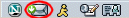
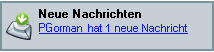

Dieses Dokument wird von Netscape nur zu Ihrer Information bereitgestellt. Es soll Ihnen helfen, bestimmte Schritte zum Schutz der Privatsphäre und Sicherheit Ihrer persönlichen Informationen im Internet auszuführen. In diesem Dokument werden jedoch nicht alle Fragen der Onlineprivatsphäre und -sicherheit behandelt. Außerdem möchte Netscape in diesem Dokument keine Empfehlung abgeben, was einen angemessenen Schutz der Privatsphäre und der Sicherheit im Internet darstellt.
Verwenden von Netscape EMail & Newsgroups
Mit Netscape EMail & Newsgroups können Sie die gesamte Internetkommunikation zentral verwalten. Sie können mehrere geschäftliche und private eMail-Konten und Internet-Diskussionsforen mithilfe eines einzigen Fensters, nämlich dem Fenster EMail & Newsgroups, einrichten und verwalten. Darüber hinaus haben Sie im Fenster EMail & Newsgroups Zugriff auf Netscape WebMail und AOL-Mail-Konten.
So verwenden Sie Netscape EMail & Newsgroups:
- Klicken Sie in der linken unteren Ecke des Netscape Navigator-Fensters auf das Symbol EMail & Newsgroups.
 |
| |
Symbol für EMail & Newsgroups |
Erste Schritte mit Netscape EMail & Newsgroups
Verwenden des Konto-Assistenten für EMail
Wenn Sie ein eMail- oder Diskussionsforenkonto einrichten möchten, klicken Sie im Menü Fenster auf EMail & Newsgroups. Falls Sie noch kein Konto eingerichtet haben, wird automatisch der Konto-Assistent gestartet, mit dem Sie ein Konto einrichten können.
Der Konto-Assistent führt Sie schrittweise durch das Erstellen eines neuen Kontos. Wenn Ihnen eine Einstellung nicht bekannt ist, klicken Sie auf Abbrechen und fragen Sie Ihren Internetdienstanbieter (ISP) oder Helpdesk.
Der Konto-Assistent wird beim Öffnen des EMail-Fensters nicht automatisch gestartet, falls bereits ein Konto vorhanden ist. Klicken Sie stattdessen nach dem Öffnen des EMail-Fensters im Menü Datei auf Neu und anschließend auf Konto. Weitere Informationen finden Sie unter Einrichten zusätzlicher Konten für EMail & Newsgroups.
Einrichten eines AOL- oder Netscape WebMail-Kontos
America Online (AOL) ist einer der beliebtesten Internetdienstanbieter. Netscape WebMail ist ein kostenloser EMail-Dienst, der einfach in der Handhabung ist und von überall aus abgerufen werden kann.
Wenn Sie bereits ein AOL- oder Netscape WebMail-Konto besitzen, können Sie mit dem Konto-Assistenten Netscape EMail & Newsgroups einrichten, um eMail von Ihrem Konto abzurufen. Klicken Sie im Menü Bearbeiten auf EMail & Newsgroups-Kontoeinstellungen und klicken Sie dann auf Neues Konto.
Wenn Sie noch kein Netscape WebMail-Konto besitzen, können Sie sich für ein kostenloses Konto anmelden, indem Sie im Ordnerfenster auf das Symbol Kostenfreie Webmail klicken.
Anmerkung: AOL Instant Messenger muss installiert sein, um ein AOL- oder Netscape WebMail-Konto einrichten und verwenden zu können. (AOL Instant Messenger wird standardmäßig zusammen mit Netscape 7.0 installiert.)
Einrichten von EMail-Konten bei einem ISP oder eMail-Anbieter.
Bevor Sie ein EMail-Konto einrichten, benötigen Sie von Ihrem Internet- oder eMail-Dienstanbieter die folgenden Informationen:
- Ihren Benutzernamen
- Ihre eMail-Adresse
- die Namen der Server für eingehende und für ausgehende EMail
- den Servertyp für eingehende EMail (IMAP oder POP)
Bevor Sie ein Diskussionsforenkonto einrichten, benötigen Sie von Ihrem Internet- oder eMail-Dienstanbieter die folgenden Informationen:
- Ihre eMail-Adresse
- den Namen des Diskussionsforenservers
- den Kontonamen
So richten Sie ein neues eMail- oder Diskussionsforenkonto ein (ausgehend vom EMail-Fenster):
- Klicken Sie im Menü Bearbeiten auf EMail & Newsgroups-Kontoeinstellungen. Das Dialogfeld EMail & Newsgroups-Kontoeinstellungen wird geöffnet.
- Klicken Sie auf die Schaltfläche Neues Konto, um den Konto-Assistenten zu öffnen.
Die vom Konto-Assistenten angeforderten Informationen hängen davon ab, welchen Kontotyp Sie erstellen möchten. Die folgenden fett formatierten Fenster werden angezeigt, wenn Sie ein Internet- oder eMail-Dienstanbieterkonto einrichten.
- Neues Konto einrichten: Wählen Sie aus, welcher Kontotyp eingerichtet werden soll und klicken Sie auf Weiter.
- Identität: Geben Sie Ihren Namen und Ihre eMail-Adresse für dieses Konto ein und klicken Sie dann auf Weiter.
- Server-Informationen: Geben Sie an, ob Sie ein POP- oder ein IMAP-Konto einrichten möchten. Nicht alle Dienstanbieter unterstützen beide Optionen. Weitere Informationen finden Sie unter EMail & Newsgroups-Kontoeinstellungen – Server-Einstellungen.
Sie müssen außerdem den Namen des Servers für eingehende EMail und den Namen des Servers für ausgehende EMail (SMTP) eingeben. Dies ist der Name des EMail-Servers, der die Nachrichten sendet, der so genannte SMTP-Host. Klicken Sie auf Weiter, um fortzufahren.
Anmerkung: Sie müssen nur einen Server für ausgehende EMail (SMTP) angeben, auch wenn Sie mehrere EMail-Konten verwenden. Der Name des SMTP-Hosts ist in den Informationen zum Einrichten von Konten, die Sie erhalten haben, möglicherweise nicht aufgeführt. Der SMTP-Host könnte beispielsweise mit dem POP- oder IMAP-Host identisch sein. Wenden Sie sich an Ihren Internetdienstanbieter oder Systemadministrator, wenn Sie sich nicht sicher sind.
- Benutzername: Geben Sie den Benutzernamen ein, den Sie von Ihrem Internet- oder eMail-Dienstanbieter erhalten haben, und klicken Sie auf Weiter.
- Kontoname: Geben Sie einen Namen einfür das Konto ein, und klicken Sie auf Weiter.
- Glückwunsch! Überprüfen Sie, ob die eingegebenen Informationen korrekt sind. Lassen Sie bei Bedarf die Informationen von Ihrem ISP oder Systemadministrator überprüfen. Wenn Sie sicher sind, dass die Informationen stimmen, klicken Sie auf Fertig stellen, um das Konto einzurichten.
- Das neue Konto wird nun auf der linken Seite des Dialogfelds EMail & Newsgroups-Kontoeinstellungen angezeigt. Klicken Sie auf OK, um das neue Konto zu verwenden.
Sie können nun Nachrichten von Ihrem Konto abrufen. Weitere Informationen finden Sie unter Abrufen neuer Nachrichten.
[ Zurück zum Anfang des Abschnitts ]
Einrichten zusätzlicher Konten für EMail & Newsgroups
Im Dialogfeld Kontoeinstellungen können Sie ein neues Konto hinzufügen oder die folgenden Informationen für ein vorhandenes Konto ändern:
- Einstellungen für EMail- und Diskussionsforenserver (z. B. Löschen von Nachrichten und Einstellungen für Downloads)
- Speichereinstellungen für Kopien von Nachrichten und Ordnern
- Ihre Rückantwortadresse, den Namen Ihrer Organisation und die Signatur
So fügen Sie ein neues Konto hinzu oder ändern die Einstellungen eines vorhandenen Kontos (ausgehend vom EMail-Fenster):
- Klicken Sie im Menü Bearbeiten auf EMail & Newsgroups-Kontoeinstellungen. Das Dialogfeld EMail & Newsgroups-Kontoeinstellungen wird geöffnet. Sie können folgende Optionen verwenden:
- Neues Konto: Klicken Sie auf diese Schaltfläche, um ein neues eMail- oder Diskussionsforenkonto einzurichten. Stellen Sie sicher, dass Sie die Kontodaten exakt eingeben. Klicken Sie auf Weiter oder Zurück, um in den Dialogfeldern zu navigieren, oder klicken Sie auf Abbrechen, um das Erstellen eines Kontos zu beenden.
- Standard: Wählen Sie ein Konto aus und klicken Sie auf diese Schaltfläche, damit dieses Konto am Anfang der Kontoliste im EMail-Fenster angezeigt wird. Die Änderung wird wirksam, wenn Sie EMail & Newsgroups das nächste Mal öffnen.
Als Standardkonto definieren Sie das Konto, bei dem Sie sich anmelden und (nur für IMAP-Konten) automatisch nach neuen Nachrichten suchen möchten, wenn Sie EMail & Newsgroups starten. (Für POP-Konten müssen Sie immer auf die Schaltfläche Nachr. abrufen klicken, um die neuen Nachrichten abzurufen.)
- Konto entfernen: Wählen Sie ein Konto aus und klicken Sie auf diese Schaltfläche, um das Konto vollständig aus dem EMail-Fenster zu entfernen.
- Server für ausgehende EMail (SMTP): Klicken Sie auf diese Option (am Ende der Kontoliste), um die Angaben zum Server für ausgehende EMail zu ändern. Weitere Informationen finden Sie unter EMail & Newsgroups-Kontoeinstellungen – Server für ausgehende EMail (SMTP).
- Klicken Sie auf die Titel unter den jeweiligen Kontonamen und ändern Sie die entsprechenden Einstellungen im rechten Fensterausschnitt.
- Klicken Sie auf OK, um die Änderungen zu speichern.
[ Zurück zum Anfang des Abschnitts ]
Ändern der Einstellungen für ein Konto
So können Sie die Informationen für ein bestehendes eMail- oder Diskussionsforenkonto anzeigen oder ändern (ausgehend vom EMail-Fenster):
- Klicken Sie im Menü Bearbeiten auf EMail & Newsgroups-Kontoeinstellungen. Das Dialogfeld EMail & Newsgroups-Kontoeinstellungen wird geöffnet.
- Klicken Sie auf der linken Seite des Dialogfelds Kontoeinstellungen auf den Kontonamen. Auf rechten Seite des Dialogfelds sehen Sie Informationen zum Konto, wie beispielsweise eMail-Adresse und Signaturdatei.
- Klicken Sie auf Elemente neben dem jeweiligen Kontonamen, um die entsprechenden Einstellungen anzuzeigen:
- Server-Einstellungen: Die verfügbaren Einstellungen hängen vom Servertyp ab (IMAP-, POP- oder Diskussionsforenserver). Weitere Informationen finden Sie unter EMail & Newsgroups-Kontoeinstellungen – Server-Einstellungen.
Wichtig: Wenn Sie den Servertyp ändern müssen (z. B. von POP in IMAP), müssen Sie zunächst das bestehende Konto entfernen. Anschließend müssen Sie Netscape beenden und neu starten. Sie können dann erneut das Dialogfeld EMail & Newsgroups-Kontoeinstellungen öffnen und das Konto mit dem neuen Servertyp erneut anlegen, indem Sie auf Neues Konto klicken.
- Kopien und Ordner: Diese Einstellungen bestimmen, ob automatische Nachrichten (BCC) gesendet werden sollen und wo Kopien ausgehender Nachrichten, Nachrichtenentwürfe und –vorlagen gespeichert werden sollen. Weitere Informationen finden Sie unter EMail & Newsgroups-Kontoeinstellungen – Kopien und Ordner.
- Adressierung: Mit diesen Einstellungen überschreiben Sie die globalen Verzeichnisserver-Einstellungen, die für alle Adressbücher im Dialogfeld Einstellungen festgelegt wurden. Weitere Informationen finden Sie unter EMail & Newsgroups-Kontoeinstellungen – Adressierung.
- Offline-Arbeit & Speicherplatz (nur IMAP- und Diskussionsforenkonten): Diese Einstellungen gelten, wenn Sie offline (ohne Internetverbindung) arbeiten oder Downloadzeit und Speicherplatz sparen müssen. Weitere Informationen finden Sie unter Einstellungen für Offline-Arbeit und Speicherplatz (IMAP) oder Einstellungen für Offline-Arbeit und Speicherplatz (Nachrichten).
- Speicherplatz (nur POP-Konten): Diese Einstellung bestimmt, bis zu welcher Größe Nachrichten auf die Festplatte heruntergeladen werden dürfen. Weitere Informationen finden Sie unter Einstellungen für Speicherplatz (POP).
- Sicherheit: Diese Einstellungen bestimmen, welche Zertifikate verwendet werden, um Nachrichten, die Sie versenden, digital zu signieren und zu verschlüsseln. Mithilfe digitaler Signaturen können Sie sich gegenüber anderen Benutzern in Nachrichten, die Sie versenden, zuverlässig identifizieren. Die Verschlüsselung stellt sicher, dass Ihre Nachrichten beim Senden im Internet nicht von Unbefugten gelesen werden. Weitere Informationen finden Sie unter EMail & Newsgroups-Kontoeinstellungen – Sicherheit.
- Klicken Sie auf OK, um die Änderungen zu speichern.
[ Zurück zum Anfang des Abschnitts ]
Verwenden von AOL Instant Messenger mit Netscape EMail & Newsgroups
Wenn Sie AOL Instant Messenger verwenden, können Sie mit Netscape EMail & Newsgroups schnell mit Bekannten und Kollegen korrespondieren, während Sie Ihre EMails bearbeiten. Beispielsweise können Sie Einträge in der Buddy-Liste schnell dem Adressbuch hinzufügen und Kollegen, die online sind, Telegramme aus jedem Nachrichtenfenster senden.
Sobald Sie sich bei AOL Instant Messenger angemeldet haben, können Sie auch sehen, ob die Absender oder Empfänger eingehender Nachrichten ebenfalls angemeldet sind. Wenn das IM-Anwesenheitssymbol  rechts vom Namen einer Person im Nachrichtenumschlag angezeigt wird, können Sie mit der rechten Maustaste auf den Namen klicken und dann im Kontextmenü auf Telegramm senden klicken, um eine Sitzung zu starten.
rechts vom Namen einer Person im Nachrichtenumschlag angezeigt wird, können Sie mit der rechten Maustaste auf den Namen klicken und dann im Kontextmenü auf Telegramm senden klicken, um eine Sitzung zu starten.
Anmerkung: Der Benutzername einer Person muss in einem Ihrer Adressbücher vorhanden sein, damit das IM-Anwesenheitssymbol angezeigt wird.
So melden Sie sich bei AOL Instant Messenger an:
- Klicken Sie im Menü Fenster auf Instant Messenger oder klicken Sie in der Statusleiste auf das Symbol für den Instant Messenger.
- Geben Sie Ihren Benutzernamen und Ihr Kennwort ein und klicken Sie dann auf das Symbol Anmelden.
 |
| |
Das AOL Instant-Messenger-Symbol |
Weitere Informationen zum Verwenden von AOL Instant Messenger finden Sie unter Erste Schritte mit Instant Messenger.
[ Zurück zum Anfang des Abschnitts ]
Lesen von Nachrichten
Abrufen neuer Nachrichten
Für ein IMAP-Konto können Sie neue Nachrichten automatisch abrufen und in der Posteingang (Posteingang) anzeigen lassen, indem Sie EMail & Newsgroups öffnen und die Posteingang für das IMAP-Konto auswählen.
Bei einem POP-Konto müssen Sie die Posteingang auswählen und auf Nachr. abrufen klicken, um Ihre Nachrichten abzurufen. Standardmäßig werden Nachrichten in Ihrem POP-Konto beim Abrufen des POP-Servers gelöscht. Sie können die POP-Server-Einstellungen ändern, um Kopien der Nachrichten nach dem Herunterladen auf dem Server zu speichern.
EMail & Newsgroups können Sie auch so konfigurieren, dass neue Nachrichten beim Start abgerufen werden und Ihr Konto in regelmäßigen Abständen auf neue Nachrichten überprüft wird.
| |
| |
Symbol für EMail & Newsgroups |
Das Symbol EMail & Newsgroups in der Statusleiste ist mit einem grünen Pfeil versehen, um kenntlich zu machen, dass neue Nachrichten eingetroffen sind.
|  |
| |
Benachrichtigung beim Eingang neuer EMail |
So richten Sie für ein EMail-Konto die automatische Überprüfung auf neue Nachrichten ein (ausgehend vom EMail-Fenster):
- Klicken Sie im Menü Bearbeiten auf EMail & Newsgroups-Kontoeinstellungen. Das Dialogfeld EMail & Newsgroups-Kontoeinstellungen wird geöffnet.
- Wenn Sie mehrere Konten eingerichtet haben, wählen Sie ein Konto aus und klicken Sie auf die Kategorie Server-Einstellungen für dieses Konto.
- Aktivieren Sie unter Server-Einstellungen eines oder beide der folgenden Kontrollkästchen:
- Beim Start auf neue Nachrichten überprüfen: Aktivieren Sie dieses Kontrollkästchen, wenn dieses Konto beim Start von EMail & Newsgroups automatisch auf neue Nachrichten überprüft werden soll. Bei POP-Konten überprüft EMail & Newsgroups auf neue Nachrichten, lädt neue Nachrichten aber erst dann herunter, wenn Sie auf Nachr. abrufen klicken, es sei denn, Sie haben die Option Neue Nachrichten automatisch herunterladen aktiviert.
- Nachrichten alle ___ Minuten abfragen: Aktivieren Sie dieses Kontrollkästchen, wenn Sie angeben möchten, in welchem Zeitabstand in Minuten Nachrichten abgerufen werden sollen. Sie können das Konto jederzeit auf neue Nachrichten überprüfen, indem Sie im EMail-Fenster auf Nachr. abrufen klicken.
- Klicken Sie auf OK. Ihre Änderungen werden beim nächsten Start von Netscape EMail & Newsgroups wirksam.
Unter Einstellungen für EMail & Newsgroups – EMail & Newsgroups finden Sie weitere Informationen darüber, wie Sie Netscape EMail & Newsgroups konfigurieren, um beim Eintreffen neuer Nachrichten ein akustisches Signal abzuspielen oder ein Benachrichtigungsfenster anzuzeigen.
Sie können jederzeit manuell Nachrichten abrufen. Wenn Sie neue Nachrichten für das ausgewählte Konto oder Diskussionsforum abrufen möchten, müssen Sie einen der folgenden Schritte ausführen:
- Klicken Sie auf der EMail-Symbolleiste auf die Schaltfläche Nachr. abrufen.
- Klicken Sie im EMail-Fenster im Menü Datei auf Neue Nachrichten abrufen.
So rufen Sie neue Nachrichten für alle EMail-Konten ab (ausgehend vom EMail-Fenster):
- Klicken Sie auf der EMail-Symbolleiste auf das Dreieck neben der Schaltfläche Nachr. abrufen.
- Klicken Sie auf Alle neuen Nachrichten abrufen. Netscape EMail & Newsgroups ruft dann die neuen Nachrichten für alle Ihre EMail-Konten ab.
Wenn Sie bei einem Ihrer EMail-Konten gerade nicht angemeldet sind, fragt EMail & Newsgroups nach dem Benutzernamen und Passwort, bevor die Nachrichten für dieses Konto abgerufen werden. (Wenn Sie Ihren Benutzernamen und Ihr Passwort bereits im Passwort-Manager gespeichert haben, werden diese Informationen nicht abgefragt.)
Anmerkung: Sie können auch im Menü Datei (im EMail-Fenster) auf Neue Nachrichten abrufen für klicken.
So rufen Sie neue Nachrichten für ein bestimmtes EMail-Konto ab (ausgehend vom EMail-Fenster):
- Klicken Sie auf der EMail-Symbolleiste auf das Dreieck neben der Schaltfläche Nachr. abrufen.
- Wählen Sie das Konto aus, dessen Nachrichten Sie abrufen möchten.
Anmerkung: Wenn Sie zum ersten Mal Nachrichten für ein Konto abrufen, werden Sie von EMail & Newsgroups zur Eingabe Ihres Passworts aufgefordert. Zu diesem Zeitpunkt können Sie auswählen, ob das Passwort von EMail & Newsgroups im Passwort-Manager gespeichert werden soll.
Der Passwort-Manager kann alle Ihre Benutzernamen und Passwörter auf Ihrem Computer speichern und automatisch für Sie eingeben. Weitere Informationen finden Sie unter Verwenden des Passwort-Managers.
[ Zurück zum Anfang des Abschnitts ]
Festlegen des Layouts für das EMail-Fenster
Sie können das Layout des EMail-Fensters (das Fenster, das angezeigt wird, wenn Sie im Menü Fenster auf EMail & Newsgroups klicken) anpassen.
- Klicken Sie im Menü Anzeigen auf Ein-/ausblenden, um die EMail-Symbolleiste, die Suchleiste oder die Statusleiste ein- oder auszublenden.
- Klicken Sie im Menü Anzeigen auf Ein-/ausblenden und klicken Sie auf Meine Seitenleiste, um diese Leiste auszublenden.
- Sie können jeden Fensterausschnitt ein- und ausblenden und zwischen einer Ansicht mit zwei bzw. drei Fensterausschnitten wechseln. Wählen Sie im Fenster Einstellungen für eMail- und Diskussionsforen eine Standardansicht aus. Wenn Sie die Standardansicht ändern, müssen Sie EMail & Newsgroups beenden und Netscape neu starten, damit die Änderungen wirksam werden.
[ Zurück zum Anfang des Abschnitts ]
Sortieren und Ordnen von Nachrichten
So sortieren Sie Nachrichten nach Kategorien wie Betreff, Absender, Datum oder Priorität (ausgehend vom EMail-Fenster):
- Klicken Sie im Nachrichtenliste-Fenster auf die entsprechende Spaltenüberschrift. Oder klicken Sie im Menü Anzeigen auf Sortieren nach und wählen Sie die entsprechende Spalte, nach der sortiert werden soll.
So ordnen Sie Spaltenüberschriften neu an (ausgehend vom EMail-Fenster):
- Klicken Sie auf eine Spaltenüberschrift und ziehen Sie sie nach links oder rechts, um die Spalte neu zu positionieren.
So ordnen Sie Nachrichten thematisch, sodass jede Nachricht mit allen dazugehörigen Antworten aufgelistet wird:
- Klicken Sie auf die Schaltfläche Thread auf der linken Seite der Spaltenüberschriften Betreff, Absender und Datum.
 |
| |
Die Schaltfläche "Thread" |
Tipp: Damit Sie ungelesene Nachrichten in einem ausgeblendeten Thread, dessen übergeordnete Nachricht Sie gelesen haben, erkennen können, unterstreicht Netscape EMail & Newsgroups die übergeordnete Nachricht.
[ Zurück zum Anfang des Abschnitts ]
Speichern und Drucken von Nachrichten
So speichern Sie eine EMail-Nachricht als Text-, HTML- oder Outlook Express-Datei:
- Klicken Sie im EMail-Fenster auf die Nachricht.
- Klicken Sie im Menü Datei auf Speichern unter und dann auf Datei.
- Wählen Sie für Dateityp einen Dateityp aus (HTML-Dateien, Textdateien oder eMail-Dateien). Wählen Sie die Option eMail-Dateien, wenn Sie die Nachricht so speichern möchten, dass Sie sie in Microsoft Outlook oder Outlook Express öffnen können.
- Ändern Sie die Dateierweiterung auf .html, .txt oder .eml, je nachdem, welchen Dateityp Sie in Schritt 3 ausgewählt haben.
- Wählen Sie einen Speicherort für die Datei aus und klicken Sie auf Speichern.
So drucken Sie eine ausgewählte Nachricht:
- Klicken Sie auf die Schaltfläche Drucken.
[ Zurück zum Anfang des Abschnitts ]
Steuern von Grafiken, Skripts und Plugins
Standardmäßig können Sie eingebettet Grafiken in EMail-Nachrichten, die Sie erhalten, anzeigen. So unterdrücken Sie das Herunterladen von Grafiken, die in als Anlage gesendeten Webseiten eingebettet sind:
- Klicken Sie im Menü Bearbeiten auf Einstellungen.
- Klicken Sie in der Kategorie Privatsphäre und Sicherheit auf Grafiken. (Wenn in dieser Kategorie keine Einträge angezeigt werden, doppelklicken Sie auf Privatsphäre und Sicherheit, um die Liste zu erweitern.)
- Wählen Sie die Option Keine eingebetteten Grafiken in Mail- & Newsgroup-Nachrichten laden.
- Klicken Sie auf OK, damit die Änderung wirksam wird.
Standardmäßig sind für EMail-Nachrichten, die Sie empfangen, JavaScript nicht und Plugins aktiviert. So ändern Sie diese Einstellungen:
- Klicken Sie im Menü Bearbeiten auf Einstellungen.
- Klicken Sie in der Kategorie Erweitert auf Skripts und Plugins. (Wenn in dieser Kategorie keine Einträge angezeigt werden, doppelklicken Sie auf Erweitert, um die Liste zu erweitern.)
- Klicken Sie unter JavaScript für EMail & Newsgroups aktivieren auf EMail & Newsgroups, um JavaScript für Webseiten zu aktivieren, die in EMail-Nachrichten angezeigt werden.
- Deaktivieren Sie unter Aktivieren von Plugins für die Option EMail & Newsgroups, um Plugins zu deaktivieren.
- Klicken Sie auf OK, damit die Änderungen wirksam werden.
[ Zurück zum Anfang des Abschnitts ]
Senden von Nachrichten
Erstellen von EMail- und Diskussionsforen-Nachrichten
Um eine neue Nachricht zu adressieren, zu erstellen, auf eine Nachricht zu antworten oder eine Nachricht zu senden, führen Sie einen der folgenden Schritte aus:
- Klicken Sie in einem beliebigen Netscape-Fenster im Menü Datei auf Neu und anschließend auf Nachricht.
- Klicken Sie auf der EMail-Symbolleiste auf die Schaltfläche Verfassen.
- Wenn eine Nachricht angezeigt wird, klicken Sie auf der EMail-Symbolleiste auf die Schaltfläche Antwort, Weiterleiten oder Antwort an alle.
- Wählen Sie im Fenster Adressbuch eine Adresse aus und klicken Sie auf Neue Karte.
Tipp: Verwenden Sie das Dialogfeld EMail & Newsgroups-Kontoeinstellungen, um den HTML-Text-Editor zum Erstellen von Nachrichten, die von diesem Konto gesendet werden, festzulegen. (Sie können für jedes Konto einen anderen Editor festlegen.) Wählen Sie das entsprechende Konto aus und aktivieren Sie das Kontrollkästchen Nachrichten im HTML-Format verfassen, um den HTML-Text-Editor für alle Nachrichten zu verwenden. Weitere Informationen hierzu finden Sie unter Ändern der Einstellungen für ein Konto.
Beim Verfassen von Nachrichten im HTML-Format können Sie unterschiedliche Schriftarten, Textformatierungen (z. B. fett oder kursiv) und Textfarben, Tabellen, Aufzählungs- oder Punktelisten sowie Grafiken für die Nachrichten verwenden. Es kann jedoch sein, dass manche Empfänger nur Nachrichten lesen können, die im Textformat erstellt wurden. Wenn Sie den Normaltext-Editor von Zeit zu Zeit verwenden möchten, klicken Sie bei gedrückter Umschalttaste auf die Schaltfläche Verfassen oder Antwort, um den Normaltext-Editor bei Bedarf zu verwenden.
[ Zurück zum Anfang des Abschnitts ]
Verwenden des Nachrichtenerstellungsfensters
Verwenden Sie das Fenster Erstellen, um eMail- und Diskussionsforen-Nachrichten zu adressieren, zu erstellen und zu senden. Legen Sie zuerst im Fenster EMail & Newsgroups-Kontoeinstellungen fest, ob Nachrichten im Normaltext- oder HTML-Format erstellt werden sollen (klicken Sie im Menü Bearbeiten auf EMail & Newsgroups-Kontoeinstellungen).
Zum Öffnen des Fensters Erstellen klicken Sie auf der EMail-Symbolleiste auf die Schaltfläche Verfassen.
Das Fenster Erstellen enthält folgende Elemente:
Wenn Sie Nachrichten mithilfe des HTML-Editors erstellen möchten, wird eine zusätzliche Symbolleiste mit ähnlichen Textformatierungsschaltflächen wie in Netscape Composer eingeblendet.
Informationen zum Verwenden des HTML-Editors finden Sie unter Formatieren Ihrer Webseiten.
[ Zurück zum Anfang des Abschnitts ]
Adressieren von Nachrichten
So adressieren Sie EMail-Nachrichten:
- Geben Sie den Namen in das Feld An ein.
Wenn die Option Auto-Vervollständigung der Adresse aktiviert ist (diese Option ist standardmäßig aktiviert), müssen Sie nur die ersten Buchstaben des Namens des Empfängers eingeben, EMail & Newsgroups vervollständigt dann die Adresse selbständig. (Sie können auch einen Teil des Namens eingeben und sofort auf die Eingabetaste drücken, damit die Adresse von EMail & Newsgroups vervollständigt wird.)
- Wenn mehrere Adressen angezeigt werden, wählen Sie die gewünschte Adresse aus und drücken Sie die Eingabetaste.
Anmerkung: Trennen Sie mehrere Adressen in derselben Zeile durch Kommas. Trennen Sie Vor- und Zunamen nicht durch Kommas. Ein Beispiel für mehrere Einträge:
user1@netscape.net,user2@netscape.net
- Wenn die Nachricht von einem anderen Konto aus gesendet werden soll, klicken Sie auf das Feld Von:, um das entsprechende Konto auszuwählen. Weitere Informationen finden Sie unter Ändern des Kontos, von dem aus eine Nachricht gesendet wird.
- Klicken Sie ggf. auf An:, um einen anderen Empfängertyp auszuwählen:
-
- An: Für primäre Empfänger der Nachricht.
- CC: Für sekundäre Empfänger der Nachricht (Kopie).
- BCC: Für sekundäre Empfänger, die anderen Empfängern, einschließlich den Empfängern der CC-Liste, nicht angezeigt werden (Blindkopie).
- Rückantwort: Wenn die Empfänger an eine andere eMail-Adresse, nicht an die Absenderadresse, antworten sollen.
- Diskussionsforum: Zum Versenden von Nachrichten an ein Diskussionsforum.
- Follow-Up an: Zum Weiterleiten von Diskussionsforennachrichten, sodass nachfolgende Antworten direkt an das weitergeleitete Diskussionsforum und nicht an das ursprüngliche Diskussionsforum weitergeleitet werden.
Tipp: Sie können eine Nachricht schnell adressieren, indem Sie mit der rechten Maustaste auf die eMail-Adresse in der Nachricht, die Sie gerade lesen, klicken und dann im Kontextmenü auf eMail verfassen an klicken.
Ändern des Kontos, von dem aus eine Nachricht gesendet wird
Wenn Sie über mehrere eMail-Konten verfügen, basiert das Konto, das im Feld Von angezeigt wird, auf dem Konto (oder Server), das ausgewählt ist, wenn Sie eine neue Nachricht erstellen. In Netscape EMail & Newsgroups können Sie jedoch das Konto, von dem aus eine Nachricht gesendet wird, beim Verfassen der Nachricht ändern. Klicken Sie auf das Feld Von, um eine Liste der Konten anzuzeigen, und wählen Sie anschließend das entsprechende Konto aus. Eine Kopie der Nachricht wird im Ordner Sent des Kontos gespeichert, von dem aus die Nachricht gesendet wurde.
Informationen zur Auto-Vervollständigung von Adressen
Mit dieser Funktion können Sie Nachrichten im Fenster Erstellen adressieren, ohne Namen suchen oder vollständige Namen eingeben zu müssen. EMail & Newsgroups überprüft automatisch die Adressbücher und einen eventuell verfügbaren LDAP-Verzeichnisserver und vervollständigt die Namen, wenn eine eindeutige Übereinstimmung vorhanden ist. Fehler werden verhindert, indem alle gefundenen Namen angezeigt werden, falls mehrere Übereinstimmungen gefunden wurden. Die Auto-Vervollständigung von Adressen ist standardmäßig aktiviert.
Wenn Sie eine von EMail & Newsgroups angebotene Adresse nicht verwenden möchten, drücken Sie die Rücktaste oder die ENTF-Taste, um Zeichen zu entfernen, und geben Sie eine andere Adresse ein.
So deaktivieren Sie die Auto-Vervollständigung von Adressen:
- Klicken Sie im Menü Bearbeiten auf Einstellungen.
- Klicken Sie in der Kategorie EMail & Newsgroups auf Adressieren. (Wenn in dieser Kategorie keine Einträge angezeigt werden, doppelklicken Sie auf EMail & Newsgroups, um die Liste zu erweitern).
- Deaktivieren Sie im Bereich Auto-Vervollständigung der Adresse das Kontrollkästchen Lokale Adressbücher und Verzeichnis-Server.
- Klicken Sie auf OK.
[ Zurück zum Anfang des Abschnitts ]
Festlegen der Optionen zum Senden von Nachrichten
Beim Erstellen einer Nachricht können Sie diese zusätzlichen Optionen zum Senden von Nachrichten im Menü Einstellungen auswählen:
- Adressen auswählen: Mit der Option Adressen auswählen können Sie die Adresse des Empfängers aus den Adressbüchern oder einem Remoteverzeichnis auswählen. Um eine Adresse in einem Adressbuch oder einem Verzeichnis zu suchen, geben Sie die ersten Buchstaben des Vor- oder Nachnamens des Empfängers ein, damit die Suche gestartet wird. Wählen Sie eine Adresse aus und klicken Sie anschließend auf die Schaltfläche An:, Cc: oder Bcc:, um die Nachricht zu adressieren.
- Rechtschreibung prüfen: Überprüft die Rechtschreibung des Nachrichtentextes vor dem Senden. Sie können auch auf die Schaltfläche Rechtschreibung klicken.
- Neu umbrechen: Wenn Sie eine Nachricht mit dem Normaltext-Editor erstellen, können Sie den Befehl Neu umbrechen verwenden, um lange Zeilen zitierten Textes umzubrechen, sodass er in das Fenster Erstellen passt. Mit diesem Befehl wird der markierte zitierte Text auf die Anzahl von Zeichen umgebrochen, die in den Einstellungen für Nachrichtenerstellung definiert sind. Dieser Befehl ist besonders hilfreich, wenn Sie eine Nachricht in einer Antwort zitieren, die lange Zeilen enthält.
Verwenden Sie den Befehl EMail & Newsgroups-Kontoeinstellungen im Menü Bearbeiten, um den Normaltext-Editor zum Erstellen von Nachrichten zu verwenden. Wählen Sie im Dialogfeld EMail & Newsgroups-Kontoeinstellungen das entsprechende Konto aus und deaktivieren Sie das Kontrollkästchen Nachrichten in HTML-Format verfassen, um den Normaltext-Editor für alle Nachrichten zu verwenden. Wenn Sie den Normaltext-Editor nur von Zeit zu Zeit verwenden möchten, klicken Sie bei gedrückter Umschalttaste auf die Schaltfläche Verfassen oder Antwort, um den Normaltext-Editor bei Bedarf zu verwenden.
- Empfangsbestätigung: Klicken Sie auf diese Option, damit Sie eine Empfangsbestätigung erhalten, wenn der Empfänger die Nachricht geöffnet hat. Beachten Sie, dass der Empfänger das Versenden der Empfangsbestätigung unterdrücken kann. Mit dieser Option können Sie Empfangsbestätigungen für jede einzelne Nachricht aktivieren oder deaktivieren. Um Empfangsbestätigungen automatisch für alle gesendeten Nachrichten anzufordern, verwenden Sie die Empfangsbestätigungseinstellungen. Weitere Informationen finden Sie unter Einstellungen für EMail & Newsgroups – Empfangsbestätigungen.
- Absatz: Sie können die Nachricht als Normaltext und/oder im HTML-Format senden. Wenn Sie die Option Auto-Vervollständigung der Adresse auswählen, werden Sie von EMail & Newsgroups zur Angabe des Formates aufgefordert, falls nicht bekannt ist, ob das eMail-Programm des Empfängers eine HTML-Nachricht anzeigen kann. Das ausgewählte Format überschreibt das Sendeformat, das Sie mit dem Befehl Einstellungen im Menü Bearbeiten festgelegt haben.
- Priorität:Wählen Sie eine Priorität aus, die anzeigt, ob die Nachricht niedrigste, niedrige, normale, hohe oder höchste Priorität hat.
- Datei: Nachricht senden:Wählen Sie diese Option aus, wenn Sie eine zusätzliche Kopie der gesendeten Nachricht in einem Ordner speichern möchten, der nicht dem Standardordner Sent entspricht. Wählen Sie anschließend den entsprechenden Ordner aus.
- Sicherheit: Wählen Sie diese Option aus, um die Standardsicherheitsoptionen für die Nachricht zu ändern.
[ Zurück zum Anfang des Abschnitts ]
Antworten auf Nachrichten
So beantworten Sie eine EMail-Nachricht:
- Wählen Sie die Nachricht aus.
- Klicken Sie auf die Schaltfläche Antwort, um nur dem Absender zu antworten.
- Klicken Sie auf die Schaltfläche Antwort an alle, um allen Empfängern der Nachricht zu antworten.
So schließen Sie die ursprüngliche Nachricht immer in die Antwort ein und positionieren die ursprüngliche Nachricht in der Antwort:
- Klicken Sie im Menü Bearbeiten auf Einstellungen.
- Klicken Sie in der Kategorie EMail & Newsgroups auf Nachrichtenerstellung. (Wenn in dieser Kategorie keine Einträge angezeigt werden, doppelklicken Sie auf EMail & Newsgroups, um die Liste zu erweitern.)
- Aktivieren Sie das Kontrollkästchen Automatisch ursprüngliche Nachricht in der Antwort zitieren.
- Wählen Sie aus, wo in der Nachricht die Antwort positioniert werden soll. Die Standardeinstellung ist Antwort über dem zitierten Text beginnen.
- Klicken Sie auf OK.
[ Zurück zum Anfang des Abschnitts ]
Weiterleiten von Nachrichten
Wenn Sie eine Nachricht weiterleiten, können Sie angeben, wo der neue Text bezogen auf den ursprünglichen Text eingefügt wird: Inline (im Text der Nachricht; dies ist der Standard) oder als Anlage.
So leiten Sie eine Nachricht weiter:
- Wählen Sie die Nachricht aus und klicken Sie auf die Schaltfläche Weiterleiten.
- Geben Sie den Namen oder die eMail-Adresse des Empfängers ein.
- Klicken Sie auf Abschicken.
So legen Sie die Standardeinstellung zum Weiterleiten von Nachrichten fest:
- Klicken Sie im Menü Bearbeiten auf Einstellungen.
- Klicken Sie in der Kategorie EMail & Newsgroups auf Nachrichtenerstellung. (Wenn in dieser Kategorie keine Einträge angezeigt werden, doppelklicken Sie auf EMail & Newsgroups, um die Liste zu erweitern.)
- Wählen Sie zum Weiterleiten von Nachrichten Inline (im Haupttext) oder Als Anlage aus.
- Klicken Sie auf OK.
Tipp: Um den Standardwert zum Weiterleiten von Nachrichten zu überschreiben, wählen Sie die Nachricht aus, klicken Sie im Menü Nachricht auf Weiterleiten als und klicken Sie dann auf Inline oder Anlage.
[ Zurück zum Anfang des Abschnitts ]
Lesebestätigung für Nachrichten
Sie können Lesebestätigungen anfordern, damit Sie benachrichtigt werden, wenn der Empfänger die Nachricht geöffnet hat. Der Empfänger muss ein EMail-Programm verwenden, das den MDN-Standard (Message Disposition Notification) unterstützt. Beachten Sie, dass der Empfänger das Versenden der Empfangsbestätigung unterdrücken kann, selbst wenn Sie diese angefordert haben. Für Nachrichten, die Sie an eine Diskussionsforumadresse senden, sind keine Empfangsbestätigungen möglich, da Diskussionsforenserver diese Funktion nicht unterstützen.
Um Empfangsbestätigungen für alle gesendeten Nachrichten anzufordern, können Sie die globalen Empfangsbestätigungseinstellungen aktivieren. Mithilfe der Empfangsbestätigungseinstellungen können Sie außerdem definieren, wie Empfangsbestätigungsanforderungen, die Sie erhalten, behandelt werden sollen. Sie können diese globalen Einstellungen für einzelne Konten überschreiben.
So fordern Sie eine Empfangsbestätigung für einzelne Nachrichten an:
- Klicken Sie im Fenster Erstellen im Menü Einstellungen auf Empfangsbestätigung.
So fordern Sie automatisch Empfangsbestätigungen beim Senden von Nachrichten von Ihren EMail-Konten an:
- Klicken Sie im Menü Bearbeiten auf Einstellungen.
- Klicken Sie in der Kategorie EMail & Newsgroups auf Empfangsbestätigungen. (Wenn in dieser Kategorie keine Einträge angezeigt werden, doppelklicken Sie auf EMail & Newsgroups, um die Liste zu erweitern.)
- Aktivieren Sie die Option Beim Versenden von Nachrichten immer eine Empfangsbestätigung anfordern.
- Klicken Sie auf OK.
Weitere Informationen zum Festlegen von Empfangsbestätigungseinstellungen finden Sie unter Einstellungen für EMail & Newsgroups – Empfangsbestätigungen.
[ Zurück zum Anfang des Abschnitts ]
Speichern und Bearbeiten eines Nachrichtenentwurfs
So speichern Sie eine EMail-Nachricht als Entwurf, den Sie später vervollständigen können:
So bearbeiten oder senden Sie einen Nachrichtenentwurf (ausgehend vom EMail-Fenster):
- Klicken Sie auf den Ordner Entwürfe für das Konto, in dem Sie den Nachrichtenentwurf erstellt haben.
- Klicken Sie auf die Nachricht, die Sie bearbeiten möchten.
- Klicken Sie in der oberen rechten Ecke der Nachricht auf die Schaltfläche Entwurf bearbeiten.
- Nehmen Sie die notwendigen Änderungen an der Nachricht vor.
- Klicken Sie auf Abschicken, um die Nachricht zu senden, oder auf Speichern, wenn Sie die Nachricht später weiter bearbeiten möchten.
-
Anmerkung: Beim Versenden der Nachricht wird diese aus dem Ordner Entwürfe entfernt.
Tipp: Sie können auch auf die Nachricht doppelklicken, um sie zur Bearbeitung zu öffnen. Dies ist besonders dann hilfreich, wenn das Nachrichtenfenster geschlossen ist.
So löschen Sie einen oder mehrere Nachrichtenentwürfe (ausgehend vom EMail-Fenster):
- Klicken Sie auf den Ordner Entwürfe für das Konto, in dem Sie die Nachrichtenentwürfe erstellt haben.
- Wählen Sie die Nachrichtenentwürfe aus, die Sie löschen möchten.
- Klicken Sie auf der EMail-Symbolleiste auf Löschen.
[ Zurück zum Anfang des Abschnitts ]
Erstellen und Verwenden von Vorlagen
Mit Vorlagen können Sie das Standardformat für Nachrichten festlegen, die Sie regelmäßig versenden, beispielsweise wöchentliche Statusberichte. Sie können eine Nachricht in jedem Fenster, in dem sie angezeigt wird, als Vorlage speichern, auch in einem Nachrichtenerstellungsfenster.
So speichern Sie eine Nachricht als Vorlage:
- Klicken Sie im EMail-Fenster auf Verfassen, um eine neue Nachricht zu verfassen. Legen Sie anschließend Standardschrift, Textgröße, Textfarbe, Hintergrundfarbe und sonstige Standardformatierungen fest.
Sie können aber auch eine vorhandene Nachricht öffnen, die bereits die gewünschten Formatierungen aufweist.
- Klicken Sie bei geöffneter Nachricht im Menü Datei auf Speichern unter und anschließend auf Vorlage. Die Nachricht wird als Vorlage im Ordner Vorlagen für das aktuelle EMail-Konto gespeichert.
So erstellen Sie eine Nachricht mithilfe einer Vorlage:
- Wählen Sie im EMail-Fenster den Ordner Vorlagen für das Konto aus, in dem Sie die Nachrichtenvorlage erstellt haben.
- Doppelklicken Sie auf die Nachrichtenvorlage, um sie zu öffnen.
- Bearbeiten Sie die Nachricht, und speichern (im Ordner Entwürfe) oder senden Sie sie anschließend.
-
Anmerkung: Beim Senden der Nachricht wird die Vorlage nicht im Ordner Vorlagen gelöscht. Die Vorlage wird für die spätere Verwendung gespeichert.
So löschen Sie eine oder mehrere Nachrichtenvorlagen (ausgehend vom EMail-Fenster):
- Klicken Sie auf den Ordner Vorlagen für das Konto, in dem Sie die Nachrichtenvorlagen erstellt haben.
- Wählen Sie die Nachrichtenvorlagen aus, die Sie löschen möchten.
- Klicken Sie auf der EMail-Symbolleiste auf Löschen.
[ Zurück zum Anfang des Abschnitts ]
Erstellen von HTML-Mail-Nachrichten
Verwenden von HTML in Nachrichten
HTML-Nachrichten können wie eine Webseite formatierten Text, Verknüpfungen, Grafiken und Tabellen enthalten. Allerdings können manche Benutzer möglicherweise keine HTML-Nachrichten empfangen. In Netscape EMail & Newsgroups können Sie EMail- und Diskussionsforen-Nachrichten mithilfe des HTML (Rich-Text)-Editors oder mithilfe des Normaltext-Editors für ein EMail-Konto erstellen. Außerdem können Sie festlegen, ob die Empfänger standardmäßig HTML- oder Normaltextnachrichten empfangen sollen und wie EMail & Newsgroups verfahren soll, wenn nicht bekannt ist, ob ein Empfänger EMail im HTML-Format öffnen kann.
So legen Sie fest, ob der HTML-Editor standardmäßig zum Erstellen von Nachrichten verwendet wird (ausgehend vom EMail-Fenster):
- Klicken Sie im Menü Bearbeiten auf EMail & Newsgroups-Kontoeinstellungen. Das Dialogfeld EMail & Newsgroups-Kontoeinstellungen wird geöffnet.
- Wählen Sie das eMail- oder Diskussionsforenkonto aus, das Sie verwenden möchten.
- Aktivieren Sie das Kontrollkästchen Nachrichten im HTML-Format verfassen. Die Formatierungs-Symbolleiste wird im Fenster Erstellen angezeigt. Aktivieren Sie dieses Kontrollkästchen nicht, wenn Sie den Normaltext-Editor für dieses Konto verwenden möchten.
[ Zurück zum Anfang des Abschnitts ]
Bearbeiten oder Einfügen von HTML-Elementen
Wenn Sie mit HTML-Quellcode vertraut sind, können Sie Ihrer Nachricht zusätzliche HTML-Tags, Stile, Attribute und JavaScript hinzufügen. Wenn Sie nicht gewohnt sind, mit HTML-Quellcode zu arbeiten, sollten Sie lieber keine Änderungen vornehmen. Wenn Sie mit HTML-Code arbeiten möchten, können Sie eine der folgenden Methoden anwenden:
- Platzieren Sie die Einfügemarke an der Stelle, an der HTML-Code eingefügt werden soll. Klicken Sie anschließend im Menü Einfügen auf HTML. Geben Sie im Dialogfeld HTML einfügen HTML-Tags und Text ein und klicken Sie anschließend auf Einfügen, um die Änderungen einzufügen.
- Markieren Sie den HTML-Quellcode, den Sie bearbeiten möchten, und klicken Sie anschließend im Menü Einfügen auf HTML. Bearbeiten Sie im Dialogfeld HTML einfügen die HTML-Tags und den Text und klicken Sie anschließend auf Einfügen, um die Änderungen einzufügen.
- Wählen Sie ein Objekt wie beispielsweise eine Tabelle, einen benannten Anker, eine Grafik, eine Verknüpfung oder eine horizontale Linie aus. Doppelklicken Sie auf das Objekt, um das entsprechende Eigenschaften-Dialogfeld zu öffnen. Klicken Sie auf Fortgeschrittene Bearbeitung, um das Fenster Editor – Weitere Eigenschaften zu öffnen. Im Fenster Editor – Weitere Eigenschaften können Sie Objekten HTML-Attribute und JavaScript hinzufügen.
Weitere Informationen zum Bearbeiten von HTML-Quellcode finden Sie unter Verwenden des Fensters "Editor – Weitere Eigenschaften".
[ Zurück zum Anfang des Abschnitts ]
Auswählen der Optionen zum Versenden von HTML-Mail
Standardmäßig werden Sie von EMail & Newsgroups vor dem Versenden von HTML-Nachrichten zur Auswahl der Methode aufgefordert, wenn nicht bekannt ist, ob das eMail-Programm des Empfängers Nachrichten im HTML-Format anzeigen kann.
So wählen Sie Sendeformatoptionen für Nachrichten aus (ausgehend vom EMail-Fenster):
- Klicken Sie im Menü Bearbeiten auf Einstellungen.
- Klicken Sie in der Kategorie EMail & Newsgroups auf Sendeformat. (Wenn in dieser Kategorie keine Einträge angezeigt werden, doppelklicken Sie auf EMail & Newsgroups, um die Liste zu erweitern.)
Anmerkung: Diese Einstellung bezieht sich nur auf EMail-Nachrichten, nicht auf Diskussionsforennachrichten.
- Wählen Sie die gewünschte Option aus, und klicken Sie auf OK.
Wenn Sie beim Erstellen einer Nachricht bemerken, dass Empfänger möglicherweise keine EMail im HTML-Format empfangen können, können Sie die Nachricht in ein anderes Format umwandeln, wenn Sie auf Abschicken klicken:
- Klicken Sie im Fenster Erstellen im Menü Einstellungen auf Absatz.
- Wählen Sie im Untermenü das Format aus, das Sie zum Senden der Nachricht verwenden möchten:
- Automatische Erkennung: EMail & Newsgroups wählt das entsprechende Format für den Nachrichtentext aus. Falls das Format nicht festgestellt werden kann, werden Sie zur Auswahl eines Formates aufgefordert.
- Nur Normaltext: In der Nachricht werden Formatierungen wie beispielsweise Fettformatierungen nicht angezeigt, aber alle EMail-Programme können die Nachricht darstellen.
- Nur Rich-Text (HTML): Manche EMail-Programme können möglicherweise eine Nachricht im HTML-Format nicht darstellen. Verwenden Sie diese Option nur, wenn Sie sicher sind, dass das EMail-Programm des Empfängers eMail im HTML-Format darstellen kann.
- Normal- und Rich-Text (HTML): Diese Option belegt mehr Speicherplatz, ist allerdings die beste Wahl, wenn Sie nicht sicher sind, ob das EMail-Programm des Empfängers eMail im HTML-Format darstellen kann.
- Klicken Sie auf Abschicken, wenn Sie die Erstellung der Nachricht abgeschlossen haben.
[ Zurück zum Anfang des Abschnitts ]
Festlegen von Empfängern von HTML-Nachrichten
Sie können Zeit sparen, indem Sie angeben, ob die Personen im Adressbuch Nachrichten im HTML-Format oder im Normaltextformat bevorzugen.
- Klicken Sie im Menü Fenster auf Adressbuch.
- Wählen Sie auf der linken Seite das Adressbuch und anschließend auf der rechten Seite die Karte der Person aus.
- Klicken Sie auf Eigenschaften, um das Dialogfeld Karte für zu öffnen.
- Wählen Sie auf der Registerkarte Name in der Dropdown-Liste Bevorzugt Nachrichten im Format den Eintrag HTML aus, wenn Sie wissen, dass dieser Empfänger Nachrichten im HTML-Format, die Verknüpfungen, Grafiken oder Tabellen enthalten, empfangen kann.
Wenn dieser Empfänger nur normale Textnachrichten (ohne Formatierungen) empfangen kann, wählen Sie Normaltext aus. Wenn Sie sich nicht sicher sind, wählen Sie Unbekannt aus.
In diesem Fall bestimmt Netscape EMail & Newsgroups das Sendeformat auf der Basis der Einstellungen für das Sendeformat im Dialogfeld Einstellungen für EMail & Newsgroups. Wenn EMail & Newsgroups das korrekte Format nicht ermitteln kann, werden Sie beim Senden aufgefordert, ein Format auszuwählen.
- Klicken Sie auf OK.
[ Zurück zum Anfang des Abschnitts ]
Anzeigen der Nachrichtenquelle für HTML-Nachrichten
So können Sie schnell HTML-Code und anderen Code einer empfangenen HTML-Nachricht anzeigen:
- Öffnen Sie die Nachricht im Nachrichtenliste-Fenster.
- Klicken Sie im Menü Anzeigen auf Seitenquelltext.
[ Zurück zum Anfang des Abschnitts ]
Verwenden des Dialogfelds "Frage zu HTML-Sendungen"
Das Dialogfeld Frage zu HTML-Sendungen wird angezeigt, wenn Sie versuchen, eine Nachricht an jemanden zu senden, dessen EMail-Programm HTML-Nachrichten nicht darstellen kann, oder wenn EMail & Newsgroups nicht feststellen kann, ob der Empfänger HTML-Nachrichten darstellen kann. Senden Sie eine Nachricht im HTML- und Normaltextformat, wenn Sie nicht sicher sind.
[ Zurück zum Anfang des Abschnitts ]
Verwenden von Anlagen
Anfügen einer Datei oder Webseite
So fügen Sie eine Datei an eine ausgehende eMail-Nachricht an:
- Klicken Sie im Fenster Erstellen auf die Schaltfläche Anfügen oder klicken Sie im Menü Datei auf Datei anfügen. Das Dialogfeld Geben Sie eine Datei zum Anfügen an wird geöffnet.
Tipp: Sie können auch im Bereich Anlagen klicken, um eine Datei anzufügen.
- Geben Sie den Namen der anzufügenden Datei ein oder wählen Sie eine Datei auf der Festplatte aus.
- Klicken Sie auf Öffnen. Der Dateiname wird im Bereich Anlagen angezeigt.
Tipp: Sie können auch per Drag & Drop Dateien vom Desktop im Bereich Anlagen des Fensters Erstellen einfügen.
So fügen Sie eine Webseite an eine ausgehende eMail-Nachricht an:
- Klicken Sie im Fenster Erstellen im Menü Datei auf WWW-Seite anfügen.
- Geben Sie den URL der Webseite in das angezeigte Dialogfeld ein und klicken Sie anschließend auf OK. Der URL der Webseite wird im Bereich Anlagen angezeigt.
Tipp: Wenn Sie eine Webseite im Navigator-Browser anzeigen, können Sie zum Versenden der Seite im Menü Datei auf Seite senden klicken.
[ Zurück zum Anfang des Abschnitts ]
Anzeigen und Öffnen von Anlagen
Wenn Sie eine eMail-Anlage eines Dateityps empfangen, den Netscape anzeigen kann (z. B. Grafik- oder HTML-Dateien), wird die Anlage Inline (im Nachrichtentext) angezeigt. Bei anderen Dateitypen ermöglicht EMail & Newsgroups das Öffnen der Anlage mit einer anderen Anwendung. Ansonsten können Sie die Anlage auf Ihrer Festplatte speichern.
Wenn Sie eine Anlage öffnen möchten, überprüfen Sie zunächst, ob ein Programm auf Ihrem Computer installiert ist, das Dateien dieses Typs öffnen kann. Wenn Sie beispielsweise eine DOC-Datei öffnen möchten, muss auf Ihrem Computer ein Programm installiert sein, das DOC-Dateien öffnen kann.
So öffnen Sie eine Anlage:
- Doppelklicken Sie auf die Anlage, die Sie öffnen möchten.
- Wählen Sie im Dialogfeld zum Herunterladen aus, wie Netscape mit der Anlage verfahren soll:
- Wenn Netscape auf Ihrer Festplatte eine Anwendung findet, die die Anlage öffnen kann, können Sie die Anlage mit dieser Anwendung öffnen. Klicken Sie auf Wählen, um eine andere Anwendung zum Öffnen der Anlage auszuwählen.
- Wenn Netscape auf Ihrer Festplatte keine Anwendung findet, die die Anlage öffnen kann, können Sie die Anlage speichern. Sie haben zwar keine Möglichkeit, die Anlage zu öffnen, können sie aber auf der Festplatte speichern, bis Sie eine Anwendung zum Öffnen der Anlage installiert haben.
- Klicken Sie auf Erweitert, um der Liste der Hilfsprogramme einen neuen Dateityp hinzuzufügen. Netscape verwendet Hilfsprogramme, um festzustellen, wie verschiedene Dateitypen von anderen Programmen in Netscape geöffnet werden. Weitere Informationen finden Sie unter Verwalten von verschiedenen Dateitypen.
- Klicken Sie auf OK.
Anmerkung: Wenn Sie EMail-Nachrichten unter Verwendung eines IMAP-Mail-Servers betrachten, bleiben alle Anlagen zunächst auf dem Server.
[ Zurück zum Anfang des Abschnitts ]
Speichern von Anlagen
So speichern Sie eine Anlage:
- Wählen Sie auf der rechten Seite des Nachrichtenumschlags unter Anlagen die Anlage aus, die Sie speichern möchten.
- Klicken Sie mit der rechten Maustaste (CTRL + Klicken bei Macintosh) auf die Anlage und klicken Sie im Kontextmenü auf Speichern unter.
- Wählen Sie für die Anlage einen Dateinamen und einen Speicherort auf Ihrer Festplatte aus und klicken Sie auf OK. EMail & Newsgroups lädt nun die Anlage herunter und speichert sie im angegebenen Verzeichnis.
Tipp: Um alle Anlagen einer Nachricht zu speichern, klicken Sie mit der rechten Maustaste auf die erste Anlage in der Liste, und klicken Sie dann auf Alles speichern. Anschließend können Sie den Speicherort für die Anlagen auswählen.
[ Zurück zum Anfang des Abschnitts ]
Löschen von Nachrichten
Löschen von POP- oder IMAP-Nachrichten
Die Art und Weise, wie Nachrichten gelöscht werden, hängt vom EMail-Server-Typ ab: POP oder IMAP. Gelöschte POP-Nachrichten werden automatisch in den Ordner Trash verschoben. IMAP-Benutzer können für das Löschen von Nachrichten verschiedene Optionen festlegen.
So löschen Sie Nachrichten aus dem Posteingang oder anderen Ordnern (ausgehend vom EMail-Fenster):
- Wählen Sie die entsprechenden Nachrichten in der Nachrichtenliste aus und klicken Sie auf die Schaltfläche Löschen. Standardmäßig verschiebt EMail & Newsgroups die ausgewählten Nachrichten in den Papierkorb (Trash).
- Wenn Sie Nachrichten endgültig löschen möchten, klicken Sie im Menü Datei auf Papierkorb leeren.
So löschen Sie Nachrichten ohne sie zu öffnen (ausgehend vom EMail-Fenster):
- Klicken Sie im Menü Anzeigen auf Ein-/ausblenden und deaktivieren Sie die Option Nachricht.
Oder aber Sie klicken auf den Nachrichtenfensteranfasser (in der Mitte am unteren Rand der Nachrichtenliste), um das Nachrichtenfenster zu schließen.
- Wählen Sie die entsprechenden Nachrichten in der Nachrichtenliste aus und klicken Sie auf die Schaltfläche Löschen.
So legen Sie die Einstellungen zum Löschen von IMAP-Nachrichten fest:
- Klicken Sie im Menü Bearbeiten auf EMail & Newsgroups-Kontoeinstellungen. Das Dialogfeld EMail & Newsgroups-Kontoeinstellungen wird geöffnet.
- Wählen Sie das entsprechende IMAP-Konto aus und klicken Sie anschließend auf die Kategorie Server-Einstellungen unter dem Kontonamen.
- Wählen Sie die gewünschten Optionen zum Löschen von Nachrichten aus und klicken Sie auf OK.
[ Zurück zum Anfang des Abschnitts ]
Verschieben von Nachrichten in und aus dem Papierkorb
Wenn Sie einen POP-Server zum Senden von eMail verwenden oder festgelegt haben, dass IMAP den Ordner Trash verwendet, müssen Sie folgende Arbeitsschritte ausführen, um Nachrichten aus dem Posteingang (Posteingang) oder anderen Ordnern zu löschen:
- Wählen Sie in der Nachrichtenliste die Nachrichten aus, die Sie löschen möchten.
- Klicken Sie auf die Schaltfläche Löschen. EMail & Newsgroups verschiebt die Nachrichten in den Ordner Trash.
So stellen Sie Nachrichten aus dem Papierkorb wieder her:
- Klicken Sie auf den Ordner Trash.
- Wählen Sie die Nachrichten aus, die Sie wiederherstellen möchten, und ziehen Sie diese in einen anderen Ordner.
So löschen Sie Nachrichten endgültig:
- Klicken Sie im Menü Datei auf Papierkorb leeren.
[ Zurück zum Anfang des Abschnitts ]
Verwenden von Adressbüchern
Informationen zu Adressbüchern
Adressbücher speichern eMail-Adressen und Kontaktinformationen von Personen, denen Sie normalerweise eMail senden, beispielsweise Kollegen, Kunden und Freunden. In Netscape EMail & Newsgroups stehen Ihnen zwei Adressbücher zur Verfügung: "Persönliches Adressbuch" und Adressgruppen. Sie können auch noch zusätzliche Adressbücher anlegen. Darüber hinaus können Sie Adressbücher aus anderen EMail-Programmen und älteren Versionen von Netscape importieren. Der Inhalt dieser Adressbücher wird lokal auf Ihrer Festplatte gespeichert.
Ihr Adressbuch kann auch eMail-Adressen aus einem LDAP-Verzeichnis enthalten, das auf einem LDAP-Verzeichnisserver gespeichert ist. Der Verzeichnisserver speichert eMail-Adressen von Personen, die nicht in Ihren lokal gespeicherten Adressbüchern enthalten sind. LDAP (Lightweight Directory Access Protocol) ist eine Methode gemäß Industriestandard für den Zugriff auf Internet- oder Intranetverzeichnisdienste, wie beispielsweise Firmenadressbücher.
Persönliches Adressbuch
Verwenden Sie das persönliche Adressbuch, um Namen, die Sie benötigen, hinzuzufügen. Sie können Versandlisten erstellen und einzelne Adresseinträge bearbeiten. Wenn Sie ein Netscape WebMail- oder AOL-Konto haben, können Sie die Einträge Ihres persönlichen Adressbuchs mit denen Ihres WebMail- oder AOL-Adressbuchs synchronisieren.
Adressgruppen
Im Adressbuch Adressgruppen werden automatisch die EMail-Adressen der eingehenden und ausgehenden Nachrichten gesammelt. Bei eingehenden eMail-Nachrichten speichert das Adressbuch Adressgruppen die Absenderadresse, sobald Sie die Nachricht öffnen. Adressen ausgehender Nachrichten werden gespeichert, sobald Sie auf die Schaltfläche Abschicken klicken. Sie können selbst festlegen, welche Adressen hinzugefügt werden sollen (nur Adressen von EMail-Nachrichten oder Adressen von EMail- und Diskussionsforen-Nachrichten). Ändern Sie dazu die Einstellungen für das Hinzufügen von eMail-Adressen.
LDAP-Verzeichnis (sofern verfügbar)
Ein LDAP-Verzeichnis (auch als Nachschlagedienst für Adressen bekannt) speichert eMail-Adressen von Empfängern, die nicht in Ihren lokal gespeicherten Adressbüchern enthalten sind. LDAP-Verzeichnisse bieten Zugang zu zentral verwalteten eMail-Adressdatenbanken, was besonders für die Auto-Vervollständigung von Adressen von Vorteil ist.
Das automatische Hinzufügen von Adressen ist standardmäßig aktiviert. So aktivieren Sie das automatische Hinzufügen von Adressen (ausgehend vom EMail-Fenster):
- Klicken Sie im Menü Bearbeiten auf Einstellungen.
- Klicken Sie in der Kategorie EMail & Newsgroups auf Adressieren. (Wenn in dieser Kategorie keine Einträge angezeigt werden, doppelklicken Sie auf EMail & Newsgroups, um die Liste zu erweitern.)
- Legen Sie unter eMail-Adressgruppen fest, wie Sie diese Funktion verwenden möchten:
- Für eingehende und/oder ausgehende eMail-Nachrichten.
- Für Diskussionsforenbeiträge.
- Beschränken Sie die Größe des Adressbuchs Adressgruppen. Standardmäßig werden 700 Karten gespeichert. Wenn Sie eine neue Karte hinzufügen, die diesen Grenzwert überschreitet, wird die älteste Karte entfernt und die neue Karte hinzugefügt. Die Gesamtanzahl der Karten bleibt gleich.
- Klicken Sie auf OK.
Öffnen des Adressbuchfensters
So öffnen Sie das Fenster Adressbuch:
- Klicken Sie im Menü Fenster auf Adressbuch oder klicken Sie in der linken unteren Ecke eines beliebigen Netscape-Fensters auf das Symbol Adressbuch.
-
 |
| |
Symbol "Adressbuch" |
Ändern der Anzeige des Fensters "Adressbuch"
So können Sie die Anzeige des Fensters Adressbuch und der Karten anpassen:
- Klicken Sie im Menü Fenster auf Adressbuch. Das Fenster Adressbuch wird geöffnet.
- Klicken Sie im Fenster Adressbuch im Menü Anzeigen auf eine der folgenden Anzeigeoptionen:
-
- Klicken Sie auf Ein-/ausblenden und wählen Sie die Optionen aus, die Sie deaktivieren (ausblenden) bzw. aktivieren (anzeigen) möchten.
- Klicken Sie auf Zeige Namen als und wählen Sie anschließend aus, wie Kartennamen angezeigt werden sollen (Vorname Nachname, Nachname, Vorname oder Namen anzeigen).
- Klicken Sie auf Sortieren nach und wählen Sie eine Sortieroption aus.
[ Zurück zum Anfang des Abschnitts ]
Hinzufügen von Einträgen zu Adressbüchern
Verwenden Sie eine der folgenden Methoden, um dem Adressbuch Einträge hinzuzufügen:
- Klicken Sie auf einen Namen im Feld Von oder in einem Empfängerfeld (z. B. An oder CC) einer empfangenen Nachricht und klicken Sie in der Dropdown-Liste auf Ins Adressbuch aufnehmen.
- Klicken Sie im Fenster Adressbuch auf Neue Karte , um eine neue Adressbuchkarte zu erstellen.
- Synchronisieren Sie Einträge mit Ihrem Netscape WebMail- oder AOL-Adressbuch (wenn Sie ein Netscape WebMail- oder AOL-Konto haben).
- Öffnen Sie eine Nachricht. Dabei wird die Adresse des Absenders automatisch dem Adressbuch Adressgruppen (sofern aktiviert) hinzugefügt.
- Im Adressbuch können Sie Einträge in ein anderes Adressbuch kopieren, indem Sie die Einträge auswählen und auf den Namen des gewünschten Adressbuchs ziehen.
[ Zurück zum Anfang des Abschnitts ]
Erstellen eines neuen Adressbuchs
Netscape EMail & Newsgroups enthält ein standardmäßiges persönliches Adressbuch, Sie können jedoch jederzeit zusätzliche Adressbücher erstellen.
So erstellen Sie ein neues Adressbuch:
- Klicken Sie in der linken unteren Ecke eines beliebigen Netscape-Fensters auf das Symbol Adressbuch oder klicken Sie im Menü Fenster auf Adressbuch. Das Fenster Adressbuch wird geöffnet.
| |
|
Symbol "Adressbuch" |
- Klicken Sie im Fenster Adressbuch im Menü Datei auf Neu und dann auf Adressbuch. Das Dialogfeld Neues Adressbuch wird geöffnet.
- Geben Sie den Namen des neuen Adressbuchs ein und klicken Sie auf OK.
[ Zurück zum Anfang des Abschnitts ]
Erstellen einer neuen Adressbuchkarte
Mit Adressbuchkarten können Sie Namen, Postanschriften, eMail-Adressen, Telefonnummern und andere Informationen speichern (z. B. ob der Empfänger Nachrichten im Normaltextformat oder im HTML-Format bevorzugt).
So erstellen Sie eine Adressbuchkarte für eine Person:
- Klicken Sie auf der Statusleiste auf das Symbol Adressbuch oder klicken Sie im Menü Fenster auf Adressbuch.
- Klicken Sie auf Neue Karte (Wenn Sie über mehrere Adressbücher verfügen, müssen Sie das Adressbuch auswählen, dem Sie eine Karte hinzufügen möchten.)
- Das Dialogfeld Neue Karte enthält vier Registerkarten:
-
- Name: Geben Sie folgende Informationen ein:
- Vorname und Nachname (Vorname und Nachname der Person, wie sie im Adressbuch angezeigt werden sollen).
- Anzeigen (der Name, der im Fenster Erstellen im Feld An angezeigt werden soll).
- Spitzname (eine Abkürzung oder ein Alias für den richtigen Namen).
- eMail (primäre und zusätzliche eMail-Adresse).
- Bevorzugt Nachrichten im Format: Wenn Sie wissen, dass dieser Empfänger Nachrichten im HTML-Format empfangen kann (Nachrichten, die Verknüpfungen, Grafiken oder Tabellen enthalten), wählen Sie HTML aus. Wenn dieser Empfänger nur normale Textnachrichten (ohne Formatierungen) empfangen kann, wählen Sie Normaltext aus. Wenn Sie sich nicht sicher sind, wählen Sie Unbekannt aus. In diesem Fall bestimmt Netscape EMail & Newsgroups das Sendeformat auf der Basis der Einstellungen für das Sendeformat im Dialogfeld Einstellungen für EMail & Newsgroups. Wenn EMail & Newsgroups das korrekte Format nicht ermitteln kann, werden Sie beim Senden aufgefordert, ein Format auszuwählen.
- Telefon (geben Sie die Telefonnummern für diese Person ein)
- Adresse: Geben Sie zusätzliche Informationen wie Adresse, Telefonnummer und URL ein.
Tipp: Beim Eingeben von Adressinformationen zeigt Netscape neben der Adresse die Schaltfläche Karte abrufen an, wenn Sie die Adressbuchkarte dieses Eintrags im Adressbuch anzeigen. Wenn Sie auf die Schaltfläche Karte abrufen klicken, wird eine Webseite geöffnet, die einen Link zur Adresse enthält.
- Instant Messenger: Geben Sie den Benutzernamen der Person ein und wählen Sie eine Buddy-Listengruppe aus.
Anmerkung: Sie müssen bei AOL Instant Messenger angemeldet sein, um Informationen auf dieser Registerkarte eingeben zu können.
- Sonstige: Speichern Sie zusätzliche Informationen auf dieser Registerkarte.
Tipp: Wenn Sie Einträge schnell dem Adressbuch hinzufügen möchten, klicken Sie auf eine eMail-Adresse in eingehenden Nachrichten und klicken Sie in der Dropdown-Liste auf Ins Adressbuch aufnehmen. Das Dialogfeld Neue Karte, in dem Sie Informationen eingeben können, wird geöffnet.
Anzeigen oder Bearbeiten von Karteneigenschaften
So können Sie die Eigenschaften einer einzelnen Karte anzeigen oder bearbeiten:
- Wählen Sie im Fenster Adressbuch die Karte in der Liste der Einträge aus.
- Klicken Sie auf Eigenschaften.
[ Zurück zum Anfang des Abschnitts ]
Erstellen einer Versandliste
Wenn Sie regelmäßig Nachrichten an eine Gruppe von Empfängern senden, können Sie eine Nachricht schnell adressieren, indem Sie eine Versandliste mit den entsprechenden Namen verwenden.
So erstellen Sie eine Versandliste und fügen diese dem Adressbuch hinzu:
- Klicken Sie im Fenster Adressbuch auf die Schaltfläche Neue Liste.
- Geben Sie folgende Informationen in das Dialogfeld Versandliste ein:
- Klicken Sie auf die Dropdown-Liste Hinzufügen zu:, um ein Adressbuch auszuwählen, in dem die Liste gespeichert werden soll.
- Listenname: Wenn Sie den Listennamen in das Feld An einer Nachricht eingeben, erhalten alle Personen auf der Liste Ihre Nachricht.
- Listen-Spitzname: Alias (oder Abkürzung) für den Listennamen.
- Beschreibung: Wird nach dem Listennamen in der Adresszeile des Fensters Erstellen angezeigt.
- Geben Sie eMail-Adressen ein, um sie der Versandliste hinzuzufügen.
- Klicken Sie auf OK.
Die Versandliste wird auf der linken Seite des Fensters Adressbuch unter dem Adressbuch angezeigt, dem Sie die Versandliste hinzugefügt haben.
[ Zurück zum Anfang des Abschnitts ]
Bearbeiten einer Versandliste
Versandlisten werden in dem Adressbuch gespeichert, in dem sie erstellt wurden.
So entfernen Sie einen Eintrag aus der Liste (ausgehend vom EMail-Fenster):
- Klicken Sie im Menü Fenster auf Adressbuch.
- Erweitern Sie das Adressbuch, das Ihre Versandliste enthält, indem Sie auf das Dreieck neben dem Adressbuchtitel klicken.
- Klicken Sie auf den Namen der Versandliste. Die Listeneinträge werden rechts davon angezeigt.
- Klicken Sie auf den Eintrag, den Sie löschen möchten.
- Klicken Sie auf die Schaltfläche Löschen.
So fügen Sie einer Versandliste Einträge hinzu:
- Klicken Sie im Menü Fenster auf Adressbuch.
- Erweitern Sie das Adressbuch, das Ihre Versandliste enthält, indem Sie auf das Dreieck neben dem Adressbuchtitel klicken.
- Klicken Sie auf den Namen der Versandliste.
- Klicken Sie auf Eigenschaften.
- Fügen Sie nach Bedarf Einträge hinzu oder entfernen Sie Einträge.
- Klicken Sie auf OK, wenn Sie fertig sind.
[ Zurück zum Anfang des Abschnitts ]
Durchsuchen von Adressbüchern und Verzeichnissen
Mit Netscape EMail & Newsgroups können Sie schnell ein Adressbuch oder Verzeichnis nach einem Namen oder einer eMail-Adresse durchsuchen, oder aber anhand einer Kombination verschiedener Kriterien eine spezifischere Suche im Adressbuch oder Verzeichnis ausführen.
So durchsuchen Sie schnell ein Adressbuch oder ein Verzeichnis nach einem Namen oder einer eMail-Adresse (ausgehend vom Fenster Adressbuch):
- Wählen Sie im Fenster Adressbuch in der Liste der Adressbücher das Adressbuch oder Verzeichnis aus, das Sie durchsuchen möchten.
- Geben Sie in das Feld Name oder Email enthält den Namen oder die eMail-Adresse ein, den bzw. die Sie suchen. Sie können nur einen Teil des Namens oder der eMail-Adresse eingeben, oder aber den vollständigen Text, den Sie suchen.
Sobald Sie die Eingabe beenden, zeigt Netscape EMail & Newsgroups nur die Einträge an, deren Name oder eMail-Adresse den gesuchten Text enthält.
- Klicken Sie auf Löschen, um den Suchtext zu löschen und alle Einträge anzuzeigen.
Suchen bestimmter Einträge
Sie können in Adressbüchern oder Verzeichnissen nach bestimmten Einträgen suchen. Wenn Sie das Dialogfeld Erweiterte Adressbuchsuche noch nicht geöffnet haben, gehen Sie folgendermaßen vor (ausgehend vom Fenster Adressbuch):
- Klicken Sie im Menü Extras auf Adressen suchen. Das Dialogfeld Erweiterte Adressbuchsuche wird geöffnet.
- Wählen Sie neben Suchen in das Adressbuch oder Verzeichnis aus, in dem Sie suchen möchten.
- Wählen Sie aus, ob EMail & Newsgroups bei der Suche nach Einträgen eine Übereinstimmung mit allen oder mindestens einer der ausgewählten Bedingungen (Kriterien) sucht.
- Klicken Sie auf die Schaltfläche Mehr, um Kriterien hinzuzufügen und auf die Schaltfläche Weniger, um Kriterien zu entfernen.
- Klicken Sie auf Suchen, um die Suche zu starten, oder auf Zurücksetzen, um die Einträge zu löschen. Die Suchergebnisse werden im unteren Bereich des Dialogfelds angezeigt.
- Um die Einträge in einer anderen Reihenfolge anzuzeigen, klicken Sie auf die Spalte, nach der Sie sortieren möchten.
- Um die Karte für einen Eintrag anzuzeigen, wählen Sie den Eintrag aus und klicken auf Eigenschaften.
- Um eine Nachricht an ausgewählte Empfänger zu verfassen, klicken Sie auf einen oder mehrere Einträge und dann auf Verfassen.
[ Zurück zum Anfang des Abschnitts ]
Importieren von Adressbüchern
Wenn Sie über ein Adressbuch von Netscape 6 oder einem anderen Benutzerprofil oder Computer verfügen, oder wenn Sie über ein Adressbuch einer früheren Version von Netscape Communicator oder einem anderen EMail-Programm verfügen, können Sie dessen Einträge im Fenster Adressbuch als neues Adressbuch importieren. Beachten Sie, dass beim Aktualisieren eines Benutzerprofils von einer früheren Netscape-Version Ihre Adressbücher automatisch übernommen werden und nicht importiert werden müssen.
Sie können Adressbücher aus Communicator, Netscape 6, Eudora, Outlook, Outlook Express oder Textdateien (LDIF-, TAB-, CSV- oder TXT-Format) importieren. Beim Importieren eines Adressbuchs legt EMail & Newsgroups ein neues Adressbuch mit den importierten Einträgen an.
Sie können auch eMail-Nachrichten und Einstellungen aus Communicator, Eudora, Outlook und Outlook Express importieren.
So importieren Sie ein Adressbuch (ausgehend vom EMail-Fenster):
- Klicken Sie im Menü Extras auf Importieren. Der eMail-Importassistent wird gestartet.
- Folgen Sie den Anweisungen, um Adressbücher zu importieren.
-
Tipp: Communicator-Adressbuchdateien (pab.na2) werden im Benutzerprofilverzeichnis gespeichert (z. B. C:\Programme\Netscape\Users, wobei \Users die Benutzerprofilverzeichnisse enthält).
[ Zurück zum Anfang des Abschnitts ]
Exportieren von Adressbüchern
Sie können ein Netscape-Adressbuch exportieren, um es später in ein anderes Benutzerprofil zu importieren, auf einen anderen Computer zu kopieren oder mit einem anderen Programm, das Adressbücher importieren kann, zu verwenden. Adressbücher können in die folgenden Dateiformate exportiert werden: LDIF (Netscape), TAB (durch Tabulatoren getrennt), CSV (durch Kommas getrennt) oder TXT (Text).
So exportieren Sie ein Adressbuch (ausgehend vom Fenster Adressbuch):
- Wählen Sie das zu exportierende Adressbuch aus.
- Klicken Sie im Menü Extras auf Exportieren.
- Wechseln Sie im Dialogfeld Adressbuch exportieren zu dem Verzeichnis, in dem Sie die Adressbuchdatei speichern möchten.
- Wählen Sie das Dateiformat für das exportierte Adressbuch aus (LDIF, CSV oder TAB).
- Geben Sie einen Namen für die Adressbuchdatei ein. Vergessen Sie nicht die entsprechende Dateierweiterung (.ldif, .csv, .tab oder .txt).
- Klicken Sie auf Speichern.
[ Zurück zum Anfang des Abschnitts ]
Synchronisieren von Einträgen mit Ihrem WebMail- oder AOL-Adressbuch
Das Synchronisieren von Adressbüchern spart Zeit, wenn Sie unterwegs sind, weil der Zugriff auf das Adressbuch über Ihr WebMail- oder AOL-Konto jederzeit möglich ist.
Sie können Adressbücher in Ihrem Netscape WebMail- oder AOL-Konto mit Einträgen in Ihrem persönlichen Adressbuch in Netscape synchronisieren. Jedes Mal, wenn Sie einem Adressbuch einen Eintrag hinzufügen oder einen Eintrag löschen, kann das jeweils andere Adressbuch automatisch aktualisiert werden, sodass die Einträge in beiden Adressbüchern identisch sind.
Anmerkung: Zum Synchronisieren des Adressbuchs benötigen Sie ein AOL- oder Netscape-Konto. Falls Sie noch nicht über ein solches Konto verfügen, können Sie sich unter http://home.netscape.com dafür anmelden.
So synchronisieren Sie Adressbücher (ausgehend vom Fenster Adressbuch):
- Klicken Sie im Fenster Adressbuch auf der Symbolleiste auf Synchronisieren oder klicken Sie im Menü Extras auf Netscape-Adressbuch synchronisieren.
- EMail & Newsgroups fordert Sie zur Eingabe des Benutzernamens und Passworts für das Konto auf, das Sie für die Adressbuchsynchronisation verwenden möchten.
Wenn Sie beispielsweise Ihr persönliches Adressbuch und Ihr Netscape WebMail-Adressbuch synchronisieren, geben Sie den Benutzernamen und das Passwort für WebMail ein. Wenn Sie beispielsweise Ihr persönliches Adressbuch und Ihr Netscape AOL-Adressbuch synchronisieren, geben Sie den Benutzernamen und das Passwort für AOL ein.
- Klicken Sie auf OK, um die Synchronisation zu beginnen.
Sie können während einer EMail-Sitzung ohne nochmalige Anmeldung weiterhin Adressbücher synchronisieren. Klicken Sie dazu auf die Schaltfläche Sync oder klicken Sie im Menü Extras auf Netscape-Adressbuch synchronisieren.
[ Zurück zum Anfang des Abschnitts ]
Hinzufügen und Entfernen von LDAP-Verzeichnissen
Durch das Hinzufügen eines LDAP-Verzeichnisses zu Ihrem Adressbuch können Sie im Verzeichnis nach eMail-Adressen und sonstigen Kontaktinformationen suchen. Beim Adressieren von EMail-Nachrichten können Sie außerdem mithilfe des Verzeichnisses die Auto-Vervollständigung von Adressen verwenden.
Im Allgemeinen verfahren Sie beim Hinzufügen oder Entfernen von LDAP-Verzeichnissen nach den Anleitungen Ihres Systemadministrators. Informationen zum Hinzufügen eines neuen Verzeichnisses zu Ihrem Adressbuch erhalten Sie von Ihrem Administrator.
So fügen Sie ein neues Verzeichnis hinzu (ausgehend vom Fenster Adressbuch):
- Klicken Sie im Menü Datei auf Neu und anschließend auf LDAP-Verzeichnis. Das Dialogfeld Eigenschaften des Verzeichnis-Servers wird geöffnet.
- Geben Sie im Dialogfeld Eigenschaften des Verzeichnis-Servers auf der Registerkarte Allgemein folgende Informationen ein:
- Name: Geben Sie den Namen des Verzeichnisdienstes ein (z. B. Infoverzeichnis).
- Host-Name: Geben Sie hier den Namen des Host-Namen-Servers ein, beispielsweise ldap.infospace.com.
- Basis-DN: Mit dieser Einstellung wird der Basis-Unterscheidungsname festgelegt. Geben Sie Codes zum Einschränken der Suche auf ein bestimmtes Land oder eine Organisation ein. Beispiel: c=DE beschränkt die Suche auf Deutschland. Basis-DN kann auch die Organisation angeben, nach der das Verzeichnis durchsucht werden soll (z. B. o=Netscape Communications Corporation, c=US).
- Port-Nummer: Geben Sie die Nummer des Ports für den LDAP-Server ein. Die Standardeinstellung ist 389.
- Bind DN: Der Unterscheidungsname, der zum Authentifizieren (Anmelden) beim LDAP-Server verwendet wird. Wenn dieses Feld leer ist, erfolgt eine anonyme Anmeldung beim LDAP-Server.
- Sichere Verbindung verwenden (SSL): Wählen Sie diese Option, wenn Ihr LDAP-Server sichere (verschlüsselte) Verbindungen unterstützt. Wenden Sie sich an Ihren Systemadministrator, falls Sie sich nicht sicher sind.
- Klicken Sie auf die Registerkarte Erweitert, um die Einstellungen für den LDAP-Verzeichnisserver zu konfigurieren.
- Geben Sie folgende Informationen ein:
- Nicht mehr als _ Ergebnisse anzeigen: Mit dieser Einstellung können Sie die Anzahl der vom Verzeichnisserver zurückgegebenen Übereinstimmungen beschränken. Geben Sie ein, wie viele eMail-Adressen maximal bei der Auto-Vervollständigung angezeigt werden sollen.
- Bereich: Begrenzt den Suchbereich. Wählen Sie eine der folgenden Optionen:
- Eine Ebene: Durchsucht die Basis-DN und eine Ebene darunter nach übereinstimmenden Einträgen.
- Unterstruktur: Durchsucht die Basis-DN und alle Ebenen darunter nach übereinstimmenden Einträgen. Dies ist die am wenigsten eingeschränkte Form der Suche.
- Suchfilter: Geben Sie den Suchfilter ein, der auf die übereinstimmenden Ergebnisse im angegebenen Suchumfang angewendet werden soll.
- Klicken Sie auf OK, um das Dialogfeld Eigenschaften des Verzeichnis-Servers zu schließen.
- Klicken Sie erneut auf OK, um das Dialogfeld LDAP-Verzeichnis-Server zu schließen.
- Klicken Sie auf OK, um das Dialogfeld Einstellungen zu schließen.
Das hinzugefügte Verzeichnis wird im Fenster Adressbuch in der Liste der Adressbücher angezeigt.
So löschen Sie einen Verzeichnisserver:
- Klicken Sie im Menü Bearbeiten auf Einstellungen. Das Dialogfeld Einstellungen wird geöffnet.
- Klicken Sie in der Kategorie EMail & Newsgroups auf Adressieren. (Wenn in dieser Kategorie keine Einträge angezeigt werden, doppelklicken Sie auf EMail & Newsgroups, um die Liste zu erweitern.)
- Klicken Sie auf der rechten Seite des Dialogfelds unter Auto-Vervollständigung der Adresse auf Verzeichnisse bearbeiten.
- Wählen Sie im Dialogfeld LDAP-Verzeichnis-Server das Verzeichnis aus, das Sie löschen möchten, und klicken Sie auf Löschen.
- Klicken Sie auf OK und ein weiteres Mal auf OK, um das Dialogfeld Einstellungen zu schließen.
Weitere Informationen zum Herunterladen oder synchronisieren eines Verzeichnisses für den Offlinebetrieb, um das Verzeichnis durchsuchen oder für die Auto-Vervollständigung im Adressbuch beim Arbeiten im Offlinebetrieb verwenden zu können, finden Sie unter Herunterladen von Verzeichniseinträgen für den Offlinebetrieb.
Einstellungen für Verzeichnisserver
Wenn Sie das Dialogfeld Eigenschaften des Verzeichnisservers noch nicht geöffnet haben, gehen Sie folgendermaßen vor (ausgehend vom EMail-Fenster):
- Klicken Sie im Menü Fenster auf Adressbuch.
- Wählen Sie in der Liste der Adressbücher ein Verzeichnis aus.
- Klicken Sie auf Eigenschaften.
Registerkarte "Allgemein"
- Name: Der Name des Verzeichnisdienstes (z. B. Infoverzeichnis).
- Host-Name: Der Name des Host-Namen-Servers, beispielsweise ldap.infospace.com.
- Basis-DN: Der Basis-Unterscheidungsname. Die in diesem Feld eingegebenen Codes schränken die Suche auf ein bestimmtes Land oder eine Organisation ein. Beispiel: c=DE beschränkt die Suche auf Deutschland. Basis-DN kann auch die Organisation angeben, nach der das Verzeichnis durchsucht werden soll (z. B. o=Netscape Communications Corporation, c=US).
- Port-Nummer: Geben Sie die Nummer des Ports für den LDAP-Server ein. Die Standardeinstellung ist 389.
- Bind DN: Der Unterscheidungsname, der zum Authentifizieren (Anmelden) beim LDAP-Server verwendet wird. Wenn dieses Feld leer ist, erfolgt eine anonyme Anmeldung beim LDAP-Server.
- Sichere Verbindung verwenden (SSL): Wählen Sie diese Option, wenn Ihr LDAP-Server sichere (verschlüsselte) Verbindungen unterstützt. Wenden Sie sich an Ihren Systemadministrator, falls Sie sich nicht sicher sind.
Registerkarte "Erweitert"
- Nicht mehr als _ Ergebnisse anzeigen: Mit dieser Einstellung können Sie die Anzahl der vom Verzeichnisserver zurückgegebenen Übereinstimmungen beschränken. Geben Sie ein, wie viele eMail-Adressen maximal bei der Auto-Vervollständigung angezeigt werden sollen.
- Bereich: Begrenzt den Suchbereich.
-
- Eine Ebene: Durchsucht die Basis-DN und eine Ebene darunter nach übereinstimmenden Einträgen.
- Unterstruktur: Durchsucht die Basis-DN und alle Ebenen darunter nach übereinstimmenden Einträgen. Dies ist die am wenigsten eingeschränkte Form der Suche.
- Suchfilter: Der Suchfilter, der auf die übereinstimmenden Ergebnisse im angegebenen Suchumfang angewendet werden soll.
[ Zurück zum Anfang des Abschnitts ]
Organisieren Ihrer Nachrichten
Erstellen eines Ordners
So erstellen Sie einen Nachrichtenordner (ausgehend vom EMail-Fenster):
- Klicken Sie im Menü Datei auf Neu und anschließend auf Ordner. Das Dialogfeld Neuer Ordner wird geöffnet.
- Geben Sie den Namen des Ordners ein.
- Klicken Sie auf die Dropdown-Liste und wählen Sie einen Speicherort für den Ordner aus. Klicken Sie anschließend auf OK. Der neue Ordner wird in der Liste Ihrer EMail-Ordner angezeigt.
[ Zurück zum Anfang des Abschnitts ]
Umbenennen eines Ordners
So benennen Sie einen vorhandenen Ordner um (ausgehend vom EMail-Fenster):
- Wählen Sie den Ordner aus, den Sie umbenennen möchten.
- Klicken Sie im Menü Datei auf Ordner umbenennen. Das Dialogfeld Ordner umbenennen wird geöffnet.
- Geben Sie den neuen Namen ein und klicken Sie auf OK.
Anmerkung: Wenn Sie einen Ordner umbenennen, den Sie zum Speichern gefilterter Nachrichten verwendet haben, werden die Filter automatisch aktualisiert und verwenden den umbenannten Ordner.
[ Zurück zum Anfang des Abschnitts ]
Verschieben oder Kopieren eines Ordners
Sie können einen Ordner und dessen Inhalt in ein anderes EMail-Konto kopieren oder den Ordner innerhalb desselben Kontos verschieben.
So verschieben oder kopieren Sie einen Ordner (ausgehend vom EMail-Fenster):
- Wählen Sie den Ordner aus, den Sie verschieben oder kopieren möchten.
- Führen Sie einen der folgenden Schritte aus:
- Um den Ordner in einen anderen Ordner innerhalb desselben Kontos zu verschieben, ziehen Sie den Ordner auf den Namen des anderen Ordners. Der verschobene Ordner wird zu einem Unterordner des anderen Ordners.
- Um einen Ordner in ein anderes Konto zu kopieren, ziehen Sie den Ordner auf den Namen des anderen Kontos.
- Um einen Ordner unter einen anderen Ordner in einem anderen Konto zu kopieren, ziehen Sie den Ordner auf den Namen des Ordners in dem anderen Konto. Der kopierte Ordner wird zu einem Unterordner des anderen Ordners.
[ Zurück zum Anfang des Abschnitts ]
Speichern von Nachrichten in Ordnern
Sie können Nachrichten mit einer der folgenden Methoden von einem Ordner in einen anderen Ordner verschieben:
So kopieren Sie eine Nachricht von einem Ordner in einen anderen Ordner:
- Wählen Sie die Nachricht aus und klicken Sie mit der rechten Maustaste, um das Kontextmenü zu öffnen.
- Klicken Sie im Kontextmenü auf Kopieren in und wählen Sie das Zielkonto und den Zielordner aus.
_Tipp: Sie können auch eine Nachricht zwischen Ordnern kopieren, indem Sie bei gedrückter Umschalttaste die Nachricht von der Nachrichtenliste auf einen anderen Ordner ziehen.
[ Zurück zum Anfang des Abschnitts ]
Gemeinsame Nutzung von Ordnern mit anderen Benutzern (nur IMAP)
Benutzer mit IMAP-Mail-Konten können EMail-Ordner mit anderen Benutzern im selben Netzwerk gemeinsam nutzen. Durch das Freigeben von Ordnern haben mehrere Benutzer Zugriff auf dieselben Nachrichten, ähnlich wie bei einem Diskussionsforum. Für die Verwendung freigegebener Ordner muss Ihr IMAP-Mail-Server die ACL-Verwaltung (Access Control List; Zugriffssteuerungsliste) unterstützen. Wenden Sie sich an Ihren Systemadministrator oder Ihren Helpdesk, falls Sie sich nicht sicher sind, ob freigegebene Ordner von Ihrem IMAP-Mail-Server unterstützt werden.
So können Sie einen EMail-Ordner gemeinsam mit anderen Benutzern in Ihrem Netzwerk nutzen oder Freigabeinformationen für einen Ordner anzeigen (ausgehend vom EMail-Fenster):
- Wählen Sie in einem IMAP-Konto einen Ordner aus, den Sie freigeben möchten, oder wählen Sie einen Ordner aus, dessen Freigabeberechtigungen Sie anzeigen möchten.
Ordner, die unter Lokale Ordner oder unter einem POP-Mail-Konto aufgeführt sind, können nicht freigegeben werden.
- Klicken Sie im Menü Bearbeiten auf Ordnereigenschaften.
- Klicken Sie auf die Registerkarte Gemeinsam benutzen.
- Klicken Sie auf Rechte. Möglicherweise werden Sie aufgefordert, Ihren Benutzernamen und Ihr Passwort für das Netzwerk einzugeben.
Die Schaltfläche Rechte ist nur verfügbar, wenn der IMAP-Mail-Server das Festlegen von Freigabeberechtigungen für Ordner zulässt. Sollte diese Schaltfläche nicht verfügbar sein, können Sie zwar die Freigabeberechtigungen für diesen Ordner anzeigen, aber nicht ändern.
- Folgen Sie den Anweisungen auf dem Bildschirm, um Benutzer hinzuzufügen und deren Berechtigungen für den Zugriff auf die Ordner festzulegen.
- Leserechte: Benutzer können Nachrichten lesen und deren Inhalt kopieren. Sie können jedoch die Nachrichten nicht ändern oder löschen oder Nachrichten in den Ordner kopieren. Benutzer haben die Möglichkeit, Nachrichten als gelesen oder ungelesen zu kennzeichnen. Weitere Informationen zum Kennzeichnen von Nachrichten finden Sie unter Markieren oder Kennzeichnen von Nachrichten.
- Lese- und Schreibrechte: Neben den Leseberechtigungen können die Benutzer Nachrichten ändern und löschen. Die Benutzer können außerdem Nachrichten in den Ordner kopieren oder verschieben.
- Rechte verwalten: Neben den Lese- und Schreibberechtigungen können die Benutzer andere Benutzer hinzufügen und entfernen und deren Ordnerberechtigungen ändern.
- Klicken Sie auf OK, um die Änderungen zu bestätigen.
- Klicken Sie auf OK, um das Dialogfeld Ordnereigenschaften zu schließen.
In der Liste der Ordner für Ihr EMail-Konto wird für einen freigegebenen Ordner ein anderes Ordnersymbol angezeigt, um darauf hinzuweisen, dass dieser Ordner freigegeben ist.
So versenden Sie eine Nachricht, um andere Benutzer zu informieren, wie sie Ihren freigegebenen Ordner abonnieren können (ausgehend vom EMail-Fenster):
- Wählen Sie den freigegebenen Ordner aus.
- Klicken Sie mit der rechten Maustaste und klicken Sie im Kontextmenü auf Speicherort des Ordners kopieren.
- Klicken Sie auf Verfassen, um das Fenster Erstellen zu öffnen.
- Klicken Sie in den Nachrichtentext und klicken Sie im Menü Bearbeiten auf Einfügen.
- Adressieren Sie die Nachricht, geben Sie einen Betreff ein und geben Sie den Text für die Nachricht ein. Informieren Sie die Empfänger der Nachricht darüber, dass sie den freigegebenen Ordner durch Klicken auf den Link, den Sie in die Nachricht eingefügt haben, abonnieren können.
Nur Nachrichtenempfänger im gleichen Netzwerk können Ihren freigegebenen Ordner abonnieren.
- Klicken Sie auf Abschicken.
Abonnieren eines freigegebenen Ordners
Das Abonnieren eines freigegebenen Ordners ist mit dem Abonnieren eines Diskussionsforums zu vergleichen. So abonnieren Sie einen freigegebenen Ordner (ausgehend vom EMail-Fenster):
- Klicken Sie im Menü Datei auf Abonnieren. Das Dialogfeld Abonnieren wird geöffnet.
- Wählen Sie bei Bedarf in der Dropdown-Liste ein anderes IMAP-Mail-Konto aus.
- Wählen Sie den Ordner aus, den Sie abonnieren möchten.
- Klicken Sie auf Abonnieren oder auf die Spalte Abonnieren neben dem Ordner. Neben jedem Ordner, den Sie abonnieren, wird ein Häkchen angezeigt. Klicken Sie auf Abbestellen, um eine Auswahl rückgängig zu machen.
- Klicken Sie auf OK. Die Liste der abonnierten Ordner wird im EMail-Fenster angezeigt.
[ Zurück zum Anfang des Abschnitts ]
Markieren von Nachrichten
Nachrichten können mit Etiketten versehen werden, um das Anordnen und Zuweisen von Prioritäten zu vereinfachen. Sie können eine Standardfarbe und ein Textetikett auf Nachrichten anwenden oder die Farben bzw. den Text der Etiketten an Ihre Anforderungen anpassen.
Eine hervorragende Verwendungsmöglichkeit für Etiketten ist das Einrichten eines Nachrichtenfilters, um eingehende Nachrichten von einem bestimmten Absender automatisch mit einem Etikett zu versehen. Beispielsweise ist es möglich, einen Nachrichtenfilter einzurichten, damit eingehende Nachrichten von Ihrem Chef als "Wichtig" gekennzeichnet und rot dargestellt werden. Weitere Informationen finden Sie unter Erstellen von Nachrichtenfiltern.
Zuweisen eines Etiketts
So weisen Sie einer Nachricht ein Etikett zu (ausgehend vom EMail-Fenster):
- Wählen Sie die Nachricht aus, die Sie mit einem Etikett versehen möchten.
- Klicken Sie im Menü Nachricht auf Etikett.
- Wählen Sie in der Liste das gewünschte Etikett aus.
Die Nachrichtenkopfzeile wird nun in der ausgewählten Farbe dargestellt. Um den Etikettentext zu sehen, müssen Sie die Spalte Etikett im EMail-Fenster anzeigen.
_Tipp: Um Nachrichten schnell ein Etikett zuzuweisen oder ein Etikett für Nachrichten zu entfernen, wählen Sie eine oder mehrere Nachrichten aus und drücken Sie auf der Tastatur die Taste 1, 2, 3, 4 oder 5. Drücken Sie die Taste 0, um ein Etikett zu entfernen.
So zeigen Sie die Spalte Etikett an (ausgehend vom EMail-Fenster):
- Klicken Sie auf das Symbol zum Ein- und Ausblenden von Spalten
 und klicken Sie in der Liste auf Etikett.
und klicken Sie in der Liste auf Etikett.
Anmerkung: Nachrichtenetiketten werden pro Konto zugewiesen. Wenn Sie beispielsweise eine Nachricht mit einem Etikett in ein anderes EMail-Konto verschieben oder kopieren, geht das Etikett verloren. Auch beim Weiterleiten einer Nachricht mit einem Etikett an einen anderen Empfänger bleibt das Etikett nicht erhalten. Bei IMAP-Mail-Konten bleiben, falls der IMAP-Server benutzerdefinierte Schlüsselwörter unterstützt, Nachrichtenetiketten erhalten, wenn Sie sich bei Ihrem EMail-Konto von einem anderen Computer aus anmelden. Bei einem AOL-Mail-Konto geht das Etikett verloren, wenn eine Nachricht mit einem Etikett automatisch vom Ordner Neue EMail in den Ordner Alte EMail verschoben wird.
[ Zurück zum Anfang des Abschnitts ]
Anpassen von Etiketten
Sie haben die Möglichkeit, die Farbe oder den Text von Etiketten an Ihre Anforderungen anzupassen.
So passen Sie Etiketten an (ausgehend vom EMail-Fenster):
- Klicken Sie im Menü Bearbeiten auf Einstellungen. Das Dialogfeld Einstellungen wird geöffnet.
- Klicken Sie in der Kategorie EMail & Newsgroups auf Etiketten. (Wenn in dieser Kategorie keine Einträge angezeigt werden, doppelklicken Sie auf EMail & Newsgroups, um die Liste zu erweitern.)
- Bearbeiten oder ersetzen Sie den Etikettentext. Für das Etikett sind maximal 32 Zeichen zulässig.
- Um die Farbe eines Etiketts zu ändern, klicken Sie auf den Farbblock neben dem Etikett und wählen Sie eine neue Farbe aus.
- Klicken Sie auf OK.
Ihre Änderungen werden sofort für alle Nachrichten mit Etiketten in allen EMail-Konten übernommen.
Tipp: Zum Wiederherstellen des Standards für Etikettentext und –farben führen Sie die oben beschriebenen Schritte aus, um die Einstellungen für Etiketten anzuzeigen, und klicken Sie dann auf Standard wiederherstellen.
[ Zurück zum Anfang des Abschnitts ]
Sortieren von Nachrichten nach dem Etikett
So sortieren Sie Nachrichten nach dem Etikett (ausgehend vom EMail-Fenster):
- Um die Spalte Etikett anzuzeigen, falls sie ausgeblendet ist, klicken Sie auf das Symbol zum Ein- und Ausblenden von Spalten und klicken Sie in der Liste auf Etikett.
- Klicken Sie auf die Spalte Etikett, um die Nachrichten nach dem Etikett und innerhalb der einzelnen Etikettentypen nach dem Datum zu sortieren.
[ Zurück zum Anfang des Abschnitts ]
Entfernen von Etiketten
So entfernen Sie ein Etikett für eine Nachricht (ausgehend vom EMail-Fenster):
- Wählen Sie eine oder mehrere Nachrichten mit Etiketten aus.
- Klicken Sie im Menü Nachricht auf Etikett.
- Wählen Sie Keine als Nachrichtenetikett aus.
[ Zurück zum Anfang des Abschnitts ]
Markieren oder Kennzeichnen von Nachrichten
Sie können eine gelesene Nachricht als ungelesen markieren, falls Sie die Nachricht später erneut lesen oder beantworten möchten.
So markieren Sie eine Nachricht als ungelesen (ausgehend vom EMail-Fenster):
- Wählen Sie einen EMail- oder Diskussionsforenordner aus, um dessen Nachrichten anzuzeigen.
- Klicken Sie auf die Spalte Gelesen jeder Nachricht, die Sie als ungelesen markieren möchten. Für als ungelesen markierte Nachrichten wird das Symbol
 in der Spalte Gelesen angezeigt. Für als gelesen markierte Nachrichten wird das Symbol
in der Spalte Gelesen angezeigt. Für als gelesen markierte Nachrichten wird das Symbol  in der Spalte Gelesen angezeigt. Falls die Spalte Gelesen nicht angezeigt wird, klicken Sie auf das Symbol zum Ein- und Ausblenden von Spalten und klicken Sie in der Liste auf Gelesen.
in der Spalte Gelesen angezeigt. Falls die Spalte Gelesen nicht angezeigt wird, klicken Sie auf das Symbol zum Ein- und Ausblenden von Spalten und klicken Sie in der Liste auf Gelesen.
 |
|
Spalte "Gelesen" |
Sie können Nachrichten, die Sie später für die Offline-Arbeit herunterladen möchten, kennzeichnen.
So kennzeichnen Sie Nachrichten (ausgehend vom EMail-Fenster):
- Wählen Sie einen EMail- oder Diskussionsforenordner aus, um dessen Nachrichten anzuzeigen.
- Klicken Sie auf die Spalte Kennzeichen jeder Nachricht, die Sie herunterladen möchten. Wo Sie geklickt haben, wird ein Flaggensymbol
 zum Kennzeichnen der Nachricht angezeigt. Falls die Spalte Kennzeichnen nicht angezeigt wird, klicken Sie auf das Symbol zum Ein- und Ausblenden von Spalten und klicken Sie in der Liste auf Kennzeichnen.
zum Kennzeichnen der Nachricht angezeigt. Falls die Spalte Kennzeichnen nicht angezeigt wird, klicken Sie auf das Symbol zum Ein- und Ausblenden von Spalten und klicken Sie in der Liste auf Kennzeichnen.
 |
|
Spalte "Kennzeichnen" |
[ Zurück zum Anfang des Abschnitts ]
Erstellen von Nachrichtenfiltern
Nachrichtenfilter ermöglichen die Verwaltung und Organisiation Ihrer Nachrichten. Sie können Nachrichtenfilter erstellen, mit denen Netscape EMail & Newsgroups automatisch bestimmte Aktionen für eingehende Nachrichten auf der Basis der angegebenen Filterkriterien ausführt. Sie können beispielsweise einen Nachrichtenfilter erstellen, der alle eingehenden Nachrichten automatisch in einen bestimmten Ordner verschiebt. Nachrichtenfilter gelten jeweils für ein Konto.
Wenn Sie das Dialogfeld Nachrichtenfilter noch nicht geöffnet haben, gehen Sie folgendermaßen vor (ausgehend vom EMail-Fenster):
- Klicken Sie im Menü Extras auf Nachrichtenfilter. Das Dialogfeld Nachrichtenfilter wird geöffnet.
- Wenn Sie über mehrere EMail-Konten verfügen, müssen Sie das Konto auswählen, auf das der Filter angewendet werden soll.
- Klicken Sie auf die Schaltfläche Neu. Im Dialogfeld Filter definieren können Sie festlegen, auf welche Art von Nachrichten der Filter angewendet werden soll und welche Aktion der Filter ausführen soll.
- Geben Sie einen Namen für den Filter ein.
- Wählen Sie die Übereinstimmungsoption aus, die EMail verwenden soll: Alle folgenden Bedingungen (Kriterien), die Sie ausgewählt haben, oder Eines der folgenden.
- Wählen Sie in der Dropdown-Liste Suchkriterien aus (z. B. Betreff, Absender, enthält, enthält nicht) und geben Sie anschließend das Wort oder den Text ein, das bzw. der übereinstimmen soll.
_Tipp: Um nach Nachrichten mit einer Kopfzeile zu suchen, die nicht im ersten Dropdown-Menü aufgeführt ist (z. B. wenn Sie nach Nachrichten suchen, die die Kopfzeile "Erneut gesendet-Von" enthält), klicken Sie auf Anpassen und geben die gesuchte Kopfzeile ein. Netscape EMail & Newsgroups fügt Ihre benutzerdefinierte Kopfzeile der Dropdown-Liste hinzu, und Sie können diese dann für die Suche nach übereinstimmenden Einträgen auswählen. Achten Sie darauf, dass Sie die benutzerdefinierte Kopfzeile ordnungsgemäß eingeben, da das eMail-Programm nur Einträge findet, die genau der eingegebenen Zeichenfolge entsprechen.
- Klicken Sie auf die Schaltfläche Mehr, um Kriterien hinzuzufügen, und auf die Schaltfläche Weniger, um Kriterien zu entfernen.
- Wählen Sie in der Dropdown-Liste die Aktion aus, die der Filter für die Nachrichten ausführen soll (z. B. In Ordner verschieben).
_Tipp: Um eingehende Nachrichten automatisch mit einem Etikett zu versehen, klicken Sie in der Dropdown-Liste auf Nachricht kennzeichnen.
- Wählen Sie den Zielordner aus, in dem Sie die Nachrichten speichern möchten, oder legen Sie einen neuen Ordner an.
- Klicken Sie auf OK, um die Einstellungen zu bestätigen.
- Klicken Sie im Dialogfeld Nachrichtenfilter auf OK. Sobald Sie auf OK geklickt haben, beginnt der Filter mit dem Filtern der eingehenden Nachrichten.
So verwalten Sie Ihre Filter (ausgehend vom EMail-Fenster):
- Klicken Sie im Menü Extras auf Nachrichtenfilter. Das Dialogfeld Nachrichtenfilter wird geöffnet.
- Wenn Sie über mehrere EMail-Konten verfügen, müssen Sie das Konto auswählen, auf das der Filter angewendet werden soll.
- Wählen Sie eine der folgenden Vorgehensweisen:
- So aktivieren bzw. deaktivieren Sie einen Filter: Klicken Sie auf das Kontrollkästchen rechts vom Filternamen, um den Filter zu aktivieren, oder klicken Sie erneut auf das Kontrollkästchen, um den Filter zu deaktivieren.
- So bearbeiten Sie einen Filter: Wählen Sie den Filternamen aus und klicken Sie auf Bearbeiten (oder doppelklicken Sie auf den Filternamen). Verwenden Sie das Dialogfeld Filter definieren, um die Änderungen vorzunehmen.
- So löschen Sie einen Filter: Wählen Sie den Filternamen aus und klicken Sie auf die Schaltfläche Löschen.
- So ändern Sie die Reihenfolge, in der die Filter angewendet werden: Klicken Sie in der Filterliste auf den Filternamen und anschließend auf Nach oben oder Nach unten, um ihn zu verschieben.
Anmerkung: Filter werden auf alle eingehenden Nachrichten in der von Ihnen ausgewählten Reihenfolge angewendet, bis eine Filteraktion die Nachricht löscht oder in den Ordner Posteingang verschiebt.
- Klicken Sie auf OK, wenn Sie fertig sind. Wenn Sie einen neuen Filter angelegt haben, wird er für eingehende Nachrichten aktiviert, sobald Sie auf OK klicken.
Anmerkung: Wenn Sie einen Ordner, den Sie zum Speichern gefilterter Nachrichten verwendet haben, löschen, funktionieren diese Filter nicht mehr. Eingehende Nachrichten, die den Filterkriterien entsprechen, werden im Ordner Posteingang angezeigt. Wenn Sie den Ordner umbenennen oder verschieben, wird der Filter automatisch aktualisiert und der umbenannte oder verschobene Ordner verwendet.
Tipp: Filter können nicht auf bereits vorhandene Nachrichten angewendet werden. Wenn Sie vorhandene Nachrichten in einen anderen Ordner verschieben möchten, können Sie für diese Nachrichten eine Suche ausführen und sie dann in einem anderen Ordner speichern.
[ Zurück zum Anfang des Abschnitts ]
Filtern von Nachrichten von einem bestimmten Absender
Sie können einen Filter für Nachrichten von einem bestimmten Absender schnell erstellen. Wenn beispielsweise alle eingehenden Nachrichten vom Lehrer Ihres Kindes automatisch in den Ordner Schule verschoben werden sollen, können Sie schnell einen entsprechenden Filter einrichten.
So erstellen Sie einen Filter für Nachrichten von einem bestimmten Absender (ausgehend vom EMail-Fenster):
- Wählen Sie eine Nachricht von einem bestimmten Absender aus.
- Klicken Sie im Menü Nachricht auf Filter aus Nachricht erstellen. Das Dialogfeld Filter definieren wird geöffnet. Netscape verwendet die eMail-Adresse des Absenders und trägt den Filternamen, die Filterübereinstimmungskriterien und die Filteraktion ein (In Ordner verschieben).
- Wählen Sie den Zielordner aus, in dem die eingehenden Nachrichten vom angegebenen Absender gespeichert werden sollen, oder legen Sie einen neuen Ordner an.
- Klicken Sie auf OK, um die Einstellungen zu bestätigen. Das Dialogfeld Nachrichtenfilter, in dem Sie Nachrichtenfilter erstellen, löschen oder bearbeiten können, wird geöffnet.
- Klicken Sie auf OK. Sobald Sie auf OK geklickt haben, beginnt der Filter mit dem Filtern der eingehenden Nachrichten vom angegebenen Absender.
[ Zurück zum Anfang des Abschnitts ]
Durchsuchen von Nachrichten
In Netscape EMail & Newsgroups können Sie schnell Text in einer einzelnen Nachricht suchen, Nachrichten nach dem Betreff oder Absender suchen oder eine Kombination aus Kriterien verwenden, um eine detaillierte Suche in allen Nachrichten eines bestimmten EMail-Ordners, eines Diskussionsforums oder eines Kontos auszuführen.
So suchen Sie Text in einer Nachricht (ausgehend vom EMail-Fenster):
- Wählen Sie die Nachricht aus und klicken Sie im Menü Bearbeiten auf In dieser Nachricht suchen.
- Geben Sie in dem Dialogfeld den Text ein, den Sie suchen möchten.
- Klicken Sie auf Suchen, um die erste Textstelle zu finden.
- Klicken Sie weiter auf Suchen, um weitere Textstellen zu finden, oder klicken Sie auf Abbrechen, wenn Sie fertig sind.
- Klicken Sie im Menü Bearbeiten auf Weitersuchen, um den Text im verbleibenden Teil der Nachricht zu suchen.
So suchen Sie in einem ausgewählten Ordner schnell nach Nachrichten anhand des Betreffs oder des Absenders (ausgehend vom EMail-Fenster):
- Geben Sie rechts von Betreff oder Absender enthält: den Betrefftext oder den Absendernamen ein, den Sie suchen möchten. Sie können nur einen Teil des Betreffs oder des Absenders eingeben oder aber den vollständigen Text oder Namen, den Sie suchen.
Sobald Sie die Eingabe beenden, zeigt Netscape EMail & Newsgroups nur die Nachrichten im ausgewählten Ordner an, deren Betreff oder Absender den gesuchten Text enthält.
- Klicken Sie auf Löschen, um den Suchtext zu löschen und alle Nachrichten im ausgewählten Ordner anzuzeigen.
Suchen bestimmter Nachrichten
Sie können in EMail-Ordnern oder Diskussionsforen nach bestimmten Nachrichten suchen. Wenn Sie das Dialogfeld Nachrichten durchsuchen noch nicht geöffnet haben, gehen Sie folgendermaßen vor (ausgehend vom EMail-Fenster):
- Klicken Sie im Menü Extras auf Nachrichten suchen. Das Dialogfeld Nachrichten durchsuchen wird geöffnet.
- Wählen Sie neben Objekte suchen in: das Konto, das Diskussionsforum oder den Ordner aus, in dem Sie suchen möchten.
- Aktivieren Sie das Kontrollkästchen Untergeordnete Ordner durchsuchen, um alle Unterordner eines Kontos in die Suche einzubeziehen.
- Wählen Sie aus, ob EMail & Newsgroups bei der Suche nach Nachrichten nach einer Übereinstimmung mit allen oder mindestens einer der ausgewählten Bedingungen (Kriterien) sucht.
- Verwenden Sie die Dropdown-Listen, um Suchkriterien anzugeben (z. B. Betreff und enthält), und geben Sie anschließend das Wort oder den Text ein, das bzw. der übereinstimmen soll.
_Tipp: Um nach Nachrichten mit einer Kopfzeile zu suchen, die nicht im ersten Dropdown-Menü aufgeführt ist (z. B. wenn Sie nach Nachrichten suchen, die die Kopfzeile "Erneut gesendet-Von" enthält), klicken Sie auf Anpassen und geben die gesuchte Kopfzeile ein. Netscape EMail & Newsgroups fügt Ihre benutzerdefinierte Kopfzeile der Dropdown-Liste hinzu und Sie können diese dann für die Suche nach übereinstimmenden Einträgen auswählen. Achten Sie darauf, dass Sie die benutzerdefinierte Kopfzeile ordnungsgemäß eingeben, da das eMail-Programm nur Einträge findet, die genau der eingegebenen Zeichenfolge entsprechen.
- Klicken Sie auf die Schaltfläche Mehr, um Kriterien hinzuzufügen, und auf die Schaltfläche Weniger, um Kriterien zu entfernen.
- Klicken Sie auf Suchen, um die Suche zu starten, oder auf Zurücksetzen, um die Einträge zu löschen. Die Suchergebnisse werden im unteren Bereich des Dialogfelds Nachrichten durchsuchen angezeigt.
- Um eine Nachricht zum Lesen zu öffnen, wählen Sie diese aus und klicken Sie auf Öffnen oder doppelklicken Sie auf die Nachricht.
- Um die Nachrichten in einer anderen Reihenfolge anzuzeigen, klicken Sie auf die Spalte, nach der Sie sortieren möchten.
- Um eine Nachricht aus dem Feld Ergebnisse in einen anderen Ordner zu verschieben oder zu kopieren, wählen Sie die Nachricht aus, und wählen Sie dann einen Ordner in der Dropdown-Liste Datei aus. Wenn der Zielordner sich innerhalb desselben Kontos befindet, wird die Nachricht in diesen Ordner verschoben. Wenn der Zielordner sich in einem anderen Konto befindet, wird die Nachricht in diesen Ordner kopiert.
- Um eine Nachricht im Feld Ergebnisse zu löschen, wählen Sie die Nachricht aus und klicken Sie auf Löschen.
- Um den Ordner, in dem die Nachricht gespeichert ist, zu öffnen, wählen Sie die Nachricht aus und klicken Sie auf Nachrichenordner öffnen.
[ Zurück zum Anfang des Abschnitts ]
Importieren von eMail aus anderen Programmen
In diesem Abschnitt wird beschrieben, wie Sie EMail-Nachrichten und Einstellungen aus Netscape Communicator, Outlook, Outlook Express und Eudora importieren. Weitere Informationen zum Importieren von Adressbüchern aus diesen Programmen finden Sie unter Importieren von Adressbüchern.
Importieren von EMail-Nachrichten
So importieren Sie EMail-Nachrichten aus Netscape Communicator, Outlook, Outlook Express oder Eudora (ausgehend vom EMail-Fenster):
- Klicken Sie im Menü Extras auf Importieren. Der Importassistent wird gestartet.
- Folgen Sie den Anweisungen, um EMail-Nachrichten zu importieren.
Für Netscape Communicator importiert der Assistent eine Kopie aller Communicator-Mail-Ordner unter Lokale Ordner. Die importierte EMail wird im EMail-Fenster unter Lokale Ordner als neuer Ordner hinzugefügt. (Die Communicator-Mail-Ordner sind weiterhin am ursprünglichen Speicherort vorhanden.)
[ Zurück zum Anfang des Abschnitts ]
Importieren von EMail-Einstellungen
So importieren Sie EMail-Einstellungen aus Outlook, Outlook Express oder Eudora (ausgehend vom EMail-Fenster):
- Klicken Sie im Menü Extras auf Importieren. Der Importassistent wird gestartet.
- Folgen Sie den Anweisungen, um EMail-Einstellungen zu importieren.
[ Zurück zum Anfang des Abschnitts ]
Erste Schritte mit Diskussionsforen
Abonnieren von Diskussionsforen
Wenn Sie ein Konto auf einem Diskussionsforenserver eingerichtet haben, können Sie Diskussionsforen (auch Newsgruppen genannt) abonnieren.
So abonnieren Sie ein Diskussionsforum (ausgehend vom EMail-Fenster):
- Klicken Sie im Menü Datei auf Abonnieren. Das Dialogfeld Abonnieren wird geöffnet.
- Wählen Sie bei Bedarf in der Dropdownliste Konto ein anderes Diskussionsforenkonto aus.
- Wählen Sie ein Diskussionsforum aus. Um mehrere Diskussionsforen auszuwählen, klicken Sie bei gedrückter STRG-Taste (Windows und Linux) bzw. bei gedrückter Befehlstaste (Macintosh OS) nacheinander auf die zusätzlichen Diskussionsforen.
- Klicken Sie auf Abonnieren oder auf die Spalte Abonnieren neben dem Diskussionsforum. Neben jedem Diskussionsforum, das Sie abonnieren, wird ein Häkchen angezeigt. Klicken Sie auf Abbestellen, um eine Auswahl rückgängig zu machen.
- Klicken Sie auf OK. Die Liste der abonnierten Diskussionsforen wird im EMail-Fenster angezeigt.
Wenn Sie IMAP-Mail verwenden, können Sie auch Nachrichtenordner auf einem IMAP-Server abonnieren. (Der Posteingang ist ein Nachrichtenordner.) Folgen Sie den oben beschriebenen Anweisungen zum Abonnieren, wählen Sie jedoch in der Dropdown-Liste Konto ein Konto aus. Weitere Informationen zur gemeinsamen Nutzung und zum Abonnieren von Ordnern finden Sie unter Gemeinsame Nutzung von Ordnern mit anderen Benutzern (nur IMAP).
[ Zurück zum Anfang des Abschnitts ]
Lesen von Diskussionsforennachrichten
Wenn Sie den Diskussionsforenserver öffnen, wird eine Liste der abonnierten Diskussionsforen angezeigt. Der Server lädt die Kopfzeilen der neuen Nachrichten in jedem Diskussionsforum herunter.
So lesen Sie Nachrichten eines Diskussionsforums (ausgehend vom EMail-Fenster):
- Doppelklicken Sie auf das Symbol eines Diskussionsforenservers, um dessen Diskussionsforen anzuzeigen. (Wenn keine Diskussionsforen angezeigt werden, müssen Sie möglicherweise ein Diskussionsforum abonnieren.)
- Klicken Sie auf den Namen eines Diskussionsforums, um dessen Nachrichten anzuzeigen.
- Klicken Sie auf eine Nachricht, um sie zu lesen. Klicken Sie auf die Schaltfläche Thread, um alle Antworten anzuzeigen, die sich auf die ursprüngliche Nachricht beziehen. Sie können auf eine beliebige Kopfzeile klicken, um die entsprechende Nachricht anzuzeigen. Sie können einen neuen Thread beginnen oder eine Nachricht als Antwort verfassen.
[ Zurück zum Anfang des Abschnitts ]
Publizieren von Diskussionsforennachrichten
So beginnen Sie neue Threads (Diskussionen):
- Wählen Sie aus der Liste der abonnierten Diskussionsforen im EMail-Fenster das gewünschte Diskussionsforum aus.
- Klicken Sie auf Verfassen.
- Erstellen Sie die Nachricht und klicken Sie auf die Schaltfläche Abschicken, um sie zu veröffentlichen.
- Klicken Sie auf Nachr. abrufen, um Ihren Beitrag im Diskussionsforum anzuzeigen.
[ Zurück zum Anfang des Abschnitts ]
Beiträge zu laufenden Diskussionen
So senden Sie eine Antwort an das Diskussionsforum:
- Wählen Sie in der Nachrichtenliste die Nachricht aus, die Sie beantworten möchten.
- Klicken Sie auf Antwort.
- Erstellen Sie die Nachricht und klicken Sie auf die Schaltfläche Abschicken, um sie zu veröffentlichen.
So antworten Sie einer Einzelperson und senden gleichzeitig eine Antwort an das Diskussionsforum:
- Wählen Sie in der Nachrichtenliste die Nachricht aus, die Sie beantworten möchten.
- Klicken Sie auf Antwort an alle.
- Erstellen Sie Ihre Nachricht und klicken Sie auf Abschicken, um sie zu versenden.
So leiten Sie eine Nachricht an ein anderes Diskussionsforum weiter:
- Klicken Sie auf die Schaltfläche Antwort und wählen Sie in der Dropdown-Liste Newsgroup die Option Follow-Up an aus . Künftige Antworten werden an das Diskussionsforum gesendet, das Sie angegeben haben.
[ Zurück zum Anfang des Abschnitts ]
Beobachten von Threads
So achten Sie auf ungelesene Nachrichten in Diskussionen, die Sie interessieren:
- Wählen Sie eine Nachricht in einem Thread aus.
- Klicken Sie im Menü Nachricht auf Thread beobachten.
- Wenn Sie weitere Threads beobachten möchten, wiederholen Sie die Schritte 1 und 2 für Nachrichten in anderen Threads.
- Wenn Sie Nachrichten in diesen Threads einsehen möchten, klicken Sie im Menü Anzeigen auf Nachrichten und anschließend auf Beobachtete Threads mit ungelesenen. Netscape EMail & Newsgroups zeigt nun nur beobachtete Threads an, die ungelesene Nachrichten enthalten.
- Klicken Sie im Menü Anzeigen auf Nachrichten und dann auf Alle, um wieder alle Nachrichten in dem Diskussionsforum anzuzeigen.
So ignorieren Sie einen Nachrichten-Thread:
- Wählen Sie eine Nachricht in dem Thread aus.
- Klicken Sie im Menü Nachricht auf Thread ignorieren. Netscape EMail & Newsgroups markiert nun alle Nachrichten in diesem Thread als gelesen und auch alle künftigen Antworten in diesem Thread werden automatisch als gelesen markiert.
- Um ignorierte Threads anzuzeigen, klicken Sie im Menü Anzeigen auf Nachrichten und dann auf Ignorierte Threads.
[ Zurück zum Anfang des Abschnitts ]
Entfernen eines Diskussionsforums
So löschen Sie ein Diskussionsforum aus der Liste:
- Wählen Sie das Diskussionsforumsymbol aus und drücken Sie die ENTF-Taste.
[ Zurück zum Anfang des Abschnitts ]
Hinzufügen eines Diskussionsforenservers
Wenn das Diskussionsforum, das Sie abonnieren möchten, sich auf einem anderen Server befindet, müssen Sie zuerst den Zugang zu diesem Server einrichten.
Zum Einrichten eines zusätzlichen Diskussionsforenservers klicken Sie im EMail-Fenster im Menü Datei auf Neu und anschließend auf Konto.
- Geben Sie im Fenster Konto-Assistent an, dass das neue Konto, dass Sie einrichten möchten, ein Diskussionsforenkonto ist.
Sobald Sie den Zugang zum neuen Server eingerichtet haben, können Sie ein Diskussionsforum auf diesem Server abonnieren. Klicken Sie im EMail-Fenster im Menü Datei auf Abonnieren.
[ Zurück zum Anfang des Abschnitts ]
Offline-Arbeit
Einrichten von Netscape EMail & Newsgroups für die Offline-Arbeit
Die Offline-Funktion von Netscape EMail & Newsgroups ermöglicht es Ihnen, Ihre Nachrichten herunterzuladen und sie offline (ohne Internetverbindung) zu lesen. Wenn Sie eine Einwählverbindung (Modem) für den Zugriff auf Ihre eMails verwenden und die Verbindungszeit reduzieren möchten oder wenn Sie vorübergehend vom Netzwerk Ihrer Firma getrennt sind, weil Sie unterwegs sind oder den Standort wechseln, können Sie Ihre Nachrichten herunterladen, um sie offline zu lesen. Die Offline-Funktion kann eingehende Nachrichten automatisch herunterladen und später alle Ihre ausgehenden Nachrichten senden, wenn Sie wieder online gehen.
Wenn Sie gelegentlich offline arbeiten möchten, ermöglicht Netscape EMail & Newsgroups Folgendes:
- Ihre Posteingang für die Offline-Arbeit herunterladen.
- Einen Ordner für die Offline-Arbeit herunterladen.
- Nur ausgewählte oder markierte Nachrichten für die Offline-Arbeit herunterladen.
- Verzeichniseinträge im Adressbuch für die Offline-Arbeit herunterladen.
Wenn Sie häufig offline arbeiten, ermöglicht Netscape EMail & Newsgroups außerdem Folgendes:
- Eines oder mehrere Konten für die Offline-Arbeit einrichten.
- Für jedes Konto Einstellungen für die Offline-Arbeit und den Speicherplatz festlegen.
- Ordner und Diskussionsforen auswählen, mit denen Sie offline arbeiten möchten.
[ Zurück zum Anfang des Abschnitts ]
Herunterladen der Posteingang für die Offline-Arbeit
Sie können Netscape EMail & Newsgroups anweisen, Ihre Posteingang-Nachrichten automatisch für die Offline-Arbeit herunterzuladen. Wenn Sie später wieder online arbeiten, synchronisiert Netscape EMail & Newsgroups automatisch Ihre Posteingang-Nachrichten mit dem Server.
So laden Sie Ihre Posteingang automatisch für die Offline-Arbeit herunter (ausgehend vom EMail-Fenster):
- Klicken Sie im Menü Bearbeiten auf EMail & Newsgroups-Kontoeinstellungen. Das Dialogfeld EMail & Newsgroups-Kontoeinstellungen wird geöffnet.
- Klicken Sie auf der linken Seite des Dialogfelds unter dem Namen des Kontos, das Sie offline nutzen möchten, auf Offline-Arbeit & Speicherplatz. (Diese Kategorie ist für POP-Konten nicht verfügbar.)
- Aktivieren Sie das Kontrollkästchen Nachrichten im Posteingang für die Offline-Nutzung verfügbar machen.
- Klicken Sie auf OK.
- Klicken Sie im Ordnerfensterausschnitt unter dem Namen des Kontos, das Sie offline nutzen möchten, auf einen beliebigen Ordner (außer dem Ordner Posteingang). Klicken Sie beispielsweise auf den Ordner Sent oder Entwürfe. Klicken Sie anschließend auf den Ordner Posteingang, um das Herunterladen der Nachrichten zu beginnen.
- Klicken Sie nach Abschluss des Herunterladens auf das Online/Offline-Symbol
 in der rechten unteren Ecke des EMail-Fensters (links vom Cookie-Symbol), um in den Offlinemodus zu wechseln.
in der rechten unteren Ecke des EMail-Fensters (links vom Cookie-Symbol), um in den Offlinemodus zu wechseln.
Netscape EMail & Newsgroups lädt automatisch alle Nachrichten in Ihre Posteingang herunter, sodass Sie diese offline lesen und beantworten können. Nach dem Trennen der Verbindung bleibt Netscape EMail & Newsgroups geöffnet und Sie können die Arbeit mit Ihren Nachrichten fortsetzen.
So stellen Sie die Internetverbindung wieder her, um online zu arbeiten:
- Klicken Sie auf das Online/Offline-Symbol
 in der rechten unteren Ecke des EMail-Fensters (links vom Cookie-Symbol), um wieder in den Onlinemodus zu wechseln.
in der rechten unteren Ecke des EMail-Fensters (links vom Cookie-Symbol), um wieder in den Onlinemodus zu wechseln.
Wenn Sie wieder in den Onlinemodus wechseln, synchronisiert Netscape EMail & Newsgroups automatisch Ihre Posteingang-Nachrichten mit dem Server, indem alle Änderungen, die Sie offline vorgenommen haben, repliziert werden.
Tipp: Netscape EMail & Newsgroups speichert Nachrichten, die Sie während der Offline-Arbeit gesendet haben, im Ordner Postausgang unter Lokale Ordner. Wenn Netscape EMail & Newsgroups Ihre ungesendeten Nachrichten automatisch senden soll, wenn Sie wieder in den Onlinemodus wechseln, klicken Sie im Menü Bearbeiten auf Einstellungen, um Ihre Offline-Einstellungen für alle Konten zu ändern.
[ Zurück zum Anfang des Abschnitts ]
Herunterladen eines Ordners für die Offline-Arbeit
So laden Sie einen bestimmten Ordner für die Offline-Arbeit herunter (ausgehend vom EMail-Fenster):
- Wählen Sie auf der linken Seite des EMail-Fensters den Ordner aus, den Sie für die Offline-Arbeit herunterladen möchten.
- Klicken Sie im Menü Bearbeiten auf Ordnereigenschaften. Das Dialogfeld Eigenschaften wird geöffnet.
- Klicken Sie auf die Registerkarte Offline.
- Aktivieren Sie das Kontrollkästchen Diesen Ordner für Offline-Arbeit auswählen.
- Klicken Sie auf Jetzt herunterladen, um sofort mit dem Herunterladen der Nachrichten zu beginnen. Alternativ können Sie zunächst Ihre Arbeit fortsetzen und mit dem nächsten Schritt fortfahren, wenn Sie bereit sind, in den Offlinemodus zu wechseln.
- Klicken Sie auf das Online/Offline-Symbol in der rechten unteren Ecke des EMail-Fensters, um in den Offlinemodus zu wechseln.
- Klicken Sie im Dialogfeld Offline arbeiten auf Herunterladen.
Netscape EMail & Newsgroups lädt automatisch alle Nachrichten in dem ausgewählten Ordner herunter und Sie können diese offline lesen und beantworten. Nach dem Trennen der Verbindung bleibt Netscape EMail & Newsgroups geöffnet und Sie können die Bearbeitung Ihrer Nachrichten fortsetzen.
Anmerkung: Kopfzeilen von Nachrichten, die für die Offline-Arbeit heruntergeladen wurden, sind mit einem dunkelgrauen Umschlag- oder Diskussionsforensymbol versehen.
So stellen Sie die Internetverbindung wieder her, um online zu arbeiten:
- Klicken Sie auf das Online/Offline-Symbol in der rechten unteren Ecke des EMail-Fensters (links vom Cookie-Symbol), um wieder in den Onlinemodus zu wechseln.
Netscape EMail & Newsgroups synchronisiert die Offline-Ordner automatisch mit dem Server, indem die offline vorgenommenen Änderungen repliziert werden.
Tipp: Netscape EMail & Newsgroups speichert Nachrichten, die Sie während der Offline-Arbeit gesendet haben, im Ordner Postausgang unter Lokale Ordner. Wenn Sie die Verbindung wiederherstellen, klicken Sie im Menü Datei auf Ungesendete Nachrichten senden, um alle gespeicherten Nachrichten in einem Schritt zu senden. Wenn Netscape EMail & Newsgroups Ihre ungesendeten Nachrichten beim Wechsel in den Onlinemodus automatisch senden soll, klicken Sie im Menü Bearbeiten auf Einstellungen, um Ihre Offline-Einstellungen zu ändern.
[ Zurück zum Anfang des Abschnitts ]
Herunterladen ausgewählter oder markierter Nachrichten für die Offline-Arbeit
So laden Sie ausgewählte Nachrichten für die Offline-Nutzung herunter (ausgehend vom EMail-Fenster):
- Wählen Sie einen EMail- oder Diskussionsforenordner aus, um dessen Nachrichten anzuzeigen.
- Wählen Sie die Nachrichten, die Sie herunterladen möchten, folgendermaßen aus:
- Um eine Gruppe aufeinander folgender Nachrichten auszuwählen, klicken Sie auf die erste Nachricht und klicken Sie bei gedrückter Umschalttaste auf die letzte Nachricht der Gruppe.
- Um mehrere nicht aufeinander folgende Nachrichten auszuwählen, klicken Sie bei gedrückter STRG-Taste (Windows und Linux) bzw. bei gedrückter Befehlstaste (Macintosh OS) auf die gewünschten Nachrichten.
- Klicken Sie im Menü Datei auf Offline und anschließend auf Ausgewählte Nachrichten abrufen. Netscape EMail & Newsgroups lädt nun die ausgewählten Nachrichten herunter.
- Klicken Sie nach Abschluss des Herunterladens auf das Online/Offline-Symbol in der rechten unteren Ecke des EMail-Fensters (links vom Cookie-Symbol), um in den Offlinemodus zu wechseln.
So laden Sie gekennzeichnete Nachrichten für die Offline-Arbeit herunter (ausgehend vom EMail-Fenster):
- Wählen Sie einen EMail- oder Diskussionsforenordner aus, um dessen Nachrichten anzuzeigen.
- Klicken Sie auf die Spalte Kennzeichnen jeder Nachricht, die Sie herunterladen möchten. Wo Sie geklickt haben, wird ein Flaggensymbol zum Kennzeichnen der Nachricht angezeigt. Falls die Spalte Kennzeichnen nicht angezeigt wird, klicken Sie auf das Symbol zum Ein- und Ausblenden von Spalten und klicken Sie in der Liste auf Kennzeichnen.
- Klicken Sie im Menü Datei auf Offline und anschließend auf Gekennzeichnete Nachrichten abrufen. Netscape EMail & Newsgroups lädt nun die gekennzeichneten Nachrichten herunter.
- Klicken Sie nach Abschluss des Herunterladens auf das Online/Offline-Symbol in der rechten unteren Ecke des EMail-Fensters (links vom Cookie-Symbol), um in den Offlinemodus zu wechseln.
Nach dem Trennen der Verbindung bleibt Netscape EMail & Newsgroups geöffnet und Sie können die Bearbeitung von Nachrichten fortsetzen.
Anmerkung: Kopfzeilen von Nachrichten, die für die Offline-Arbeit heruntergeladen wurden, sind mit einem dunkelgrauen Umschlag- oder Diskussionsforensymbol versehen.
So stellen Sie die Internetverbindung wieder her, um online zu arbeiten:
- Klicken Sie auf das Online/Offline-Symbol in der rechten unteren Ecke des EMail-Fensters, um in den Onlinemodus zu wechseln.
Tipp: Netscape EMail & Newsgroups speichert Nachrichten, die Sie während der Offline-Arbeit gesendet haben, im Ordner Postausgang unter Lokale Ordner. Wenn Sie die Verbindung wiederherstellen, klicken Sie im Menü Datei auf Ungesendete Nachrichten senden, um alle gespeicherten Nachrichten in einem Schritt zu senden. Wenn Netscape EMail & Newsgroups Ihre ungesendeten Nachrichten beim Wechsel in den Onlinemodus automatisch senden soll, klicken Sie im Menü Bearbeiten auf Einstellungen, um Ihre Offline-Einstellungen zu ändern.
[ Zurück zum Anfang des Abschnitts ]
Herunterladen von Verzeichniseinträgen für die Offline-Arbeit
Sie können die Einträge auf einem Verzeichnisserver auf Ihren Computer herunterladen (replizieren), damit sie im Offlinemodus verfügbar sind. Nach dem Herunterladen der Verzeichniseinträge führen Sie dieselben Schritte aus, um die lokale Kopie der Einträge mit den neuesten Einträgen auf dem Verzeichnisserver zu synchronisieren.
So können Sie ein Adressbuch-LDAP-Verzeichnis für die Offline-Arbeit herunterladen oder aktualisieren:
- Stellen Sie sicher, dass Sie online sind.
- Klicken Sie im Menü Fenster auf Adressbuch.
- Wählen Sie im Fenster Adressbuch das Verzeichnis aus, das Sie herunterladen (replizieren) möchten.
- Klicken Sie auf der Adressbuch-Symbolleiste auf Eigenschaften. Das Dialogfeld Eigenschaften des Verzeichnis-Servers wird geöffnet.
- Klicken Sie auf die Registerkarte Offline.
- Klicken Sie auf Jetzt herunterladen, um mit dem Kopieren der Einträge auf Ihren Computer zu beginnen.
- Wenn Sie dazu aufgefordert werden, geben Sie Ihren Benutzernamen und Ihr Passwort für das Netzwerk ein und klicken Sie auf OK, um das Herunterladen zu starten.
-
In Abhängigkeit von der Anzahl der Verzeichniseinträge kann das Herunterladen eine Weile dauern. Haben Sie Geduld!
Nach Abschluss des Herunterladens können Sie offline arbeiten und das Verzeichnis durchsuchen oder beim Erstellen von Nachrichten zur Auto-Vervollständigung von Adressen verwenden. Wenn Sie die lokale Kopie des Verzeichnisses eine Weile verwendet haben, möchten Sie das Verzeichnis möglicherweise aktualisieren, um die neuesten Einträge vom Verzeichnisserver abzurufen. Führen Sie die weiter oben beschriebenen Schritte aus, um Ihre lokale Kopie zu aktualisieren.
[ Zurück zum Anfang des Abschnitts ]
Einrichten Ihrer Konten für die Offline-Arbeit
Um eines oder mehrere Konten für die Offline-Arbeit einzurichten, verwenden Sie die Einstellungen für Offline-Arbeit und Speicherplatz im Dialogfeld EMail & Newsgroups-Kontoeinstellungen. Die einmal vorgenommenen Einstellungen brauchen Sie nicht mehr zu ändern, wenn Sie offline arbeiten. Welche Einstellungen verfügbar sind, hängt von der Art des Kontos (IMAP-, POP- oder Diskussionsforenkonto) ab.
Im Folgenden finden Sie eine Zusammenfassung der zum Einrichten eines Kontos für die Offline-Arbeit erforderlichen Schritte:
- Verwenden Sie für jedes Konto, das Sie für die Offline-Arbeit einrichten möchten, das Dialogfeld EMail & Newsgroups-Kontoeinstellungen, um Einstellungen für Offline-Arbeit und Speicherplatz für dieses Konto festzulegen. Sie müssen die Objekte auswählen (Ordner und Diskussionsforen), die Sie für die Offline-Arbeit herunterladen möchten. Weitere Informationen finden Sie unter Auswählen von Objekten für die Offline-Anzeige.
Wenn Sie diese Einstellungen einmal vorgenommen haben, brauchen Sie diese nicht mehr zu ändern. Weitere Informationen zu den Einstellungen für die Offline-Arbeit und den Speicherplatz finden Sie unter den Kontoarten IMAP, POP und Diskussionsforen.
Tipp: Um die Einstellungen für Offline-Arbeit und Speicherplatz für das aktuelle Konto festzulegen, klicken Sie im Menü Datei auf Offline und anschließend auf Offline-Einstellungen.
- Klicken Sie im Menü Datei auf Offline und im Untermenü auf Jetzt herunterladen/synchronisieren.
- Wählen Sie den Nachrichtentyp (eMail-Nachrichten und/oder Diskussionsforenbeiträge), den Sie herunterladen möchten.
Wichtig: Sie müssen mindesten eine Kategorie (eMail-Nachrichten oder Diskussionsforenbeiträge) auswählen, damit der Download funktioniert.
- Aktivieren Sie das Kontrollkästchen Nach Download und/oder Synchronisation offline arbeiten.
- Klicken Sie auf OK, um die ausgewählten Objekte herunterzuladen und dann in den Offlinemodus zu wechseln. Weitere Informationen finden Sie unter Herunterladen und synchronisieren von Nachrichten.
In nachfolgenden Offlinesitzungen können Sie Schritt 1 übergehen.
[ Zurück zum Anfang des Abschnitts ]
Auswählen von Objekten für die Offline-Anzeige
Um EMail- und Diskussionsforennachrichten offline lesen zu können, müssen Sie diese zunächst zum Herunterladen auswählen. Sie können ein Konto auch komplett für die Offline-Arbeit einrichten. Außerdem können Sie die Ordner und Diskussionsforen auswählen, die Sie offline verwenden möchten.
Anmerkung: Je mehr Objekte Sie zum Herunterladen auswählen, desto länger dauert der Vorgang und desto mehr Speicherplatz wird belegt.
So wählen Sie Konten, Ordner und Diskussionsforen für die Offline-Arbeit aus (ausgehend vom EMail-Fenster):
- Klicken Sie im Menü Bearbeiten auf EMail & Newsgroups – Kontoeinstellungen. Das Dialogfeld EMail & Newsgroups – Kontoeinstellungen wird geöffnet.
- Wählen Sie die Kategorie Offline-Arbeit und Speicherplatz für das Konto, das Sie ändern möchten.
- Klicken Sie auf Auswählen. Ihre IMAP-Konten, EMail-Ordner und abonnierten Diskussionsforen werden angezeigt.
Anmerkung: Sie sehen nur die Diskussionsforen und Ordner, die Sie abonniert haben. POP-Konten und lokale EMail-Ordner werden in der Liste nicht angezeigt. Ihr AOL-Konto ist in der Liste nicht enthalten, da Sie damit nicht offline arbeiten können.
- Wählen Sie die Objekte aus (Ordner, Diskussionsforen), die offline zur Verfügung stehen sollen.
- Klicken Sie auf OK.
Die einmal vorgenommenen Einstellungen brauchen Sie nicht mehr zu ändern, wenn Sie offline arbeiten. Falls Sie die Einstellungen ändern möchten, so ist dies problemlos möglich, bevor Sie in den Offlinemodus wechseln, da die Schaltfläche Auswählen auch bei Verwendung des Befehls Herunterladen und Synchronisieren verfügbar ist.
[ Zurück zum Anfang des Abschnitts ]
Herunterladen und synchronisieren von Nachrichten
Wenn Sie bereits EMail-Ordner und Diskussionsforen für die Offline-Arbeit ausgewählt haben, können Sie diese nun herunterladen und synchronisieren. Wenn Sie noch keine Objekte zum Herunterladen ausgewählt haben, können Sie dies tun, bevor Sie in den Offlinemodus wechseln.
Wenn Sie das Dialogfeld Nachrichten herunterladen und synchronisieren noch nicht geöffnet haben, gehen Sie folgendermaßen vor.
So laden Sie Nachrichten herunter und synchronisieren diese (ausgehend vom EMail-Fenster):
- Klicken Sie im Menü Datei auf Offline und anschließend auf Jetzt herunterladen/synchronisieren.
- Wählen Sie die Kategorien (eMail-Nachrichten oder Diskussionsforenbeiträge) aus, die Sie herunterladen möchten.
Wichtig: Sie müssen mindesten eine Kategorie (eMail-Nachrichten oder Diskussionsforenbeiträge) auswählen, damit der Download funktioniert. Wenn die Kontrollkästchen nicht verfügbar sind, haben Sie noch keine Objekte zum Herunterladen ausgewählt. Verwenden Sie die Schaltfläche Auswählen, um Objekte zum Herunterladen auszuwählen.
- Um Nachrichten im Ordner Postausgang zu senden, bevor Sie offline gehen, aktivieren Sie das Kontrollkästchen Ungesendete Nachrichten senden.
- Um unmittelbar nach Abschluss des Herunterladens in den Offlinemodus zu wechseln, aktivieren Sie das Kontrollkästchen Nach Download und/oder Synchronisation offline arbeiten.
- Um die Objekte zum Herunterladen festzulegen oder zu ändern, klicken Sie auf Auswählen. Weitere Informationen finden Sie unter Auswählen von Objekten für die Offline-Anzeige. Sie können diesen Schritt übergehen, wenn Sie bereits Objekte zum Herunterladen ausgewählt haben.
- Klicken Sie auf OK. Netscape EMail & Newsgroups lädt nun die ausgewählten Objekte herunter.
Wenn Sie festgelegt haben, dass Sie nach dem Download offline arbeiten möchten, wechselt Netscape EMail & Newsgroups sofort in den Offlinemodus. Andernfalls klicken Sie, wenn Sie in den Offlinemodus wechseln möchten, auf das Online/Offline-Symbol in der rechten unteren Ecke des EMail-Fensters, um in den Offlinemodus zu wechseln.
[ Zurück zum Anfang des Abschnitts ]
Wiederherstellen der Verbindung nach der Offline-Arbeit
So arbeiten Sie offline und stellen die Verbindung später wieder her (ausgehend vom EMail-Fenster):
Wenn Sie bereit sind, in den Offlinemodus zu wechseln:
- Klicken Sie auf das Online/Offline-Symbol in der rechten unteren Ecke des EMail-Fensters. EMail & Newsgroups fragt nach, ob Sie Nachrichten ggf. herunterladen möchten, bevor Sie offline gehen.
- Klicken Sie auf Herunterladen, wenn Sie Nachrichten herunterladen möchten, bevor Sie offline gehen. Wenn Sie offline arbeiten möchten, ohne Nachrichten herunterzuladen, klicken Sie auf Nicht herunterladen.
Anmerkung: Kopfzeilen von Nachrichten, die für die Offline-Arbeit heruntergeladen wurden, sind mit einem dunkelgrauen Umschlag- oder Diskussionsforensymbol versehen.
Tipp: Um das Downloadverhalten von Netscape EMail & Newsgroups beim Wechsel in den Offlinemodus festzulegen, klicken Sie im Menü Bearbeiten auf Einstellungen und anschließend auf die Kategorie Offline-Arbeit und Speicherplatz. Sie können festlegen, dass Netscape EMail & Newsgroups nachfragen soll, ob Sie beim Wechsel in den Offlinemodus Nachrichten herunterladen möchten, oder dass Nachrichten automatisch oder gar nicht heruntergeladen werden sollen.
So stellen Sie die Verbindung wieder her und synchronisieren Ihre Nachrichten:
- Klicken Sie auf das Online/Offline-Symbol in der rechten unteren Ecke eines beliebigen Netscape-Fensters.
- Klicken Sie im Menü Datei auf Offline und anschließend auf Jetzt herunterladen/synchronisieren.
Netscape EMail & Newsgroups synchronisiert Ihre Nachrichten automatisch mit dem Server, indem die offline vorgenommenen Änderungen repliziert werden.
Tipp: Um das Verhalten von Netscape EMail & Newsgroups beim Wechsel in den Onlinemodus festzulegen, klicken Sie im Menü Bearbeiten auf Einstellungen und anschließend auf die Kategorie Offline-Arbeit und Speicherplatz. Sie können festlegen, dass Netscape EMail & Newsgroups nachfragen soll, ob Sie ungesendete Nachrichten senden möchten, oder dass ungesendete Nachrichten automatisch oder gar nicht gesendet werden.
[ Zurück zum Anfang des Abschnitts ]
EMail & Newsgroups – Kontoeinstellungen
In diesem Abschnitt werden die Einstellungen im Dialogfeld EMail & Newsgroups – Kontoeinstellungen beschrieben. Im Gegensatz zum Dialogfeld Einstellungen, dessen Einstellungen für alle Konten gelten, können Sie mit dem Dialogfeld EMail & Newsgroups – Kontoeinstellungen Einstellungen jeweils für ein Konto einrichten.
Wenn Sie das Dialogfeld EMail & Newsgroups – Kontoeinstellungen noch nicht geöffnet haben, gehen Sie folgendermaßen vor (ausgehend vom EMail-Fenster):
- Klicken Sie im Menü Bearbeiten auf EMail & Newsgroups – Kontoeinstellungen.
- Wählen Sie den Name des Kontos aus, dessen Einstellungen Sie anzeigen oder ändern möchten.
EMail & Newsgroups – Kontoeinstellungen
Dieser Abschnitt beschreibt, wie Sie Kontoeinstellungen wie beispielsweise den Benutzernamen, die Rückantwortadresse und die Signaturdatei anzeigen oder ändern. Wenn Sie das Fenster EMail & Newsgroups-Kontoeinstellungen noch nicht geöffnet haben, gehen Sie folgendermaßen vor (ausgehend vom EMail-Fenster):
- Klicken Sie im Menü Bearbeiten auf EMail & Newsgroups-Kontoeinstellungen. Das Dialogfeld EMail & Newsgroups-Kontoeinstellungen wird geöffnet.
- Wählen Sie den Namen des Kontos aus, um das Fenster Kontoeinstellungen zu öffnen.
- Konto-Name: Der Name für dieses Konto.
- Identität: Hier werden Ihr Name, die eMail-Adresse, die Rückantwortadresse (nur wenn sie von der eMail-Adresse abweicht) und die Firma (optional) gespeichert.
- Diese Unterschrift anhängen: Hiermit wählen Sie die Signaturdatei (Text- oder HTML-Format) aus, die Sie an ausgehende Nachrichten anfügen möchten. Klicken Sie auf die Schaltfläche Wählen, um die entsprechende Signaturdatei auszuwählen (optional).
- Nachrichten im HTML-Format verfassen: Hiermit erstellen Sie formatierten Text für EMail- und Diskussionsforennachrichten mithilfe des integrierten HTML-Editors. Aktivieren Sie dieses Kontrollkästchen nicht, wenn Sie den Normaltext-Editor verwenden möchten. HTML-Nachrichten können wie eine Webseite formatierten Text, Verknüpfungen, Grafiken und Tabellen enthalten. Allerdings können manche Benutzer möglicherweise keine HTML-Nachrichten empfangen.
-
Tipp: Wenn Sie dieses Kontrollkästchen aktivieren und später eine Nachricht oder eine Antwort auf eine Nachricht mit dem Normaltext-Editor erstellen möchten, müssen Sie bei gedrückter Umschalttaste auf der EMail-Symbolleiste auf die Schaltfläche Verfassen oder Antwort klicken, um vorübergehend den Normaltext-Editor auszuwählen. Durch Klicken auf die Schaltfläche Verfassen oder Antwort bei gedrückter Umschalttaste wechseln Sie jeweils zum anderen Editor.
- Erweitert: Hier können Sie einen anderen Server für ausgehende eMail (SMTP) von diesem Konto auswählen.
[ Zurück zum Anfang des Abschnitts ]
EMail & Newsgroups-Kontoeinstellungen – Server-Einstellungen
Netscape EMail & Newsgroups unterstützt zwei Arten von EMail-Servern: IMAP und POP. Wenden Sie sich an Ihren Internetdienstanbieter (ISP), falls Sie nicht sicher sind, welchen Servertyp Ihr ISP unterstützt. Wenn der ISP beides unterstützt, können Sie mithilfe der folgenden Beschreibungen entscheiden, welcher Server ausgewählt werden soll.
[ Zurück zum Anfang des Abschnitts ]
Informationen zu Internet Message Access Protocol (IMAP)
Vorteile: Ihre Nachrichten und alle Änderungen daran werden auf dem Server gespeichert, wodurch Sie Speicherplatz auf Ihrem lokalen Computer sparen. Außerdem können Sie immer auf eine aktualisierte EMailbox zugreifen und Ihre Nachrichten von verschiedenen Standorten aus abrufen. Mit einem Modem werden höhere Leistungen erreicht, da Sie zuerst nur die Kopfzeilen herunterladen müssen.
Nachteile: Nicht alle ISPs unterstützen IMAP.
[ Zurück zum Anfang des Abschnitts ]
Informationen zu Internet Post Office Protocol (POP)
Vorteile: Ihre Nachrichten werden alle gleichzeitig auf den lokalen Computer heruntergeladen, aber Sie können auch festlegen, dass Kopien der Nachrichten auf dem Server verbleiben sollen, und beim lokalen Löschen diese vom Server gelöscht werden. Die meisten ISPs unterstützen derzeit POP.
Nachteile: Wenn Sie mehrere Computer verwenden, befinden sich einzelne Nachrichten möglicherweise nicht auf allen Computern. POP funktioniert über eine langsame Verbindung nicht so zuverlässig wie IMAP. Außerdem können Sie nicht von verschiedenen Standorten aus auf alle EMail-Ordner zugreifen.
[ Zurück zum Anfang des Abschnitts ]
IMAP-Server-Einstellungen
Wenn Sie das Fenster Server-Einstellungen für IMAP noch nicht geöffnet haben, gehen Sie folgendermaßen vor (ausgehend vom EMail-Fenster):
- Klicken Sie im Menü Bearbeiten auf EMail & Newsgroups –Kontoeinstellungen. Das Dialogfeld EMail & Newsgroups – Kontoeinstellungen wird geöffnet.
- Wählen Sie den Kontonamen aus und klicken Sie auf die Kategorie Server-Einstellungen. (Wenn Sie beim Einrichten des Kontos einen IMAP-Server ausgewählt haben, werden die IMAP-Server-Einstellungen angezeigt.)
- Server-Typ: Der Servertyp (IMAP-Mail-Server), den Sie beim Erstellen dieses Kontos angegeben haben. Um den Servertyp für dieses Konto zu ändern, müssen Sie das Konto löschen und neu erstellen.
- Server-Name: Der Servername, den Sie beim Erstellen dieses Kontos angegeben haben. Falls Probleme beim Abrufen der eMail von diesem Konto auftreten, bestätigen Sie bei Ihrem ISP oder Systemadministrator, dass der eingegebene Servername stimmt.
- Benutzername: Der Benutzername, den Sie beim Erstellen dieses Kontos angegeben haben.
- Port: Ändern Sie diese Einstellung nicht, außer Sie werden von Ihrem ISP oder Systemadministrator dazu aufgefordert.
- Sichere Verbindung verwenden (SSL): Aktivieren Sie dieses Kontrollkästchen, wenn der EMail-Server für das Versenden und Empfangen verschlüsselter Nachrichten konfiguriert ist. Wenden Sie sich an Ihren ISP oder Systemadministrator, falls Sie sich nicht sicher sind.
- Beim Start auf neue Nachrichten überprüfen: Aktivieren Sie dieses Kontrollkästchen, wenn EMail & Newsgroups dieses Konto beim Start automatisch auf neue Nachrichten überprüfen soll.
- Nachrichten alle ___ Minuten abfragen: Aktivieren Sie dieses Kontrollkästchen, um automatisch auf neue Nachrichten zu überprüfen, und geben Sie anschließend an, in welchem Zeitabstand (Minuten) neue Nachrichten abgefragt werden sollen. Wenn Sie dieses Kontrollkästchen nicht aktivieren, können Sie das Konto jederzeit auf neue Nachrichten überprüfen, indem Sie im EMail-Fenster auf Nachr. abrufen klicken.
- Wenn ich eine Nachricht lösche: Wählen Sie das gewünschte Verhalten für gelöschte Nachrichten. In Ordner Papierkorb verschieben ist die empfohlene Einstellung, außer Sie werden von Ihrem ISP oder Systemadministrator aufgefordert, eine andere Option zu verwenden. Als gelöscht markierte Nachrichten werden nur gelöscht, wenn Sie Ordner komprimieren.
- Posteingang beim Beenden ("Expunge") leeren: Gelöschte Nachrichten werden aus der Posteingang gelöscht, wenn Sie EMail & Newsgroups beenden. Aktivieren Sie dieses Kontrollkästchen, wenn Sie Nachrichten als gelöscht markieren möchten.
- Papierkorb beim Beenden leeren: Leert den Papierkorb (Ordner Trash) beim Beenden von EMail & Newsgroups.
- Lokales Verzeichnis: Der Speicherort auf der Festplatte, an dem eMail für dieses Konto gespeichert wird.
Erweiterte IMAP-Server-Einstellungen
In den meisten Fällen werden die erweiterten IMAP-Server-Einstellungen automatisch vom Server vorgegeben. Wenden Sie sich an Ihren ISP oder Systemadministrator, wenn Sie hinsichtlich der Einstellungen für dieses Dialogfeld nicht sicher sind.
Wenn Sie das Fenster Erweiterte IMAP-Server-Einstellungen noch nicht geöffnet haben, gehen Sie folgendermaßen vor (ausgehend vom EMail-Fenster):
- Klicken Sie im Menü Bearbeiten auf EMail & Newsgroups-Kontoeinstellungen. Das Dialogfeld EMail & Newsgroups-Kontoeinstellungen wird geöffnet.
- Wählen Sie den Kontonamen aus, und klicken Sie auf die Kategorie Server-Einstellungen.
- Wenn es sich bei dem EMail-Server um einen IMAP-Server handelt, können Sie auf die Schaltfläche Erweitert klicken, um die folgenden zusätzlichen IMAP-Optionen festzulegen:
- IMAP-Server-Verzeichnis
- Nur abonnierte Ordner anzeigen
- Unterstützung für Unterordner
- Sämtliche persönliche und öffentliche (freigegebene) Namensbereiche für dieses Verzeichnis
Weitere Informationen finden Sie unter Hinzufügen und Entfernen von LDAP-Verzeichnissen.
[ Zurück zum Anfang des Abschnitts ]
POP-Server-Einstellungen
Wenn Sie das Fenster Server-Einstellungen für POP noch nicht geöffnet haben, gehen Sie folgendermaßen vor (ausgehend vom EMail-Fenster):
- Klicken Sie im Menü Bearbeiten auf EMail & Newsgroups-Kontoeinstellungen. Das Dialogfeld EMail & Newsgroups-Kontoeinstellungen wird geöffnet.
- Wählen Sie den Kontonamen aus, und klicken Sie auf die Kategorie Server-Einstellungen. (Wenn Sie beim Einrichten des Kontos einen POP-Server ausgewählt haben, werden die POP-Server-Einstellungen angezeigt.)
- Server-Typ: Der Servertyp (POP-Mail-Server), den Sie beim Erstellen dieses Kontos angegeben haben. Um den Servertyp für dieses Konto zu ändern, müssen Sie das Konto löschen und neu erstellen.
- Server-Name: Der Servername, den Sie beim Erstellen dieses Kontos angegeben haben. Falls Probleme beim Abrufen der eMail von diesem Konto auftreten, bestätigen Sie bei Ihrem ISP oder Systemadministrator, dass der eingegebene Servername stimmt.
- Benutzername: Der Benutzername, den Sie beim Erstellen dieses Kontos angegeben haben.
- Port: Ändern Sie diese Einstellung nicht, außer Sie werden von Ihrem ISP oder Systemadministrator dazu aufgefordert.
- Sichere Verbindung verwenden (SSL): Aktivieren Sie dieses Kontrollkästchen, wenn der EMail-Server für das Versenden und Empfangen verschlüsselter Nachrichten konfiguriert ist. Wenden Sie sich an Ihren ISP oder Systemadministrator, falls Sie sich nicht sicher sind.
- Beim Start auf neue Nachrichten überprüfen: Aktivieren Sie dieses Kontrollkästchen, wenn EMail & Newsgroups dieses Konto beim Start automatisch auf neue Nachrichten überprüfen soll. Bei POP-Konten werden neue Nachrichten erst heruntergeladen, wenn Sie auf der EMail-Symbolleiste auf die Schaltfläche Nachr. abrufen klicken.
- Nachrichten alle ___ Minuten abfragen: Aktivieren Sie dieses Kontrollkästchen, um automatisch auf neue Nachrichten zu überprüfen, und geben Sie anschließend an, in welchem Abstand (Minuten) neue Nachrichten abgefragt werden sollen. Wenn Sie dieses Kontrollkästchen nicht aktivieren, können Sie das Konto jederzeit auf neue Nachrichten überprüfen, indem Sie im EMail-Fenster auf Nachr. abrufen klicken.
- Neue Nachrichten automatisch herunterladen: Wählen Sie diese Option, wenn EMail & Newsgroups die Nachrichten jedes Mal sofort abrufen soll, wenn der Server überprüft wird.
- Nachrichten auf dem Server belassen: Wählen Sie diese Option, um Kopien der Nachrichten nach dem Herunterladen auf dem Server zu speichern.
- Bei lokalem Löschen Nachrichten auch vom Server löschen: Wählen Sie diese Option, damit die Nachrichten auch vom Server gelöscht werden, sobald sie vom Computer gelöscht werden.
- Papierkorb beim Beenden leeren: Wählen Sie diese Option, um den Papierkorb (Ordner Trash) beim Beenden von EMail & Newsgroups zu leeren.
- Lokales Verzeichnis: Der Speicherort auf der Festplatte, an dem eMail für dieses Konto gespeichert wird.
[ Zurück zum Anfang des Abschnitts ]
Diskussionsforen-Server-Einstellungen
Dieser Abschnitt beschreibt, wie Sie die Diskussionsforen-Server-Einstellungen ändern. Wenn Sie das Fenster Server-Einstellungen für Diskussionsforen noch nicht geöffnet haben, gehen Sie folgendermaßen vor (ausgehend vom EMail-Fenster):
- Klicken Sie im Menü Bearbeiten auf EMail & Newsgroups-Kontoeinstellungen. Das Dialogfeld EMail & Newsgroups-Kontoeinstellungen wird geöffnet.
- Wählen Sie den Kontonamen aus und klicken Sie auf die Kategorie Server-Einstellungen. (Wenn Sie beim Einrichten des Kontos einen Diskussionsforen-Server ausgewählt haben, werden die Diskussionsforen-Server-Einstellungen angezeigt.)
- Server-Typ: Der Servertyp (NNTP), den Sie beim Erstellen dieses Kontos angegeben haben.
- Server-Name: Der Servername, den Sie beim Erstellen dieses Kontos angegeben haben. Falls Probleme beim Abrufen der eMail von diesem Konto auftreten, bestätigen Sie bei Ihrem ISP oder Systemadministrator, dass der eingegebene Servername stimmt.
- Port: Ändern Sie diese Einstellung nicht, außer Sie werden von Ihrem ISP oder Systemadministrator dazu aufgefordert.
- Sichere Verbindung verwenden (SSL): Aktivieren Sie dieses Kontrollkästchen, wenn der Diskussionsforen-Server für das Versenden und Empfangen verschlüsselter Nachrichten konfiguriert ist. Wenden Sie sich an Ihren ISP oder Systemadministrator, falls Sie sich nicht sicher sind.
- Nachrichten alle ___ Minuten abfragen: Aktivieren Sie dieses Kontrollkästchen, um automatisch auf neue Nachrichten zu überprüfen, und geben Sie anschließend an, in welchem Zeitabstand (Minuten) neue Nachrichten abgefragt werden sollen. Wenn Sie dieses Kontrollkästchen nicht aktivieren, können Sie das Konto jederzeit auf neue Nachrichten überprüfen, indem Sie im EMail-Fenster auf Nachr. abrufen klicken.
- Abfrage vor Herunterladen von mehr als ___ Nachrichten: Wählen Sie diese Option, um Speicherplatz und Zeit zu sparen, indem Sie eine Beschränkung hinsichtlich der Anzahl der Nachrichten eingeben, die gleichzeitig abgerufen werden können.
- Lokales Verzeichnis: Der Speicherort auf der Festplatte, an dem eMail für dieses Konto gespeichert wird.
Anmerkung:Der Pfad für die Datei newsrc wird zur Information angezeigt. In der Datei newsrc werden Informationen zu den abonnierten Diskussionsforen und den Nachrichten, die Sie in jedem Diskussionsforum gelesen haben, gespeichert.
[ Zurück zum Anfang des Abschnitts ]
EMail & Newsgroups – Kontoeinstellungen – Kopien und Ordner
In diesem Abschnitt werden die Einstellungen für das automatische Versenden von Kopien und das Speichern von Kopien ausgehender Nachrichten, Nachrichtenentwürfen und -vorlagen beschrieben.
Standardmäßig speichert Netscape EMail & Newsgroups Kopien ausgehender Nachrichten im Ordner Sent des aktuellen Kontos. Netscape EMail & Newsgroups speichert Nachrichtenentwürfe im Ordner Entwürfe und Nachrichtenvorlagen im Ordner Vorlagen des aktuellen Kontos. (Für AOL- und WebMail-Konten ist der Ordner Sent nicht verfügbar; die Ordner Entwürfe und Vorlagen werden unter Lokale Ordner gespeichert.)
Wenn Sie das Fenster Kopien und Ordner noch nicht geöffnet haben, gehen Sie folgendermaßen vor (ausgehend vom EMail-Fenster):
- Klicken Sie im Menü Bearbeiten auf EMail & Newsgroups-Kontoeinstellungen. Das Dialogfeld EMail & Newsgroups-Kontoeinstellungen wird geöffnet.
- Klicken Sie unter dem gewünschten Konto auf Kopien und Ordner. Das Fenster Kopiern und Ordner wird geöffnet.
- Eine Kopie verschieben in: Wählen Sie aus, wo die Kopien der ausgehenden EMail- und Diskussionsforennachrichten gespeichert werden sollen. Wenn Sie nicht den Standardordner Sent für das aktuelle Konto verwenden möchten, klicken Sie auf Sonstige, wählen Sie ein Konto und dann den Ordner zum Speichern von Kopien aus.
- Bcc: Legen Sie fest, ob stets Blindkopien (Bcc) an Sie selbst gesendet werden sollen.
- Bcc andere Adresse: Legen Sie fest, ob stets Blindkopien (Bcc) an einen anderen Empfänger gesendet werden sollen und geben Sie die Adresse ein.
- Nachrichtenentwürfe speichern in: Legen Sie fest, wo Nachrichtenentwürfe gespeichert werden sollen. Wenn Sie nicht den Standardordner Entwürfe für das aktuelle Konto verwenden möchten, klicken Sie auf Sonstige, wählen Sie ein Konto und dann den Ordner zum Speichern von Entwürfen aus.
- Vorlagen speichern in: Legen Sie fest, wo Nachrichtenvorlagen gespeichert werden sollen. Wenn Sie nicht den Standardordner Vorlagen für das aktuelle Konto verwenden möchten, klicken Sie auf Sonstige, wählen Sie ein Konto und dann den Ordner zum Speichern von Vorlagen aus.
- Bestätigungsdialogfeld anzeigen, wenn Nachrichten gespeichert werden: Aktivieren Sie dieses Kontrollkästchen, wenn EMail & Newsgroups beim Speichern von Entwürfen oder Vorlagen ein Bestätigungsdialogfeld anzeigen soll. Daraufhin wird ein Dialogfeld angezeigt, wenn Sie einen Entwurf oder eine Vorlage speichern, das Sie daran erinnert, wo Netscape EMail & Newsgroups den Entwurf oder die Vorlage speichert.
[ Zurück zum Anfang des Abschnitts ]
EMail & Newsgroups – Kontoeinstellungen – Adressierung
Mit den Adressierungseinstellungen überschreiben Sie die globalen LDAP-Server-Einstellungen, die für alle Adressbücher im Dialogfeld Einstellungen definiert wurden. Die LDAP-Server-Einstellungen beeinflussen das Verhalten der Auto-Vervollständigung von Adressen und Sie können diese Einstellungen bei Bedarf für jedes Konto ändern.
Die Auto-Vervollständigung von Adressen durchsucht Ihre Adressbücher bei der Eingabe von eMail-Adressen im Adressbereich des Fensters Erstellen nach übereinstimmenden Einträgen.
Wenn Sie das Fenster Adressierung noch nicht geöffnet haben, gehen Sie folgendermaßen vor (ausgehend vom EMail-Fenster):
- Klicken Sie im Menü Bearbeiten auf EMail & Newsgroups-Kontoeinstellungen. Das Dialogfeld EMail & Newsgroups-Kontoeinstellungen wird geöffnet.
- Klicken Sie unter dem gewünschten Konto auf die Kategorie Adressierung.
- Meine globalen LDAP-Server-Einstellungen für dieses Konto benutzen: Dies ist die Standardeinstellung. Wählen Sie diese Option, wenn Sie die globalen LDAP-Server-Einstellungen für dieses Konto nicht überschreiben möchten.
- Anderen LDAP-Server benutzen: Wählen Sie diese Option und wählen Sie anschließend einen anderen LDAP-Server in der Liste aus, wenn Sie für die Auto-Vervollständigung von Adressen für dieses Konto einen anderen LDAP-Verzeichnis-Server verwenden möchten. Bei Bedarf können Sie auf Verzeichnisse bearbeiten klicken, um einzelne Einstellungen für den Verzeichnis-Server zu bearbeiten, einen Verzeichnis-Server hinzuzufügen oder einen Verzeichnis-Server zu löschen. Weitere Informationen finden Sie unter Hinzufügen und Entfernen von LDAP-Verzeichnissen.
Das ausgewählte Verzeichnis wird auch nach übereinstimmenden Zertifikaten durchsucht, wenn Sie eine verschlüsselte Nachricht an Empfänger senden möchten, für die Sie keine Zertifikate gespeichert haben.
[ Zurück zum Anfang des Abschnitts ]
EMail & Newsgroups-Kontoeinstellungen – Offline-Arbeit & Speicherplatz
Mit den Einstellungen für Offline-Arbeit & Speicherplatz können Sie Speicherplatz sparen oder ein Konto für die Offline-Arbeit (ohne Internetverbindung) einrichten. Die verfügbaren Einstellungen hängen vom Servertyp des Kontos ab (IMAP-, POP- oder Diskussionsforenserver).
[ Zurück zum Anfang des Abschnitts ]
Einstellungen für Offline-Arbeit & Speicherplatz (IMAP)
Wenn Sie das Einstellungenfenster Offline-Arbeit & Speicherplatz für ein IMAP-Konto noch nicht geöffnet haben, gehen Sie folgendermaßen vor (ausgehend vom EMail-Fenster):
- Klicken Sie im Menü Bearbeiten auf EMail & Newsgroups-Kontoeinstellungen. Das Dialogfeld EMail & Newsgroups-Kontoeinstellungen wird geöffnet.
- Wählen Sie die Kategorie Offline-Arbeit & Speicherplatz für ein IMAP-Konto aus.
- Nachrichten im Posteingang für die Offline-Nutzung verfügbar machen: Aktivieren Sie dieses Kontrollkästchen, damit die Nachrichten im Posteingang bei der Offline-Arbeit verfügbar sind.
- Neu angelegte Ordner für die Offline-Arbeit auswählen. Aktivieren Sie dieses Kontrollkästchen, damit neue Ordner, die Sie erstellen, automatisch für die Offline-Arbeit ausgewählt werden. Wenn dieses Kontrollkästchen nicht aktiviert ist, werden neue Ordner nicht automatisch für die Offline-Arbeit ausgewählt. Sie können Ordner manuell mithilfe des Befehls Jetzt herunterladen/synchronisieren für die Offline-Arbeit auswählen (im Menü Datei unter Offline). Klicken Sie im Dialogfeld Nachrichten herunterladen und synchronisieren auf die Schaltfläche Wählen, um die Ordner auszuwählen.
- Auswählen: Klicken Sie auf diese Schaltfläche, um die Objekte auszuwählen (Ordner oder Diskussionsforen), die offline zur Verfügung stehen sollen. Weitere Informationen finden Sie unter Auswählen von Objekten für die Offline-Anzeige.
- Keine Nachrichten lokal herunterladen, die größer sind als _ KB: Aktivieren Sie dieses Kontrollkästchen, um Speicherplatz zu sparen, indem Sie verhindern, dass umfangreiche Nachrichten heruntergeladen werden. Geben Sie die maximale Größe für herunterzuladende Nachrichten ein.
[ Zurück zum Anfang des Abschnitts ]
Einstellungen für Speicherplatz (POP)
Nachrichten aus POP-Konten werden immer auf den lokalen Computer heruntergeladen. In diesem Abschnitt wird beschrieben, wie Sie Speicherplatz für ein POP-Konto sparen können. Wenn das Einstellungenfenster Speicherplatz für ein POP-Konto noch nicht geöffnet ist, gehen Sie folgendermaßen vor (ausgehend vom EMail-Fenster):
- Klicken Sie im Menü Bearbeiten auf EMail & Newsgroups-Kontoeinstellungen. Das Dialogfeld EMail & Newsgroups-Kontoeinstellungen wird geöffnet.
- Klicken Sie auf die Kategorie Speicherplatz für ein POP-Konto.
- Keine Nachrichten lokal herunterladen, die größer sind als _ KB: Aktivieren Sie dieses Kontrollkästchen, um Speicherplatz zu sparen, indem Sie verhindern, dass umfangreiche Nachrichten heruntergeladen werden. Geben Sie die maximale Größe für herunterzuladende Nachrichten ein.
[ Zurück zum Anfang des Abschnitts ]
Einstellungen für Offline-Arbeit & Speicherplatz (Diskussionsforen)
Wenn Sie das Einstellungenfenster Offline-Arbeit & Speicherplatz für ein Diskussionsforenkonto noch nicht geöffnet haben, gehen Sie folgendermaßen vor (ausgehend vom EMail-Fenster):
- Klicken Sie im Menü Bearbeiten auf EMail & Newsgroups-Kontoeinstellungen. Das Dialogfeld EMail & Newsgroups-Kontoeinstellungen wird geöffnet.
- Wählen Sie die Kategorie Offline-Arbeit & Speicherplatz für ein Diskussionsforenkonto aus.
- Auswählen: Klicken Sie auf diese Schaltfläche, um die Objekte auszuwählen (Konten, Ordner, Diskussionsforen), die offline zur Verfügung stehen sollen. Weitere Informationen finden Sie unter Auswählen von Objekten für die Offline-Anzeige.
- Keine Nachrichten lokal herunterladen, die größer sind als _ KB: Aktivieren Sie dieses Kontrollkästchen, um Speicherplatz zu sparen, indem Sie verhindern, dass umfangreiche Nachrichten heruntergeladen werden. Geben Sie die maximale Größe für herunterzuladende Nachrichten ein.
- Nur ungelesene Nachrichtentexte herunterladen: Aktivieren Sie dieses Kontrollkästchen, um nur die ungelesenen Nachrichten herunterzuladen.
- Alle Nachrichten herunterladen, die innerhalb der letzten _ Tage eingetroffen sind: Aktivieren Sie dieses Kontrollkästchen, um nur Nachrichten herunterzuladen, die seit dem angegebenen Datum veröffentlicht wurden.
- Beim Löschen von Nachrichten: Klicken Sie auf eine der drei Optionen, um anzugeben, wann Diskussionsforennachrichten gelöscht werden sollen. Sofern Sie nicht Alle Nachrichten behalten aktiviert haben, geben Sie ein, wie viele Tage Sie Nachrichten behalten möchten, oder geben Sie die Anzahl der neuesten Nachrichten ein, die behalten werden sollen.
- Nur ungelesene Nachrichten behalten: Aktivieren Sie dieses Kontrollkästchen, um Nachrichten unmittelbar nach dem Lesen zu löschen.
- Nachrichtentexte löschen, die vor mehr als __ Tagen eingetroffen sind: Aktivieren Sie dieses Kontrollkästchen, um Nachrichten nach der angegebenen Anzahl von Tagen zu löschen.
[ Zurück zum Anfang des Abschnitts ]
EMail & Newsgroups-Kontoeinstellungen – Empfangsbestätigungen
In diesem Abschnitt wird die Verwendung der Kontoeinstellungen für Empfangsbestätigungen beschrieben. Wenn Sie das Einstellungenfenster für Empfangsbestätigungen noch nicht geöffnet haben, gehen Sie folgendermaßen vor:
- Klicken Sie im Menü Bearbeiten auf EMail & Newsgroups-Kontoeinstellungen. Das Dialogfeld EMail & Newsgroups-Kontoeinstellungen wird geöffnet.
- Klicken Sie auf die Kategorie Empfangsbestätigungen für Ihr EMail-Konto.
Mit den Einstellungen für Empfangsbestätigungen definieren Sie Empfangsbestätigungseinstellungen für ausgehende Nachrichten von diesem EMail-Konto. Mithilfe der Empfangsbestätigungseinstellungen können Sie außerdem definieren, wie Empfangsbestätigungsanforderungen, die Sie erhalten, behandelt werden sollen. Diese Einstellungen überschreiben globale Empfangsbestätigungseinstellungen, die Sie unter Einstellungen für EMail & Newsgroups – Empfangsbestätigungen definiert haben.
- Für dieses Konto meine globalen Empfangsbestätigungs-Einstellungen verwenden : Standardmäßig verwendet dieses Konto die Empfangsbestätigungseinstellungen, die unter Einstellungen für EMail & Newsgroups – Empfangsbestätigungen definiert sind.
- Empfangsbestätigungen für dieses Konto anpassen: Hiermit ändern Sie die Einstellungen für Empfangsbestätigungen für dieses Konto.
-
- Beim Versenden von Nachrichten immer eine Empfangsbestätigung anfordern: Ermöglicht die automatische Anforderung von Empfangsbestätigungen für alle ausgehenden Nachrichten von diesem EMail-Konto.
- In Posteingang belassen : Empfangsbestätigungsmeldungen werden im Posteingang für dieses Konto gespeichert.
-
_Tipp: Wählen Sie diese Option, wenn Sie einen Filter verwenden möchten, der Empfangsbestätigungsmeldungen in einen von Ihnen angegebenen Ordner kopiert. Weitere Informationen zum Erstellen und Verwenden von Filtern finden Sie unter Erstellen von Nachrichtenfiltern.
- In Ordner 'Gesendete Nachrichten' verschieben: Eingehende Empfangsbestätigungsmeldungen werden in den Ordner Sent für dieses Konto kopiert.
- Nie Empfangsbestätigung senden: Aktivieren Sie diese Option, wenn keine Empfangsbestätigungen auf Empfangsbestätigungsanforderungen von anderen Benutzern gesendet werden sollen.
- Empfangsbestätigungen für einige Nachrichten zulassen: Legen Sie fest, wie erhaltene Empfangsbestätigungsanforderungen behandelt werden sollen.
[ Zurück zum Anfang des Abschnitts ]
EMail & Newsgroups-Kontoeinstellungen – Sicherheit
In diesem Abschnitt wird beschrieben, wie Sie die EMail & Newsgroups-Kontoeinstellungen, die die Sicherheit von EMail-Nachrichten steuern, konfigurieren. Zuvor müssen Sie jedoch ein paar EMail-Zertifikate erhalten. Weitere Informationen finden Sie unter Signieren und Verschlüsseln von Nachrichten.
Wenn Sie das Einstellungenfenster Sicherheit für Ihr EMail-Konto noch nicht geöffnet haben, gehen Sie folgendermaßen vor (ausgehend vom EMail-Fenster):
- Klicken Sie im Menü Bearbeiten auf EMail & Newsgroups-Kontoeinstellungen.
- Klicken Sie unter dem Namen des EMail-Kontos, dessen Sicherheitseinstellungen Sie konfigurieren möchten, auf die Kategorie Sicherheit.
Die Hauptaufgabe des Fensterausschnitts Sicherheit im Dialogfeld eMail und Diskusssionsforen-Kontoeinstellungen besteht in der Auswahl von zwei Zertifikaten:
- Das eMail-Zertifikat, das Sie zum Signieren von EMail-Nachrichten, die Sie an andere Benutzer senden, verwenden möchten.
- Das eMail-Zertifikat, das andere Benutzer verwenden sollen, wenn sie Nachrichten verschlüsseln, die sie an Sie senden.
In Abhängigkeit von den Richtlinien der Zertifizierungsstelle, die Ihre Zertifikate ausstellt, können Sie ein einziges Zertifikat für beide Zwecke oder aber zwei separate Zertifikate verwenden. Selbst wenn Sie nur ein Zertifikat verwenden, müssen Sie es zweimal angeben, nämlich zum digitalen Signieren und zum Verschlüsseln.
Die Zertifikate, die Sie hier auswählen, werden jeder signierten Nachricht, die Sie senden, hinzugefügt. Anhand dieser Zertifikate können die Empfänger Ihre digitale Signatur überprüfen und Nachrichten verschlüsseln, die sie Ihnen senden.
Im Bereich Digitale Unterschrift des Fensters Sicherheit geben Sie an, wie Sie Ihre eMail-Nachrichten signieren möchten:
- Nachrichten digital unterzeichnen: Aktivieren Sie dieses Kontrollkästchen, wenn Sie alle Nachrichten, die Sie senden, digital signieren möchten. (Ein persönliches Zertifikat muss zuvor definiert werden, damit dieses Kontrollkästchen verfügbar ist.)
- Verwenden Sie dieses Zertifikat, um Nachrichten, die Sie senden, digital zu signieren: Wenn dieses Feld leer ist oder das falsche Zertifikat enthält, klicken Sie auf Auswählen, um eines der gespeicherten Zertifikate auszuwählen.
Unabhängig davon, ob das Kontrollkästchen Nachrichten digital unterzeichnen aktiviert ist, können Sie beim Senden einer Nachricht jeweils die digitale Signatur für diese Nachricht deaktivieren.
Um die Einstellung für die digitale Signatur einer Nachricht, die Sie im Fenster Erstellen verfassen, zu ändern, klicken Sie am oberen Rand des Fensters auf den Pfeil unterhalb des Sicherheitssymbols und aktiveren bzw. deaktivieren Sie Diese Nachricht digital unterzeichnen. Weitere Informationen finden Sie unter Signieren und Verschlüsseln einer neuen Nachricht.
Im Bereich Verschlüsselung des Fensters Sicherheit geben Sie an, wie die Verschlüsselung beim Senden Ihrer Nachrichten standardmäßig verwendet werden soll:
- Nie: Wählen Sie diese Option, wenn die Verschlüsselung niemals oder nur gelegentlich verwendet werden soll.
- Erforderlich: Wählen Sie diese Option, wenn die Verschlüsselung immer verwendet werden soll. Wenn Sie nicht über alle erforderlichen Zertifikate verfügen, wird die Nachricht nur gesendet, wenn Sie die Verschlüsselung nur für diese Nachricht extra deaktivieren.
- Verwenden Sie dieses Zertifikat, um an Sie gesendete Nachrichten zu ver- & entschlüsseln: Wenn dieses Feld leer ist oder das falsche Zertifikat enthält, klicken Sie auf Auswählen, um eines der gespeicherten Zertifikate auszuwählen.
Unabhängig von der gewählten Verschlüsselungsoption können Sie beim Senden einer Nachricht jeweils die digitale Signatur für diese Nachricht deaktivieren.
Um die Einstellung für die Verschlüsselung einer Nachricht, die Sie im Fenster Erstellen verfassen, zu ändern, klicken Sie am oberen Rand des Fensters auf den Pfeil unterhalb des Sicherheitssymbols und wählen Sie die gewünschte Verschlüsselungsoption aus. Weitere Informationen finden Sie unter Signieren und Verschlüsseln einer neuen Nachricht.
[ Zurück zum Anfang des Abschnitts ]
EMail & Newsgroups-Kontoeinstellungen – Lokale Ordner
Lokale Ordner Ist das Konto, in dem Netscape EMail & Newsgroups Nachrichten speichert, die Sie während der Offline-Arbeit senden. Nachrichten, die Sie während der Offline-Arbeit senden, werden im Ordner Postausgang unter Lokale Ordner gespeichert. Alle Ordner, die Sie unter dem Konto Lokale Ordner erstellen, sind auf der Festplatte gespeichert. Lokale Ordner ist deshalb ein geeigneter Speicherplatz für Nachrichten, die Sie behalten möchten.
Wenn Sie das Einstellungenfenster Lokale Ordner noch nicht geöffnet haben, gehen Sie folgendermaßen vor (ausgehend vom EMail-Fenster):
- Klicken Sie im Menü Bearbeiten auf EMail & Newsgroups – Kontoeinstellungen. Das Dialogfeld EMail & Newsgroups – Kontoeinstellungen wird geöffnet.
- Wählen Sie die Kategorie Lokale Ordner aus.
- Konto-Name: Dies ist der Name für das Konto Lokale Ordner.
- Lokales Verzeichnis: Der Speicherort auf der Festplatte, an dem eMail für dieses Konto gespeichert wird.
[ Zurück zum Anfang des Abschnitts ]
EMail & Newsgroups-Kontoeinstellungen – Server für ausgehende EMail (SMTP)
Auch wenn Sie über mehrere eMail- oder Diskussionsforenkonten verfügen, müssen Sie normalerweise nur einen Server für das Versenden ausgehender EMail (SMTP) angeben.
Wenn Sie das Fenster Einstellungen für Ausgangs-Server (SMTP) noch nicht geöffnet haben, gehen Sie folgendermaßen vor (ausgehend vom EMail-Fenster):
- Klicken Sie im Menü Bearbeiten auf EMail & Newsgroups-Kontoeinstellungen. Das Dialogfeld EMail & Newsgroups-Kontoeinstellungen wird geöffnet.
- Wählen Sie die Kategorie Server für ausgehende EMail (SMTP) aus.
- Server-Name: EMail & Newsgroups verwendet den Namen des Servers für ausgehende EMail (SMTP), den Sie im Konto-Assistenten eingegeben haben bzw. der bei der Migration dieses Kontos von einer früheren Version verwendet wurde. Um den Namen des Servers für ausgehende EMail (SMTP) zu ändern, geben Sie einen neuen Namen in das Feld Server-Name ein.
- Port: Geben Sie ggf. die Nummer des Ports für den SMTP-Server ein. Wenn Sie keine Port-Nummer eingeben, wird der Standard-Port verwendet.
- Namen und Passwort verwenden: Wenn Ihr SMTP-Server zum Senden von EMail eine Authentifizierung erfordert, aktivieren Sie dieses Kontrollkästchen, damit Sie zur Eingabe Ihres Benutzernamens und Passworts aufgefordert werden. Geben Sie dann Ihren Benutzernamen ein. Wenn Sie zum ersten Mal EMail versenden, werden Sie zur Eingabe Ihres Passworts aufgefordert.
- Sichere Verbindung (SSL) verwenden: Wenn Ihr SMTP-Server für ausgehende EMail für das Versenden verschlüsselter Nachrichten konfiguriert ist, können Sie auswählen, wie oft Sie SSL (Secure Sockets Layer) verwenden möchten. Wenn Sie nicht sicher sind, welche Option Sie auswählen sollen, ziehen Sie Ihren ISP oder Systemadministrator zu Rate.
- Erweitert: Klicken Sie auf diese Schaltfläche, um zusätzliche SMTP-Server für ausgehende EMail einzurichten oder um den Standard-SMTP-Server zu ändern. Beachten Sie, dass Fehler beim Versenden von EMail auftreten können, wenn Sie mehrere SMTP-Server verwenden.
[ Zurück zum Anfang des Abschnitts ]
Einstellungen für EMail & Newsgroups
In den folgenden Abschnitten werden die Einstellungen für EMail & Newsgroups beschrieben, die sich auf alle Ihre EMail- und Diskussionsforenkonten beziehen. So zeigen Sie diese Einstellungen an:
- Klicken Sie im Menü Bearbeiten auf Einstellungen.
(Mac OS X) Öffnen Sie das Netscape-Menü und klicken Sie auf Einstellungen.
- Doppelklicken Sie auf die Kategorie EMail & Newsgroups, um die Liste zu erweitern.
Einstellungen für EMail & Newsgroups – EMail & Newsgroups
In diesem Abschnitt werden die Haupteinstellungen für EMail & Newsgroups beschrieben. Wenn Sie das Dialogfeld Einstellungen für EMail & Newsgroups noch nicht geöffnet haben, gehen Sie folgendermaßen vor:
- Klicken Sie im Menü Bearbeiten auf Einstellungen. Das Dialogfeld Einstellungen wird geöffnet.
- Klicken Sie auf die Kategorie eMails und Diskussionsforen.
- Wählen Sie für eMail Ihr bevorzugtes Fenster-Layout aus: Wählen Sie aus, welcher Typ der dreiteiligen Ansicht für das EMail-Fenster verwendet werden soll. Wenn Sie diese Einstellung ändern, müssen Sie EMail & Newsgroups beenden und neu starten, damit die Änderungen wirksam werden.
- Bestätigung beim Verschieben von Ordnern in den Papierkorb: Aktivieren Sie dieses Kontrollkästchen, damit Sie vor dem Löschen von Ordnern von EMail & Newsgroups zum Bestätigen aufgefordert werden.
- Bei Benutzung von Tastaturbefehlen zum Senden von Nachrichten Bestätigung einholen: Aktivieren Sie dieses Kontrollkästchen, damit Sie beim Verwenden des Tastaturbefehls zum Senden einer Nachricht von EMail & Newsgroups zum Bestätigen aufgefordert werden. Dies vermeidet, dass die Nachricht gesendet wird, wenn Sie beim Verfassen den Tastaturbefehl versehentlich verwenden.
- Netscape eMail als eMail-Standardanwendung benutzen: Hiermit wählen Sie Netscape EMail & Newsgroups als eMail-Standardanwendung für Windows und andere Anwendungen wie Microsoft Word.
-
Anmerkung: Wenn Sie Netscape EMail & Newsgroups als eMail-Standardanwendung festlegen, wird möglicherweise eine andere eMail-Anwendung deaktiviert. Deaktivieren Sie dieses Kontrollkästchen, um die andere eMail-Anwendung wieder als Standardanwendung festzulegen.
-
Akustische Meldung: Aktivieren Sie das Kontrollkästchen, wenn Netscape EMail & Newsgroups die akustische Standardmeldung des Systems abspielen soll, wenn neue Nachrichten eintreffen. Wenn keine Netscape-Anwendungen ausgeführt werden, muss Quick Launch aktiviert sein, damit beim Eintreffen neuer Nachrichten ein akustisches Signal abgespielt wird.
Wenn eine Netscape-Anwendung ausgeführt wird, muss Quick Launch nicht aktiviert sein, damit beim Eintreffen neuer Nachrichten ein akustisches Signal abgespielt wird. Weitere Informationen zum Verwenden von Quick Launch finden Sie unter Verwenden von Quick Launch.
Sobald Netscape eMail gestartet wurde, wird auch dann noch ein akustisches Signal abgespielt, wenn Sie das EMail-Fenster geschlossen haben (vorausgesetzt eine andere Netscape-Awendung wird ausgeführt).
-
Hinweis anzeigen: Aktivieren Sie dieses Kontrollkästchen, wenn Netscape EMail & Newsgroups beim Eintreffen neuer Nachrichten auf der Taskleiste in der rechten unteren Ecke des Bildschirms eine Laufwarnmeldung anzeigen soll. Die Laufwarnmeldung wird nur einmal angezeigt, wenn die Nachricht eintrifft. Sie wird erst wieder angezeigt, wenn das Fenster EMail & Newsgroups im Vordergrund angezeigt wird.
|  |
| |
Laufwarnmeldung beim Eintreffen einer neuen Nachricht |
Wenn die Warnmeldung angezeigt wird, gelangen Sie durch Klicken auf die in der Warnung angezeigte Verknüpfung zum ersten Ordner mit neuen Nachrichten. Wenn keine Netscape-Anwendungen ausgeführt werden, muss Quick Launch aktiviert sein, damit die Warnmeldung beim Eintreffen einer neuen Nachricht angezeigt wird.
Wenn eine Netscape-Anwendung ausgeführt wird, muss Quick Launch nicht aktiviert sein, damit die Warnmeldung beim Eintreffen einer neuen Nachricht angezeigt wird. Weitere Informationen zum Verwenden von Quick Launch finden Sie unter Verwenden von Quick Launch.
Sobald Netscape eMail gestartet wurde, wird auch dann noch eine Warnmeldung angezeigt, wenn Sie das EMail-Fenster geschlossen haben (vorausgesetzt eine andere Netscape-Awendung wird ausgeführt).
-
Startseite beim Start von eMail im Nachrichtenfenster anzeigen: Aktivieren Sie dieses Kontrollkästchen, damit die Startseite angezeigt wird. Die Startseite wird im Nachrichtenbereich angezeigt, wenn Sie Netscape EMail & Newsgroups zum ersten Mal öffnen. Dies ist die Standardseite, aber Sie können eine andere Webseite oder einen anderen URL angeben. Deaktivieren Sie dieses Kontrollkästchen, damit die Startseite nicht angezeigt wird. Klicken Sie auf die Schaltfläche Standard wiederherstellen, um die von Netscape bereitgestellte Startseite wieder aufzurufen.
[ Zurück zum Anfang des Abschnitts ]
Einstellungen für EMail & Newsgroups – Nachrichtenanzeige
Mit den Einstellungen für die Nachrichtenanzeige legen Sie die Darstellung von Nachrichten (z. B. Schriftart und -farbe) für allen Konten fest. Wenn Sie das Dialogfeld Einstellungen für Nachrichtenanzeige noch nicht geöffnet haben, gehen Sie folgendermaßen vor:
- Klicken Sie im Menü Bearbeiten auf Einstellungen. Das Dialogfeld Einstellungen wird geöffnet.
- Klicken Sie in der Kategorie EMail & Newsgroups auf den Eintrag Nachrichtenanzeige. (Wenn in dieser Kategorie keine Einträge angezeigt werden, doppelklicken Sie auf EMail & Newsgroups, um die Liste zu erweitern.)
-
Normaltextnachrichten: Wählen Sie die gewünschte Schriftart für die Anzeige von Normaltextnachrichten aus: feste oder variable Breite. Wenn Sie Schriftstil, Schriftgröße und -farbe für zitierte Nachrichten im Normaltextformat auswählen, können Sie zitierten Text (normalerweise eine Nachricht, die von Ihnen oder an Sie weitergeleitet wurde) besser unterscheiden.
- Textnachrichten auf Fensterbreite umbrechen: Aktivieren Sie dieses Kontrollkästchen, damit eingehende Nachrichten auf die Breite des EMail-Fensters umgebrochen werden.
- Emoticons in Grafiken umwandeln: Aktivieren Sie dieses Kontrollkästchen, damit beim Empfangen von Nachrichten mit Emoticons (so genannte Smileys) EMail & Newsgroups die Emoticons als Grafiken anzeigen kann. Beispiel:
| Emoticon: |
Wird umgewandelt in: |
| :-) |
 |
| :) |
|
| :-( |
 |
| :( |
|
| ;-) |
 |
| ;-p |
 |
-
Sprachen: Wählen Sie in der Zeichencodierungs-Dropdown-Liste die Sprache aus, die EMail & Newsgroups standardmäßig für eingehende EMail- und Diskussionsforennachrichten verwenden soll. Diese Option wird empfohlen, wenn Sie Nachrichten erhalten, in denen die Zeichencodierung nicht festgelegt ist, beispielsweise wenn Sie Nachrichten in internationalen Diskussionsforen lesen.
- Allen Nachrichten Standard zuweisen: Aktivieren Sie dieses Kontrollkästchen, um die Standard-Zeichencodierung für alle Nachrichten zu verwenden.
Tipp: Sie können später die Zeichencodierung (Sprache) für einen bestimmten Ordner anzeigen oder ändern. Wählen Sie im EMail-Fenster einen Ordner in der Liste der EMail-Ordner aus. Klicken Sie im Menü Anzeigen auf Zeichencodierung.
[ Zurück zum Anfang des Abschnitts ]
Einstellungen für EMail & Newsgroups – Nachrichtenerstellung
Einstellungen für die Nachrichtenerstellung legen den Vorgang zum Verfassen von Nachrichten in allen Konten fest (z. B. die Optionen zum Weiterleiten und die Auto-Vervollständigung von Adressen). Wenn Sie das Dialogfeld Einstellungen für Nachrichtenerstellung noch nicht geöffnet haben, gehen Sie folgendermaßen vor:
- Klicken Sie im Menü Bearbeiten auf Einstellungen.
- Klicken Sie in der Kategorie EMail & Newsgroups auf Nachrichtenerstellung. (Wenn in dieser Kategorie keine Einträge angezeigt werden, doppelklicken Sie auf EMail & Newsgroups, um die Liste zu erweitern.)
- Nachrichten weiterleiten und beantworten: Verwenden Sie die Dropdown-Liste Nachrichten beantworten, um die Darstellung von weitergeleitetem Text festzulegen: Als Anlage oder Inline (im Nachrichtentext).
- Automatisch ursprüngliche Nachricht in der Antwort zitieren: Aktivieren Sie dieses Kontrollkästchen, um den ursprünglichen Nachrichtentext in die Antwort einzubeziehen. Legen Sie anschließend mithilfe der Dropdown-Liste fest, an welcher Stelle im Nachrichtenbereich die Antwort platziert werden soll.
- Nachrichten verfassen: Aktivieren Sie dieses Kontrollkästchen, damit EMail & Newsgroups die Rechtschreibung immer überprüfen soll, sobald Sie auf die Schaltfläche Abschicken klicken. Legen Sie fest, ob EMail & Newsgroups "quoted printable MIME"-Codierung verwenden soll, wenn reguläre Nachrichten gesendet werden, die einen 8-Bit-Zeichensatz verwenden (z. B. Latin ISO88359).
- Normaltextnachrichten umbrechen bei _ Zeichen: Geben Sie eine Zahl ein, um den rechten Rand für den Text im Nachrichtenbereich festzulegen.
- Zeichencodierung: Wählen Sie die Sprache aus, die EMail & Newsgroups standardmäßig für ausgehende EMail- und Diskussionsforennachrichten verwenden soll.
[ Zurück zum Anfang des Abschnitts ]
Einstellungen für EMail & Newsgroups – Sendeformat
Mit den Einstellungen für das Sendeformat legen Sie die Formatierung von ausgehenden Nachrichten fest. Wenn Sie das Dialogfeld Einstellungen für Sendeformat noch nicht geöffnet haben, gehen Sie folgendermaßen vor:
- Klicken Sie im Menü Bearbeiten auf Einstellungen. Das Dialogfeld Einstellungen wird geöffnet.
- Klicken Sie in der Kategorie EMail & Newsgroups auf den Eintrag Sendeformat. (Wenn in dieser Kategorie keine Einträge angezeigt werden, doppelklicken Sie auf EMail & Newsgroups, um die Liste zu erweitern.)
Beispiel: Wenn Sie normalerweise Nachrichten an mehrere Empfänger in derselben Domäne senden (Ihre Kollegen haben z. B. alle eMail-Adressen, die mit "netscape.net" enden) und Sie wissen, dass diese Domäne Nachrichten im HTML-Format anzeigen kann, können Sie die Domänen den HTML-Domänen hinzufügen, damit EMail & Newsgroups Nachrichten an diese Empfänger automatisch im HTML-Format sendet.
Wenn Sie normalerweise EMail an Empfänger einer Domäne senden, von der Sie wissen, dass sie nur Normaltextnachrichten empfangen kann, können Sie diese Domäne in die Liste der Normaltextdomänen aufnehmen, damit EMail & Newsgroups Nachrichten an diese Domäne automatisch als Normaltext sendet.
Anmerkung: Wenn Sie normalerweise EMail-Nachrichten im HTML-Format verfassen, beachten Sie, dass möglicherweise nicht alle Empfänger EMail-Programme verwenden, die HTML-Formatierungen korrekt anzeigen können. Mit den Einstellungen für das Sendeformat legen Sie das Format von Nachrichten fest, die an Empfänger gesendet werden, die Nachrichten im HTML-Format nicht darstellen können. Sie können Nachrichten in Normaltext umwandeln, als HTML formatieren oder als HTML- und Normaltext formatieren. Diese Einstellungen beziehen sich auf alle EMail-Konten, aber nicht auf Nachrichten in Diskussionsforen.
Jedes Mal, wenn Sie dem Adressbuch eine Person oder eine Adressbuchkarte hinzufügen, können Sie festlegen, ob dieser Empfänger Nachrichten im HTML-Format empfangen kann. Wenn diese Informationen nicht bekannt sind, können Sie in den Einstellungen für das Sendeformat festlegen, wie EMail & Newsgroups diese Nachrichten handhabt.
[ Zurück zum Anfang des Abschnitts ]
Einstellungen für EMail & Newsgroups – Adressieren
Mit den Adressierungseinstellungen definieren Sie die Einstellungen für die Adressbücher von Netscape EMail & Newsgroups (z. B. für das automatische Hinzufügen von Adressen und die Auto-Vervollständigung von Adressen). Wenn Sie das Dialogfeld Einstellungen für Adressieren noch nicht geöffnet haben, gehen Sie folgendermaßen vor:
- Klicken Sie im Menü Bearbeiten auf Einstellungen. Das Dialogfeld Einstellungen wird geöffnet.
- Klicken Sie in der Kategorie EMail & Newsgroups auf Adressieren. (Wenn in dieser Kategorie keine Einträge angezeigt werden, doppelklicken Sie auf EMail & Newsgroups, um die Liste zu erweitern.)
- EMail-Adressgruppen: Legen Sie fest, wie EMail & Newsgroups die Adressen von Absendern und Empfängern dem Adressbuch Adressgruppen hinzufügt (von eingehenden und ausgehenden Nachrichten und von Diskussionsforennachrichten).
Anmerkung: Zusätzlich zum persönlichen Adressbuch steht in Netscape EMail & Newsgroups das Adressbuch Adressgruppen zur Verfügung, in dem automatisch eMail-Adressen von eingehenden und/oder ausgehenden Nachrichten gespeichert werden können. Die Adressen der eingehenden Nachrichten werden von EMail & Newsgroups gespeichert, sobald Sie sie öffnen. Adressen ausgehender Nachrichten werden gespeichert, sobald Sie auf die Schaltfläche Abschicken klicken. Ihre Änderungen werden beim nächsten Starten von Netscape wirksam.
- Auto-Vervollständigung der Adresse: Mithilfe der Auto-Vervollständigung von Adressen können Sie EMail schnell adressieren, ohne nach Namen zu suchen oder Namen vollständig eingeben zu müssen. Wählen Sie aus, wo EMail & Newsgroups nach passenden Einträgen suchen soll: Lokale Adressbücher (Persönliches Adressbuch, Adressbuch Adressgruppen oder sonstige lokale Adressbücher) und/oder Verzeichnis-Server (ein verfügbarer LDAP-Verzeichnisserver).
Anmerkung: Wenn beim Adressieren von Nachrichten mehrere Übereinstimmungen gefunden wurden, zeigt EMail & Newsgroups eine Liste aller möglichen Optionen an.
Wenn Sie Verzeichnis-Server aktivieren, wählen Sie in der Liste einen Verzeichnisserver aus. Auf einem Verzeichnisserver können Sie Adressen nachschlagen, die nicht in einem Ihrer lokalen Adressbücher gespeichert sind. Das ausgewählte Verzeichnis wird auch nach übereinstimmenden Zertifikaten durchsucht, wenn Sie eine verschlüsselte Nachricht an Empfänger senden möchten, für die Sie keine Zertifikate gespeichert haben.
Informationen zu den Einstellungen für den LDAP-Verzeichnisserver finden Sie unter Hinzufügen und Entfernen von LDAP-Verzeichnissen.
Anmerkung: Verzeichnisservereinstellungen, die Sie im Dialogfeld Einstellungen vornehmen, gelten für alle EMail-Konten. Sie können diese Einstellungen für einzelne Konten überschreiben, indem Sie im Dialogfeld EMail & Newsgroups-Kontoeinstellungen unter Adressierung andere LDAP-Verzeichnisserver oder Servereinstellungen angeben. Wenn Sie für ein bestimmtes Konto andere Adressierungsoptionen festlegen möchten, klicken Sie im Menü Bearbeiten auf EMail & Newsgroups-Kontoeinstellungen.
[ Zurück zum Anfang des Abschnitts ]
Einstellungen für EMail & Newsgroups – Etiketten
In diesem Abschnitt wird die Verwendung des Fensters Einstellungen für Etiketten beschrieben. Mit den Etiketteneinstellungen definieren Sie Etikettentext und -farben für Nachrichtenetiketten. Wenn Sie das Fenster noch nicht geöffnet haben, gehen Sie folgendermaßen vor:
- Klicken Sie im Menü Bearbeiten auf Einstellungen.
- Klicken Sie in der Kategorie EMail & Newsgroups auf Etiketten. (Wenn in dieser Kategorie keine Einträge angezeigt werden, doppelklicken Sie auf EMail & Newsgroups, um die Liste zu erweitern.)
- Etiketten anpassen: Diese Option legt den Etikettentext und die Farbe für jedes Etikett fest. Sie können den Standardetikettentext bearbeiten oder durch eigenen Text ersetzen (maximal 32 Zeichen). Um die Farbe eines Etiketts zu ändern, klicken Sie auf den Farbblock neben dem Etikett und wählen Sie eine neue Farbe aus.
- Standard wiederherstellen: Stellt den Standard für Etikettentext und -farben wieder her.
[ Zurück zum Anfang des Abschnitts ]
Einstellungen für EMail & Newsgroups – Empfangsbestätigungen
In diesem Abschnitt wird die Verwendung der Empfangsbestätigungseinstellungen beschrieben. Wenn Sie das Dialogfeld Einstellungen für Empfangsbestätigungen noch nicht geöffnet haben, gehen Sie folgendermaßen vor:
- Klicken Sie im Menü Bearbeiten auf Einstellungen.
- Klicken Sie in der Kategorie EMail & Newsgroups auf Empfangsbestätigungen. (Wenn in dieser Kategorie keine Einträge angezeigt werden, doppelklicken Sie auf EMail & Newsgroups, um die Liste zu erweitern.)
Mit den Einstellungen für Empfangsbestätigungen definieren Sie Empfangsbestätigungseinstellungen für ausgehende Nachrichten von allen EMail-Konten. Mithilfe der Empfangsbestätigungseinstellungen können Sie außerdem definieren, wie Empfangsbestätigungsanforderungen, die Sie erhalten, behandelt werden sollen.
- Beim Versenden von Nachrichten immer eine Empfangsbestätigung anfordern: Ermöglicht die automatische Anforderung von Empfangsbestätigungen für alle ausgehenden Nachrichten von allen EMail-Konten.
_
- In Posteingang belassen: Empfangsbestätigungsmeldungen werden im Posteingang gespeichert.
-
_Tipp: Wählen Sie diese Option, wenn Sie einen Filter verwenden möchten, der Empfangsbestätigungsmeldungen in einen von Ihnen angegebenen Ordner kopiert. Weitere Informationen zum Erstellen und Verwenden von Filtern finden Sie unter Erstellen von Nachrichtenfiltern.
- In Ordner 'Gesendete Nachrichten' verschieben: Eingehende Empfangsbestätigungsmeldungen werden in den Ordner Sent kopiert.
- Nie Empfangsbestätigung senden: Aktivieren Sie diese Option, wenn keine Empfangsbestätigungen auf Empfangsbestätigungsanforderungen von anderen Benutzern gesendet werden sollen.
- Empfangsbestätigungen für einige Nachrichten zulassen: Legen Sie fest, wie erhaltene Empfangsbestätigungsanforderungen behandelt werden sollen.
Weitere Informationen zum Überschreiben dieser globalen Einstellungen für einzelne Konten finden Sie unter EMail & Newsgroups-Kontoeinstellungen – Empfangsbestätigungen.
[ Zurück zum Anfang des Abschnitts ]
Einstellungen für Offline-Arbeit und Speicherplatz
In diesem Abschnitt wird die Verwendung des Dialogfelds Einstellungen für Offline-Arbeit und Speicherplatz beschrieben. Wenn Sie das Fenster noch nicht geöffnet haben, gehen Sie folgendermaßen vor:
- Klicken Sie im Menü Bearbeiten auf Einstellungen.
- Klicken Sie auf Offline-Arbeit und Speicherplatz.
Mit dem Fenster Einstellungen für Offline-Arbeit und Speicherplatz legen Sie Einstellungen für die Offline-Arbeit, den Wechsel in den Onlinemodus und die Speicherplatznutzung fest.
- Offline: Wählen Sie aus, wie EMail & Newsgroups Nachrichten beim Wechsel in den Online- oder Offlinemodus behandeln soll.
- Speicherplatz:Aktivieren Sie das Kontrollkästchen, um Speicherplatz zu sparen, da Nachrichtenordner automatisch komprimiert werden, wenn Sie mehr als die angegebene Menge an Speicherplatz belegen.
Weitere Informationen hierzu finden Sie unter Offline-Arbeit.
[ Zurück zum Anfang des Abschnitts ]
20. Juni 2002
Copyright © 1994-2002 Netscape Communications Corporation.